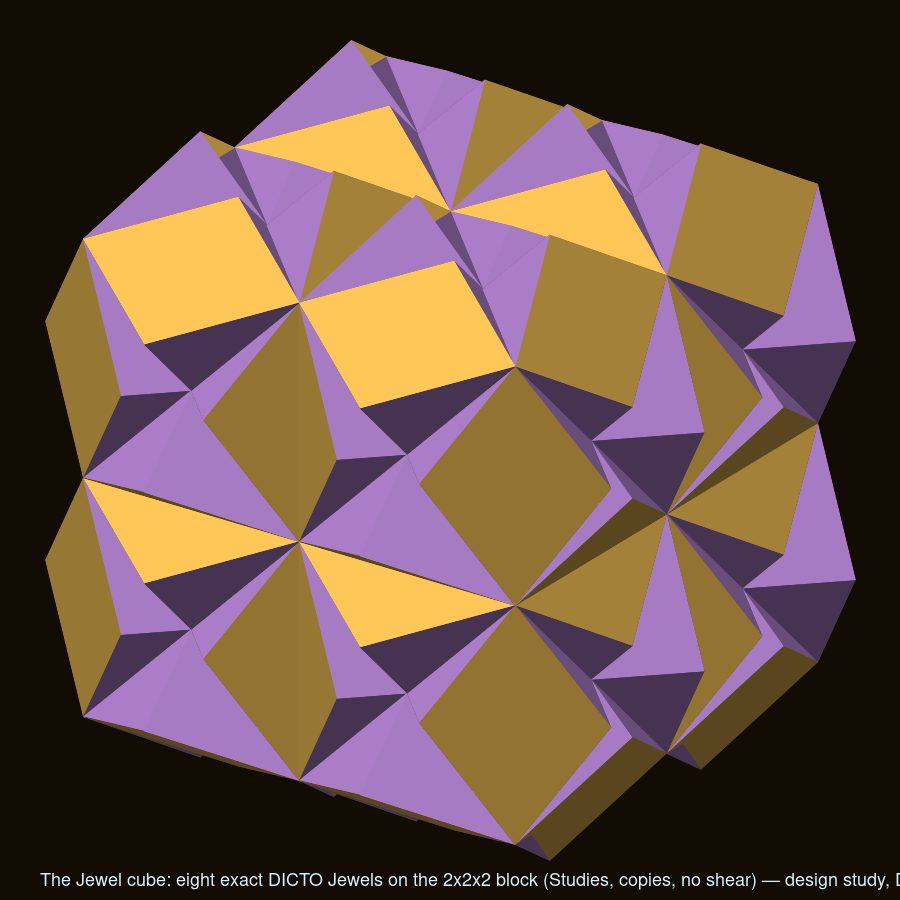
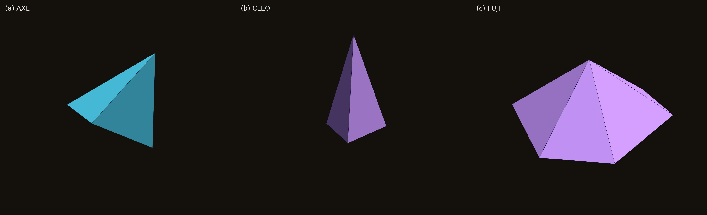
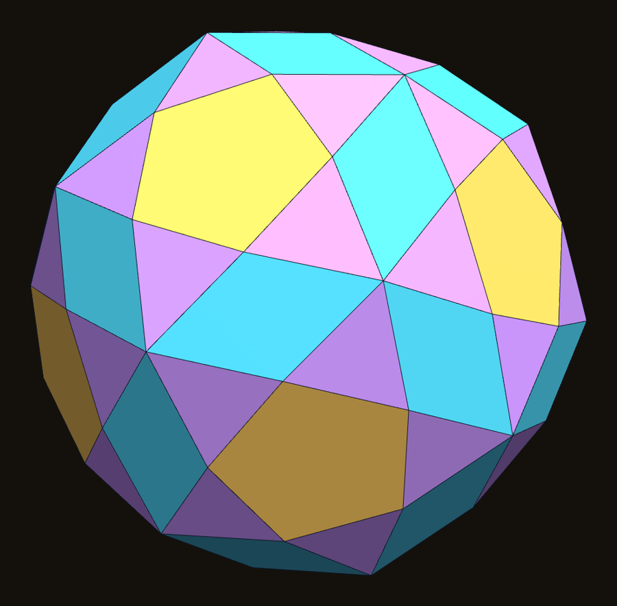
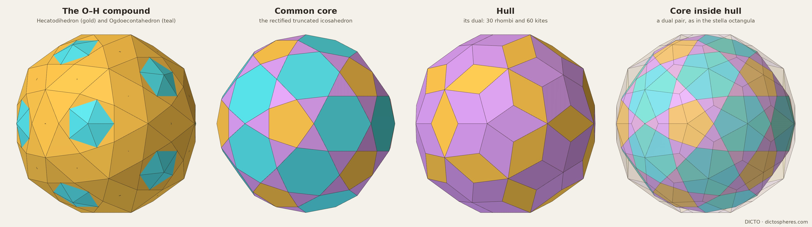
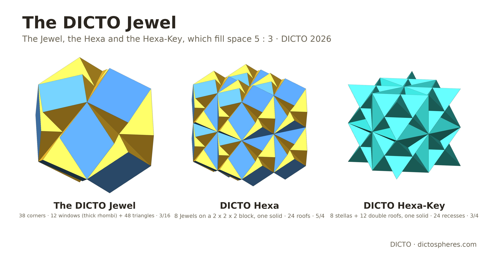
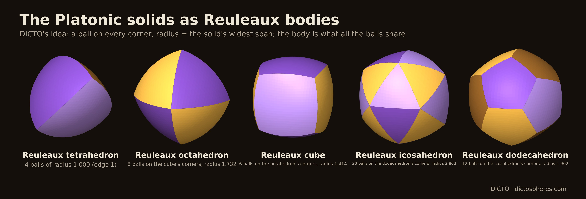

To see a World in a Grain of Sand And a Heaven in a Wild Flower, Hold Infinity in the palm of your hand And Eternity in an hour.
William Blake, Auguries of Innocence
The papers, apps and data of this work are free to use; every one is open access, under the licence CC BY-SA 4.0, free to read, share and build on.
Quanta of Space
A Manifesto
The geometric works of DICTO
DICTO
artist, Osaka, Japan · contact@dictospheres.com · https://dictospheres.com
All works, findings and names are DICTO's. Computation, checking and drafting with Claude (Anthropic).
Licence CC BY-SA 4.0
Book · Version 1.1 · 29 October 2026 · DICTO DOI: 10.5281/zenodo.23754454
For my father, Alan Baker
Contents
What this work holds Introduction: Quanta of Space 68 works: 66 papers in six chapters, with the catalogue of all the atoms, then the Kaleidohedra findings and the data set (numbers are the paper numbers on dictospheres.com) Appendix: the data, work by work
Atoms
Single solids, each an exact new piece.
#18The DICTO Hexa
#19AXE, CLEO and FUJI
#20The FUJI Family
#28The DICTO Truncated-Icosahedral Hecatodihedron
#31The DICTO Ogdoecontahedron
#31aThe DICTO OCD Stella
#34aThe DICTO Hecatogdoecontahedron
#35aThe DICTO Metaxyhexecontahedron
#35bThe DICTO Palintriacontahedron
#41The DICTO Jewel
#45The Reuleaux Platonic Solids
#49The Polyhedral Stretching Theorem
—All the atoms: DICTO's new shapes D1–D102, and his new clusters and networks
Bonds
How pieces fill space together: exact kits, packings and lattices.
#8The Euclid–Kepler–Pacioli Cell
#13The DICTO Dodeca-13
#14The DICTO-Star
#17Kagome Hulls
#25DICTO Spheroid-13 RD
#26DICTO ATOM-13×13
#30A Fibonacci Spine
#36Golden Bodhi Pyrochlore
#37The DICTO Ogdoecontahedron on the Octet Truss
#37aThe DICTO Ogdoecontahedron on the Gyrated Octet
#40The DICTO OG Family on Every Stacking
#42The DICTO Sunstar
#44Aristotle's Pyramid
#47Every Mix of the Platonic Solids Fills Space
#48The Golden Split: Icosahedra, Unborns and AXE Become Two Convex Space-Fillers
#51The Delian Bond: Samson, Delilah and the Octet Between Kepler's Rhombic Dodecahedron and the Cube
#50One Move Each: Classical Cut-and-Glue Space-Fillers Built Exactly
—Closing section: The DICTONIC SOLIDS and BONDS
#52The Web of Bonds: How the DICTONIC Bonds Hand Over
#53The Global Web of Bonds
#55David and Goliath
#56Sonsam and Lahdeli
#59The Icosaxes Hexa: Bloom, Bud and Seed
Shells
Pieces closing into nested shells round a core, each layer filled exactly.
#22The Chain of Karma
#23Spheres of Dharma
#24The Bodhi Seed
#27Capturing the In-betweens
#29Theaetetus
#34Progenitors
#35Vajrayana
Cycles
Rules that turn one shell into the next and return, with or without end.
#32Inverted Shells: The Spheres of Dharma Turned Inside Out
#33Double Vision – Both Cycles in One Space
#38Universal PiTet: The DICTO PiTet Proposition
#38aThe DICTO Kepler–Poinsot–UP Cycle
#39The DICTO OG Family: Four Steps Up and Four Down
#43DICTO Kyushindo Cores
#54One Turn Is a Gnomon
Stacking
Every close packing from a finite catalogue of pieces, and the two tiles that build it (in full in HexOct: The Laws of Stacking).
#57The Rule of Halves
#58From the Octet to Every Stacking: the Web of Bonds
#60DICTO Janus c/h Pyrochlore
#61The Swap Rule
#64The Swap Rule in Crystals
#66The Focus
#67Random Stackings and Stacking Faults
#69The Fibonacci Stacking
#68Real Polytypes and the Hexagonality Law
#70Real Materials II: Entropy and Pressure
#71Real Materials III: Alloys and Hydrogen
#72Real Materials IV: Oxides
#73Real Materials V: Ice, Diamond and Nanowires
#74Spin Ice and Kagome Magnets on Every Stacking
#75Two Tiles for Every Stacking: HexOct
Four dimensions
The White and Red Queens by their shadows and slices (in full in Alicia in Wonderland: The Red & White Queens).
#62Shadows of the Fourth Dimension
#63The White Queen 600-cell
#65The Red Queen 120-cell
Findings and apps
—Kaleidohedra by DICTO
—DICTO Solids: Exact Geometry (data set)
—At the end: known and rediscovered shapes in the work
Order and chapters as in DICTO: Collected Geometric Works (DICTO DOI: 10.5281/zenodo.23345699), with the Stacking and Four dimensions chapters added. Works from #52 on are told in short; the books HexOct, The Golden Cycle and Alicia in Wonderland hold them in full.
What this work holds
Space is built from pieces.
Every piece must be exact: a shape you could make and hold, checked to the last corner.
A small kit is enough: a handful of shapes builds shells and spaces without end.
The golden ratio decides when shells close.
Pieces join in bonds, and the web of bonds is as real as the pieces.
Repeating and never-repeating order meet in the pieces.
Everything is open: the apps, the data and the papers, free to use and to build on.
DICTO
Introduction
Quanta of Space
Is space smooth all the way down, like water? Or is it built from pieces, the way a wall is built from stones? People have asked this for two and a half thousand years. This book takes the question literally. It looks for exact sets of solid pieces that fit together with no gaps, into shells, into cycles and into the whole of space.
What follows is a family tree of an idea, not a claim about physics. The pieces in this book are shapes you could build and hold. They share a question with the old thinkers and with modern science: what are the smallest pieces of space, and how do they join?
Atoms and the empty space between them
In ancient Greece, Leucippus and Democritus taught that the world is made of tiny pieces that cannot be cut, the atoms, moving through empty space. The atoms differ only in their shape, their arrangement and their position. The Roman poet Lucretius put the teaching into verse: “nothing exists per se except atoms and the void”. So the atoms were pieces. But no one said what shapes they had.
Plato's kit of pieces
Plato gave them shapes. In his dialogue the Timaeus, the four elements are four regular solids. Fire is the tetrahedron, air the octahedron, water the icosahedron and earth the cube. All their faces are built from just two kinds of right-angled triangle. The fifth regular solid, the dodecahedron, was used “for the whole”. This was the first kit for building matter: a small set of exact pieces from which everything is put together.
Aristotle's mistake
Aristotle replied that if atoms are solid, they must fill space with no gaps. He claimed that only two solids do this: the pyramid and the cube. He was right about the cube. He was wrong about the regular tetrahedron, which does not fill space, and his error stood for centuries. Our paper #44, Aristotle's Pyramid, asks what he could have meant, and proves which pyramids cut from the regular solids can fill space; and #65 finds where all five of his pyramids belong: each is exactly the core of a regular solid of four-dimensional space, seen in perspective.
Kepler's packings
In 1596 Johannes Kepler nested the five regular solids between the spheres of the planets. In 1611, in a small book on the six-cornered snowflake, he explained the snowflake by how equal small units pack together. That became the famous question of how tightly equal balls can be stacked. Our paper #8, The Euclid–Kepler–Pacioli Cell, finds all five regular solids nested on 13 points of one repeating cell.
The quanta of modern science
In 1900 Max Planck found that energy comes in small fixed amounts, quanta. In one modern theory of gravity, called loop quantum gravity, space itself does too. In 1995 Carlo Rovelli and Lee Smolin showed that in this theory area and volume come in separate steps, not smoothly. In 2011 Eugenio Bianchi, Pietro Doná and Simone Speziale showed that each small amount of volume can be read as a little solid with flat faces, fixed by the sizes and directions of its faces. Space becomes a network of such solids, joined face to face.
There is an honest difference. In that theory two neighbouring pieces share a face of the same area, but in general not of the same shape (Freidel and Speziale, 2010). Their pieces need not fit. Our pieces always fit exactly, corner to corner. Other approaches, such as causal sets, build space and time from points rather than from solids.
So this book makes no claim about physics. It shares the question and the form: what are the smallest exact pieces from which space can be built, and how do they join?
The centre: the quanta of every close packing
Stack oranges in a crate and each new layer sits in the hollows of the one below, in one of two ways. Repeat one choice and the stack is cubic; repeat the other and it is hexagonal; mix them in any order and it is still a perfect packing. Nature uses many of these mixtures, in metals, ice, silicon carbide and the oxides of batteries.
DICTO's Rule of Halves (#57) shows that however the layers are stacked, periodic or not, the space between the balls is shared out into pieces of only finitely many kinds, every one borrowed whole or in half from the two pure stackings. That is a finite catalogue of quanta for every close packing there is: the clearest answer this work gives to the old question. Where a cubic layer meets a hexagonal one, a piece is half one and half the other: the Janus c/h pieces stand on the threshold between the two orders. The pieces change only by swapping (the Swap Rule, #61), so every count and every volume is a straight line in one number, the share of hexagonal layers (the Hexagonality Law, #66), and real crystals obey it (#67–#74). And the catalogue closes into just two tiles, one cubic and one hexagonal, that build every stacking in any order: HexOct (#75). The Law gave the pieces; the pieces prove the law.
Six chapters
Read this way, the works fall into six chapters.
Atoms are single solids, each an exact new piece: the DICTO Ogdoecontahedron (OG), the Hecatodihedron, the Jewel, the Hexa, AXE, CLEO and FUJI, the Reuleaux Platonic solids, and the six DICTONIC SOLIDS (Icosaxes, Unborn Axes, Lotus Jewel Axes, Dodecaxes, Samson and Delilah). Their exact shapes are gathered in the data set DICTO Solids: Exact Geometry, where every DICTO solid has a permanent D-number; the chapter closes with the catalogue of all the atoms, 102 numbered shapes of DICTO's and the known shapes the work builds with.
Bonds are about how pieces fill space together: exact kits, packings and lattices, from the Euclid–Kepler–Pacioli Cell to the OG on every stacking. The clearest cases are the three DICTONIC BONDS (golden, keyed and Delian): pairs of solids that fill space together. A DICTONIC BOND is one such pair; the chapter Bonds holds every way pieces join.
Shells are pieces closing into nested layers round a core, like the skins of an onion, each layer filled exactly: the Chain of Karma, the Spheres of Dharma, the Bodhi Seed and Theaetetus.
Cycles are rules that turn one shell into the next and come back round, with or without end: Universal PiTet, the OG family steps, Kyushindo Cores and the shells turned inside out. Shells and cycles are told in full in the book The Golden Cycle.
Stacking is the centre above: the Rule of Halves, the Swap Rule, the Hexagonality Law in real materials, and the two HexOct tiles, told in full in the book HexOct: The Laws of Stacking.
Four dimensions are seen by their shadows and slices: the 600-cell and the 120-cell, which DICTO named the White Queen and the Red Queen, told in full in the book Alicia in Wonderland: The Red & White Queens.
Between the repeating and the never-repeating
Some patterns repeat, like the tiles of a bathroom floor. Others never repeat, yet are perfectly ordered, like the Penrose tiling. The works in this book use the same pieces to build both.
For most of history, order in matter meant repetition. A crystal was one small cell copied without end, and five-fold symmetry was thought impossible in it. Then in 1982 Dan Shechtman found a metal alloy whose scattering pattern showed sharp five-fold symmetry. These quasicrystals, ordered but never repeating, earned him the Nobel Prize in 2011. Matter has two kinds of order, and the question became how they meet.
The pieces in this book sit on that border. One exact kit builds the repeating octet and also a crystal that never repeats, in the Fibonacci pattern (#40, The DICTO OG Family on Every Stacking). In A Fibonacci Spine (#30), five repeating packings of the OG meet round a five-fold axis. The copies that have to be taken out along that axis make exactly the Fibonacci chain, the simplest order that never repeats. The golden shells of the Spheres of Dharma (#23) repeat only by growing larger by the same golden factor at each turn. In the Fibonacci stacking (#69) the pieces of every close packing come in golden proportions, and the two HexOct tiles build repeating and never-repeating stackings alike, by the order in which they are laid. One kit, two kinds of order: the pieces themselves are the bridge.
What the pieces show
Four things come back again and again. A small kit is enough: a handful of exact shapes builds shells and spaces without limit, and for close packing the kit is finite and complete, down to two tiles. The golden ratio appears wherever five-fold symmetry does, and it decides when shells close. The pieces join the two kinds of order in matter, the repeating and the never-repeating. And the same pieces reach beyond our space: the five pyramids that Aristotle argued over are the cores of the regular solids of four dimensions.
The ancients guessed that space was made of shaped pieces, and modern physics has come back to the idea. These works build such pieces exactly and test them, and each paper behind this book is checked exactly.
Sources for the introduction: Plato, Timaeus (tr. B. Jowett); Lucretius, On the Nature of Things (tr. W. E. Leonard); Aristotle, On the Heavens III.8 (tr. J. L. Stocks); J. Kepler, Mysterium Cosmographicum (1596) and Strena seu de nive sexangula (1611); D. Shechtman, I. Blech, D. Gratias, J. W. Cahn, Phys. Rev. Lett. 53 (1984) 1951; C. Rovelli, L. Smolin, Nucl. Phys. B 442 (1995) 593; L. Freidel, S. Speziale, Phys. Rev. D 82 (2010) 084040; E. Bianchi, P. Doná, S. Speziale, Phys. Rev. D 83 (2011) 044035; S. Surya, Living Rev. Relativ. 22 (2019) 5. Rewritten from the essay Quanta of Space in DICTO: Collected Geometric Works (DICTO DOI: 10.5281/zenodo.23345699). Licence CC BY-SA 4.0.
Chapter 1 · Atoms · #18
The DICTO Hexa
A cube made of eight Jewels, its partner the Hexa-Key, and a checkerboard that fills space
If you held it
You would hold a cube with 24 low roofs on its faces, pointing outwards. It looks, in the paper's words, “beautiful and solid, like carved out of wood”. Its surface shows 24 diamond-shaped windows, each the thick rhombus of Penrose's tiling.
It is made of eight DICTO Jewels, set on a two-by-two-by-two block and passing through each other inside. As one solid it holds as much as six and two-thirds Jewels.

Figure 18. The DICTO Hexa: eight DICTO Hexa Jewels (exact DICTO Jewels on a 2 × 2 × 2 block), no shear. From the paper's Figure 1.
Where it started
The DICTO Jewel comes from the Euclid–Kepler–Pacioli Cell (#8). Take the cell's regular dodecahedron, which is a cube with Euclid's six roofs on it. Carve away the star-shaped stella octangulas of its six neighbouring cells. What remains keeps the whole cube and two-thirds of each roof, and its surface shows twelve Penrose rhombi, one on each edge of the cube: the windows. Jewels and stella octangulas, placed like the black and white cells of a checkerboard, fill space together.
We saw the cube of eight Jewels in the Studies world of the Kaleidohedra app, about eight Jewels in volume.
What we found
No amount of shearing makes eight separate Jewels meet face to face as a cube. The Hexa exists only as eight exact Jewels overlapping. Squashing the Jewels themselves loses the windows, so that was not kept.
Hexas meet each other only window to window, two whole windows per neighbour. In the face-centred cubic pattern each Hexa has 12 neighbours. The space left between them is one single solid, which DICTO named the Hexa-Key: eight stella octangulas and twelve double roofs. Hexas and Hexa-Keys then fill space like a checkerboard, five parts to three by volume, just as Jewels and stellas do one level down. There is a pleasing symmetry: the Hexa is eight cubes with 24 roofs turned out, and the Hexa-Key is eight stellas with the same 24 roofs turned in.
The Hexa also comes apart neatly, in two ways: into 8 cubes and 24 roofs, or into 4 whole Jewels and 4 trimmed ones. Eight Hexas can cluster round a sealed-in Hexa-Key, the Jewel rhombohedron of the Kagome Hulls one level up. In a diamond network, Hexas and stellas fill space with no single Jewels left over. And nothing turns: no join in these packings can be turned and still fit.
What it adds
The filling of space by stella octangulas and octahedra is known, and so are the cube, octahedron and stella octangula inside the rhombic dodecahedron. The window rhombus is one of the ten pieces of Lalvani's building system (a 1988 patent), but the Jewel is not: its walls lie in the stellas' planes, and the patent has no stella octangula or carving. We did not find a cube built from carved dodecahedra, or this block of eight, in a web search or in DICTO's reference library. As the paper says, this is not proof of novelty, and the record makes no claim of priority. The Hexa can be built in Polyhedraverse and seen in Kaleidohedra's Stella–Jewel world.
Data: Appendix A.18 (volumes, splits, clusters and the 16 checks).
The Hexa and its names are DICTO's. Design study and checking with Claude (Anthropic) in the open-source library krp-core. First released inside Kaleidohedra v2026.10.11-octet. From paper #18, Version 2, 20 October 2026. Licence CC BY-SA 4.0.
DICTO DOI: 10.5281/zenodo.23376320
Chapter 1 · Atoms · #19
AXE, CLEO and FUJI
The three gap pieces of the icosahedron
If you held them
You would hold three small pieces. AXE is shaped like an axe head: two equilateral triangles hinged together, with the sharp edge as the blade. CLEO is a slender pyramid, named after Cleopatra's Needle, the obelisk in London. FUJI is a hexagonal pyramid with the shape of Mount Fuji; its colour is that of the fuji flower, Japanese wisteria.
FUJI's base is a hexagon with all its angles equal, but with long and short sides taking turns. All six of its slanting edges have the same length.

Figure 19. AXE, CLEO and FUJI, at the one scale at which they fill the Lotus seed. From the paper's Figure 1.
The problem they solve
Twelve balls fit snugly round one, and their twelve centres are the corners of an icosahedron. Frank showed in 1952 that this cluster of thirteen atoms is more stable than the matching pieces of ordinary crystals. But it cannot be continued through space: icosahedra placed round each other always leave gaps. Two icosahedra meeting along an edge leave a wedge of empty space on each side of it.
DICTO's cluster, the Lotus seed, places twelve icosahedra round a small one, and fills every gap with just three kinds of piece. Thirty AXE close the outer grooves and thirty more the inner ones. Twenty FUJI fill the outer corners, where three icosahedra meet. Twenty CLEO fill the inner corners round the small centre. The result, in 113 pieces, is exactly one large regular icosahedron.
We first made it in the Polyhedraverse app on 5 October 2026, while working on a dodecahedron problem, in a simpler way: a dodecahedron, an icosahedron-with-a-cap-missing (a J11) on each of its 12 faces, then 30 AXE and 20 FUJI. That is 63 pieces, and the easiest way to build the Lotus seed by hand. The paper comes with printable nets for it.
What we found
AXE and CLEO turned out to be two of the Mosseri–Sadoc tiles. Sadoc and Mosseri made those tiles to describe icosahedral order in real materials. Here the same tiles arrive on their own, as the gap pieces of a cluster built from whole icosahedra.
FUJI is new. We prove that it cannot be cut up into Mosseri–Sadoc tiles of its own size or larger. One proof uses the Dehn invariant, a quantity that cutting and gluing cannot change. The other uses the angles of FUJI's hexagonal base. Whether smaller tiles could make it is left open.
The three pieces turn up all through DICTO's work. Add 20 CLEO to a small icosahedron and you get Kepler's great stellated dodecahedron. Add 30 AXE and you get the excavated dodecahedron. Add 12 caps and you have the dodecahedron: the Dodecahedral Chain, from the icosahedron to its partner through two star solids. The Chain of Karma (#22) repeats the Lotus seed at every scale, and AXE, CLEO and FUJI stay whole at every step.
What it adds
R. W. Gray described the cage of twelve icosahedra in 2002, and noted that they outline a larger one; he did not fill the gaps. AXE and CLEO are the Mosseri–Sadoc tiles. Koca and colleagues note that those tiles alone cannot grow the icosahedron past one golden step. With whole icosahedra and FUJI in their corners, the Lotus seed goes further, and the Chain of Karma carries on without end.
Data: Appendix A.19 (the pieces' edges and volumes, the angles, the two fillings, the FUJI proofs).
The Lotus seed, the 63-piece build, UNITY, the Chain of Karma, the Stella-Corona and the names AXE, CLEO, FUJI, Hasu, Triskelion, Triskelion Hex, Inner Eye, DESHI and King of Pentacles are DICTO's. AXE and CLEO are the Mosseri–Sadoc tiles t6 and t4; the DESHI arrangement is R. W. Gray's. Computation, checking and drafting with Claude (Anthropic). From paper #19, Version 3, 20 October 2026. Licence CC BY-SA 4.0.
DICTO DOI: 10.5281/zenodo.23351291
Chapter 1 · Atoms · #20
The FUJI Family
Pyramids on flat-ended triangles, and a new pair that fills space
If you held one
You would hold a pyramid on a six-sided base. The base is what DICTO calls a flat-ended triangle: a triangle with its three corners cut off flat, so that long and short sides take turns and every angle is the same. All six slanting edges of the pyramid are equal. Three of its sides are equilateral triangles; the other three are narrower.
Now imagine a slider for the short sides. Shrink them to nothing and the pyramid is a regular tetrahedron. Let them grow to match the long sides and the pyramid sinks flat into a regular hexagon. Between them, at a golden setting, is FUJI, the gap piece of the Lotus seed (#19). That slider is the FUJI family.
Figure 20. The FUJI family at one scale, all side edges equal: from the tetrahedron through FUJI to the flat hexagon. Darker faces: the three equilateral triangles; lighter: the three isosceles triangles. From the paper's Figure 2.
Where it started
The shape kept turning up. Designing the dictospheres, 3D-printed spheres with 14 PET-bottle ports, DICTO wanted sharp triangles round the ports and settled for blunted, flat-ended ones, to keep an even margin round every port. Colouring the Lotus seed, he hoped for regular hexagons and found the same flat-ended triangles. His DeltaZip and B1NR sculptures use rounded triangles, the curved form of the same idea. So we asked whether FUJI belongs to a family. It does.
What we found
Each antiprism picks a member. An antiprism is a drum of triangles between two equal polygons. For each one there is exactly one family member whose base carries on flat from the antiprism's triangles. The octahedron gives the tetrahedron. The square antiprism gives a “silver” member, tied to the silver ratio. The pentagonal antiprism, the middle of the icosahedron, gives FUJI, tied to the golden ratio.
The members live in many places. FUJI's base is the golden hexagon of a construction after George Odom. The truncated tetrahedron that Damasceno, Engel and Glotzer found to fill space has another member's base as its faces. In a “breathing” pyrochlore, a crystal of large and small tetrahedra found in some chromium oxides, every hexagon is a flat-ended triangle; at the golden setting, every hexagon is FUJI's base. And when a cube and an octahedron are cut to the same depth, the solid's eight triangles belong to the family, with the cube's corners exactly at the pyramids' tips.
Wheels. Inspired by DICTO's DeltaZip wheels, we asked how many flat wheels can cross, each pair along a different spoke. The answer is at most three square wheels, four hexagonal ones or six ten-sided ones; five eight-sided wheels are impossible. Six wheels lead, by a roundabout route, to a sphere of 20 CLEOs and to the icosahedron cut into 20 pyramids from its centre, the Cleo-Icos.
A new pair that fills space. The Cleo-Icos cannot fill space on its own. But it is exactly the sharp corner of a golden rhombohedron, a slanted box whose six faces are golden rhombi. Cut that rhombohedron twice, and it falls into a Cleo-Icos at each sharp tip and a middle piece that DICTO named Antonius, four times as large. Golden rhombohedra fill space, so Cleo-Icos and Antonius fill space, two to one, face to face. The icosahedron's own pieces, with one partner, fill space. The same pieces build the rhombic hexecontahedron. We checked a patch of 2,187 pieces with no gaps or overlaps.
What it adds
Much here is known and credited: the hexagon shape, the antiprism angles, the golden hexagon after Odom, the space-filling truncated tetrahedron, breathing pyrochlores, and the Cleo-Icos itself, which is Mackay's unit tetrahedron and one of the pyramids in Hypsicles' “Book XIV” of Euclid, about 150 BC. Our searches did not find the family as one object, the antiprism rule, the wheel bound, or the split of the golden rhombohedron into Cleo-Icos and Antonius; the paper reports what was searched and does not claim these are unknown. The family gives one shape and one slider to things found separately: a gap piece, a space-filler found by computer, the hexagons of magnetic crystals, and the faces of a cut cube.
Data: Appendix A.20 (the base-angle formulas, the antiprism rule and its proof, the table of members, the wheel bound, Cleo-Icos and Antonius).
FUJI, Cleo-Icos, Antonius, the Lotus seed, the dictospheres, the DeltaZips and B1NR sculptures, the term “flat-ended triangle” and the names are DICTO's. Computation, checking and drafting with Claude (Anthropic). From paper #20, Version 5, 20 October 2026 (text of Version 4). Licence CC BY-SA 4.0.
DICTO DOI: 10.5281/zenodo.23357896
Chapter 1 · Atoms · #28
The DICTO Truncated-Icosahedral Hecatodihedron
A solid of 102 faces, found by building one stage of the Spheres of Dharma
If you held it
You would hold a nearly round solid with 102 flat faces of three kinds: 12 regular pentagons, 30 rhombi and 60 slim triangles. The pentagons sit a little lower than the rest, like shallow dimples.
It is built on the truncated icosahedron, with a low six-sided pyramid, a Shield, standing on each of its 20 hexagons. The Shields are raised to just the height where the triangles of two neighbouring Shields lie flat in one plane and merge into a rhombus. Its edges fold at only two angles.

Figure 28. The Hecatodihedron: 12 regular pentagons (gold), 30 rhombi (cyan), 60 triangles (wisteria). From the paper's Figure 1.
Where it started
The Spheres of Dharma (#23) grow an icosahedron layer by layer, through the icosidodecahedron, the dodecahedron, the truncated icosahedron and the rhombic triacontahedron, back to an icosahedron a golden step larger. In Capturing the In-betweens (#27) each closed stage of that growth is taken as one solid. Stage 7, the truncated icosahedron with a Shield on every hexagon, turned out to be convex, with fewer faces than its pieces suggest: 102. It was found by building it.
What we found
At the special height, the 60 triangles across the edges where two hexagons meet pair up into 30 rhombi. The 60 triangles next to the pentagons stay triangles. The 20 tips of the Shields then sit exactly on the corners of a regular dodecahedron.
The rhombi and the triangles, 90 faces in all, touch one sphere. The 12 pentagons lie a little inside it, so the solid has no sphere that touches every face. An earlier paper of ours said all 102 faces touch one sphere; that was wrong, and it has been corrected.
What the solid is, exactly: the tips of the Shields are the corners of a known solid, the pentakis dodecahedron, the partner of the truncated icosahedron. So the Hecatodihedron is a known solid, the joined truncated icosahedron, with its 12 five-fold corners cut off flat at the pentagons: an unnamed solid derived from a known one. Its partner, made by turning it inside out, is the DICTO Ogdoecontahedron (#31). The two interlock into one compound of 182 faces, which DICTO named the DICTO Hecatogdoecontahedron (#34a).
What it adds
Its pattern of faces is close to Conway's hexakis truncated icosahedron, which has 132 faces; ours is that solid flattened, with 30 pairs of triangles merged. It is not an Archimedean, Catalan or Johnson solid. We searched Conway's notation, the Johnson solids and their near misses, MathWorld, the Polytope Wiki and McCooey's catalogue, and did not find it named. That is a report of where we looked, not a claim that the solid is unknown. The name is DICTO's: hecatodi- for its 102 faces, from the Greek for one hundred and two, as in the hecatonicosachoron; truncated-icosahedral for the solid it grows from. It can be opened in Polyhedraverse (DICTO Transitional Shells) and seen in the DICTO-TIC world.
Data: Appendix A.28 (faces, distances, angles, volume, the exact relation to the joined truncated icosahedron, the searches).
The solid is a stage of DICTO's Spheres of Dharma, found by building it, and the name is DICTO's. Computation and checking with Claude (Anthropic). From paper #28, Version 3, 20 October 2026. Licence CC BY-SA 4.0.
DICTO DOI: 10.5281/zenodo.23360857
Chapter 1 · Atoms · #31
The DICTO Ogdoecontahedron
A solid of eighty faces, found by turning a set of nested shells inside out
If you held it
You would hold a nearly round solid with 80 flat faces: 20 regular hexagons and 60 kites. Everywhere you look, kites crowd round the hexagons. At 12 points, five kites meet in a point that stands just a little proud of the rest.
Roll it in your hand and it looks the same from many sides. It has the full symmetry of the icosahedron, the twenty-sided regular solid. Its 102 corners almost all lie on one sphere: 90 of them sit exactly on it, and only the 12 five-kite points sit just outside. The faces meet along edges of only two lengths, and they fold at only two angles, which are almost the same. Each kite has two long sides, the same length as the hexagon's sides, and two shorter ones. DICTO named it for its eighty faces: Ogdoecontahedron, from the Greek words for “eighty” and “face”. For short it is the OG.
Figure 31. The DICTO Ogdoecontahedron, hexagons wisteria, kites cyan: (a) seen at a slant; (b) looking straight at a regular hexagon in the centre; (c) looking straight at one of the 12 outer points where five kites meet. From the paper's Figure 1.
How it was found
It began with an earlier work, the Spheres of Dharma (#23). There, six solids sit inside each other like Russian dolls. The gap between each doll and the next is filled exactly by a few repeated pieces, and the nesting repeats without end. Part-way through one layer, the caps on its hexagons close into a solid of their own, the DICTO Truncated-Icosahedral Hecatodihedron (#28).
On 13 October 2026 it was DICTO's idea to turn the whole nesting inside out. Simply turning each layer's pieces over does not work: no layer closes into a shell. What does work is an old trick of geometry. Take one sphere round the common centre and use it like a mirror: every flat face becomes a corner, and every corner becomes a flat face. Each solid turns into its partner, and the order of the nesting reverses, so that the inside goes outside.
We did this to all seven solids: the six of the nesting and the Hecatodihedron between them. Six came out as solids that were already known. One did not. The Hecatodihedron turned into this new solid, the Ogdoecontahedron.
What we found
The OG has a simple description once it is found. Take a known solid, the pentakis dodecahedron. Find its 20 corners where six faces meet, and slice each one off flat. Each slice leaves a regular hexagon, and what remains of the old faces are the kites. Adding a cap on one side of the mirror is cutting a corner on the other: the Hecatodihedron adds a low pyramid to each hexagon of its parent, and the OG cuts a corner instead.
In the reversed nesting the OG sits snugly between two classical solids. Its hexagons lie in the faces of the icosidodecahedron inside it, and its kites lie in the faces of the pentakis dodecahedron around it.
It was DICTO's idea, too, to join copies of the OG hexagon to hexagon. Join each copy to four others, through four hexagons that point like the corners of a tetrahedron, and the copies form a diamond network. The joints themselves sit on a pattern of corner-sharing tetrahedra, the pyrochlore lattice. A second network fits into the empty places of the first, touching it only on hexagons. Together the two make one tidy stack: every copy faces the same way and touches eight neighbours, through the eight hexagons that point to the corners of a cube. This stack fills 77.43 per cent of space. That is more than the tightest possible stack of equal balls, like oranges on a market stall, which fills 74.05 per cent. A computer search found a slightly denser regular stacking, but it is not proved to be the densest.
The OG joins the regular hexagon, at home in repeating patterns, to five-fold symmetry, the symmetry of quasicrystals. We tested whether it is a piece of the standard icosahedral quasicrystal. It is not. But it can be stacked in five such ways, and where the five stacks meet round a five-fold axis, the copies that must be taken out, with the copy in the middle, form exactly the Fibonacci chain near the centre. That is the subject of A Fibonacci Spine (#30).
What it adds
Much of this is old and is credited in the paper: turning solids inside out about a sphere, the pentakis dodecahedron and the cutting of its corners, the diamond and pyrochlore lattices, and the stacking of equal balls. Even the OG's pattern of faces, which face meets which, is known: it can be written in the notation of the Antiprism software. What we did not find, in DICTO's reference library, in McCooey's online catalogue of 553 solids or in web searches, is the solid itself, with these regular hexagons and these kites, or its exact hexagon-joined stacks. So the OG is an unnamed solid derived from a known one. Its name is DICTO's; the solid with these faces, and its stacks, were not found in the sources checked.
Data: Appendix A.31 (counts, exact edge lengths, angles, radii and volume; the stacks and their density; the quasicrystal tests; the sources searched).
The Hecatodihedron, the idea of turning the Spheres of Dharma inside out, the name Ogdoecontahedron and the idea of joining copies on their hexagons into pyrochlore networks are DICTO's. Computation, exact arithmetic and renders with Claude (Anthropic). From paper #31, Version 4, 20 October 2026. Licence CC BY-SA 4.0.
DICTO DOI: 10.5281/zenodo.23404688
Chapter 1 · Atoms · #31a
The DICTO OCD Stella
The Ogdoecontahedron's companion, cut along its joints
If you held it
You would hold a faceted, gem-like solid with 48 corners and 50 faces: 6 hexagons and 24 four-sided faces, all set in golden planes, and 20 triangles. Eight of the triangles are special. They are the flat places where it meets its neighbours.
It is not as round as the icosahedral solids around it. Its cut keeps only 24 of their symmetries, the ones they share with a cube. (Geometers call this pyritohedral, after the crystals of pyrite.)
Figure 31a. The DICTO OCD Stella. From the paper's Figure 1 (left).
Where it started
The DICTO Ogdoecontahedron (#31) packs in a body-centred cubic arrangement, each copy joined to eight neighbours on its hexagons. Golden adapter pieces fit round each copy, and together they have a solid outline, the OG's companion. In DICTO's words, it was “a free gift from the way the adapters sat on the OCD”. Cut the companion along the eight joints, and you have the DICTO OCD Stella.
What we found
It packs. Copies of the OCD Stella meet face to face across all eight joints and fill 87.12 per cent of space.
It makes a seed. Set twelve OCD Stellas round a small one, and they fill a larger OCD Stella exactly, the same pattern as the Bodhi Seed (#24), even though the OCD Stella is less symmetric.
It makes crystals. The OG's packing splits into two diamond networks. It was DICTO's idea to put a partner on the second network while the OCD Stellas stay on the first. With icosahedra as partners, every solid meets its eight neighbours face to face. It was DICTO's idea, too, to cut the remaining gap into pieces, and it falls into exactly four kinds of convex piece. With regular octahedra as partners, DICTO's next idea, each octahedron's six tips nest in notches in the OCD Stellas, and the crystal fills 96.33 per cent of space. With octahedra on only a quarter of the sites, as in rock salt, it fills 91.72 per cent.
The Atom 13. DICTO's idea again: twelve OCD Stellas round a central one, each pushed out until it touches the centre. They meet the centre flat and never touch each other. Twenty icosahedra fit into the gaps between them.
What it adds
The companion's pattern of faces is known (the chamfered icosahedron), and a different golden space-filler cut from the rhombic triacontahedron on the same kind of lattice is known (Kabai's 54-faced space-filling polyhedron). That one fills all of space; the OCD Stella is a different solid and fills 87.12 per cent. Crystals of two kinds of hard solids, such as tetrahedra with octahedra, are also known. We did not find the OCD Stella, its packing, its seed, its crystals, the gap pieces, the notched OCD Stella or the Atom 13 in the sources checked, which included 64 texts of DICTO's reference library searched in full. You can see the crystals in Kaleidohedra (3D+ → OCD Stella Crystals).
Data: Appendix A.31a (the solid's exact volume and faces, the seed, the four crystals and their fills, the gap pieces, the Atom 13).
The companion, the stella cut, the seed, the name, the partners on the second network (icosahedra and octahedra), the pyrochlore arrangement, cutting the gap into pieces and the Atom 13 are DICTO's; the exact computations and the text were done with Claude (Anthropic). From paper #31a, Version 3, 20 October 2026. Licence CC BY-SA 4.0.
DICTO DOI: 10.5281/zenodo.23430870
Chapter 1 · Atoms · #34a
The DICTO Hecatogdoecontahedron
Two partner solids locked into one
If you held it
You would hold two solids passing through each other, like the two tetrahedra of a star-shaped stella octangula. One is the DICTO Hecatodihedron (#28), with 102 faces. The other is the DICTO Ogdoecontahedron (#31), with 80 faces. Corners of each poke out through the faces of the other.
Together they have 182 faces and 182 corners. DICTO named the pair by merging the two names: the Hecatogdoecontahedron, 102 and 80 together.

Figure 34a. The DICTO Hecatogdoecontahedron: the Hecatodihedron (gold) and the Ogdoecontahedron (teal) interlocked, with the truncated icosahedron and the common core and hull. Drawn from exact corners. From the paper's Figure 1.
What we found
The two solids are partners: turn one inside out about a sphere, and you get the other. Here the sphere is the one that touches the middle of every edge of the truncated icosahedron. At that size the two solids interlock exactly. The Ogdoecontahedron's 90 corners on that sphere sit exactly at the 90 edge midpoints of the truncated icosahedron. No corner of either solid lies inside the other.
Because the two are partners, the pair is its own partner: turned inside out, the compound swaps its two solids and stays the same.
The part the two solids share, their common core, is the rectified truncated icosahedron. The outline that wraps them both, the hull, is the joined truncated icosahedron, also called the rhombic enneacontahedron. These are exactly the core and hull of a classical pair, the truncated icosahedron with its partner the pentakis dodecahedron. So the new pair shares out the space of a classical compound in a new way. It is like the octahedron and cube, which are the core and hull of the stella octangula.
In Progenitors (#34), the core and the hull become stations of a golden cycle, so that cycle holds the cores and hulls of two partner compounds: the classical icosahedron with dodecahedron, and this one.
What it adds
Compounds of a solid with its partner are known. So are the classical truncated icosahedron–pentakis dodecahedron compound, the rectified truncated icosahedron and the rhombic enneacontahedron. We claim only the pairing and the name, not the core or the hull. The compound of these two solids was not found in the sources checked, and the name returns no search results. It can be seen in Kaleidohedra (3D+ → Vajrayana, and Multi-shell chains).
Data: Appendix A.34a (the counts of the two solids, the compound, its core and hull).
The pairing and the name are DICTO's; the exact computations and the text were done with Claude (Anthropic). The compound was first described in Version 2 of the Hecatodihedron paper (#28). From paper #34a, Version 2, 20 October 2026. Licence CC BY-SA 4.0.
DICTO DOI: 10.5281/zenodo.23430868
Chapter 1 · Atoms · #35a
The DICTO Metaxyhexecontahedron
The solid in the last gap of the golden cycle
If you held it
You would hold a solid of 60 identical triangles, slightly pointed at 12 places where five triangles meet and blunter at 20 places where three meet. It has 32 corners and 90 edges. A ball could sit inside it touching all 60 faces at once.
It is made by wrapping one skin round two classical solids at once: a regular icosahedron, and a dodecahedron whose corners sit over the icosahedron's faces. How big the dodecahedron is decides the shape. DICTO's solid is one exact size in that range. Its name means “the in-between solid with sixty faces”, from the Greek metaxý, in between.
Figure 35a. The DICTO Metaxyhexecontahedron. Drawn from exact corners. From the paper's Figure 1 (left).
Where it started
The Spheres of Dharma (#23) nest icosahedral shells in a cycle that repeats at a golden step. Progenitors (#34) set the DICTO Ogdoecontahedron into it, and Vajrayana (#35) took up its loose steps. In one of them, from the rhombic triacontahedron to the next icosahedron, the triacontahedron reaches only part of the way. It was DICTO's idea that one more solid should fit there. None of the other convex icosahedral solids tested touches both neighbours. This one does.
What we found
The Metaxyhexecontahedron fits the gap exactly. Its 12 five-fold corners are the triacontahedron's own corners, and its 20 three-fold corners sit exactly on the centres of the next icosahedron's faces. It touches both sides.
Better still, each of the two layers it makes is filled by a single kind of piece: 30 identical pieces between the triacontahedron and the new solid, and 60 identical pieces between the new solid and the next icosahedron. Its partner, made by turning it inside out, closes the matching step in the inside-out version of the cycle.
It belongs to a family: all the skins round a dodecahedron and an icosahedron in this position, as the dodecahedron grows. That family holds the Catalan pentakis dodecahedron, the DICTO Palintriacontahedron (#35b) and the DICTO Metaxyhexecontahedron. One curiosity is noted without explanation: the size ratio that defines it is also the exact gain per round of the tightest cycle in Progenitors.
What it adds
The family is known: the Polytope Wiki gives its range, and MathWorld and McCooey give the Catalan member. Not found in the sources checked: this member as a named or distinguished solid, or its size ratio as distinguished. Its number matches no sequence in the OEIS, and the name returns no search results. It can be seen in Kaleidohedra (3D+ → Vajrayana).
Data: Appendix A.35a (the closed form, edges, radii, insphere, volume, the cycle step).
The idea that one more solid fits the last gap of the cycle, and the name, are DICTO's; the exact computations and the text were done with Claude (Anthropic). From paper #35a, Version 3, 20 October 2026. Licence CC BY-SA 4.0.
DICTO DOI: 10.5281/zenodo.23430864
Chapter 1 · Atoms · #35b
The DICTO Palintriacontahedron
The rhombic triacontahedron turned inside out
If you held it
You would hold a solid of 60 triangles with 32 corners: 12 where five triangles meet and 20 where three meet. Each triangle is exactly half of a rhombus from Kepler's rhombic dodecahedron.
Its name, from the Greek pálin, “back”, says what it is: the rhombic triacontahedron turned back on itself. It points along the same 32 directions as the triacontahedron, but where that solid's corners are far out, this one's are near in, and the other way round.
Figure 35b. The icosidodecahedron star (its central pyramids flipped out at full height), inside its hull, the DICTO Palintriacontahedron, and the Palintriacontahedron interlocked with the next icosahedron. Drawn from exact corners. From the paper's Figure 1.
Where it started
In the twelve-station golden cycle of Vajrayana (#35), the icosidodecahedron is the shell where the cycle's two progenitors meet. An icosidodecahedron can be cut into 32 pyramids from its centre, one over each face. DICTO flipped those pyramids outward, at their full height, rather than shortening them. In his words: “shortening feels like cheating; one more solid is needed”. The skin round the 32 tips is the Palintriacontahedron.
What we found
It is the triacontahedron turned inside out: the same 32 axes, with the ratio of its two kinds of corner distance reversed. It is also a member of the same family as the Metaxyhexecontahedron (#35a): the skins round a dodecahedron and an icosahedron. Its place in that family lies between the Catalan pentakis dodecahedron and the Metaxyhexecontahedron.
It reaches across the cycle. Measured by computer, it lies inside the next turn's dodecahedron, and almost all of it, 99.46 per cent, lies inside the next icosahedron's Cleo star. So it bridges one turn of the golden cycle to the next. A small coincidence of numbers: the first stellation of the icosahedron puts its tips at the same ratio that defines this solid.
What it adds
The family and its range are known (the Polytope Wiki), and so are the rhombic triacontahedron and the icosidodecahedron's central pyramids. Not found in the sources checked: this member as a named or distinguished solid, or its size ratio as distinguished. The name returns no search results.
Data: Appendix A.35b (the closed form, the face angles, edges, radii, insphere and volume).
Flipping the icosidodecahedron's own central pyramids out at full height, and the name, are DICTO's; the exact computations and the text were done with Claude (Anthropic). From paper #35b, Version 2, 20 October 2026. Licence CC BY-SA 4.0.
DICTO DOI: 10.5281/zenodo.23430866
Chapter 1 · Atoms · #41
The DICTO Jewel
Euclid's dodecahedron carved by its neighbours' stars
If you held it
You would hold a cut gem with 60 faces: twelve diamond-shaped windows and 48 small triangles. Each window is a thick Penrose rhombus, the fatter of the two tiles of Penrose's famous never-repeating pattern, with corners of 108° and 72°. On each of its six sides there is a small dimple.
Underneath it is a cube. The windows lie across the cube's twelve edges, and the triangles are the walls where it was carved.

Figure 41. The DICTO Jewel. From the paper's cover figure.
How it is made
Euclid built the regular dodecahedron by setting a roof on each face of a cube. Now place cubes side by side to fill space, like a checkerboard in three dimensions. Put Euclid's dodecahedron on the white cubes. On the black cubes put the star made of two interlocking tetrahedra, Kepler's stella octangula. Each roof of a dodecahedron reaches into a black cube, and the star there carves part of it away. What is left is the DICTO Jewel: the cube and its six carved roofs.
What we found
Jewels and stars fill space. Jewels on the white cubes and stella octangulas on the black cubes fill space exactly, three parts to one by volume, in the pattern of table salt. This was first checked by sampling points; here it is proved exactly. Each black cube is precisely its star plus the six carved roofs pushed into it by its neighbours.
Clusters named as solids. DICTO's clusters of Jewels become single solids with his names. The Jewel-Tetra is four Jewels that all touch, window to window. The Jewel-Octa is six Jewels round a black cube, with that cube's star sealed in the hole between them, filling it exactly. The Jewel-Rhombi is eight Jewels on the corners of a slanted box, again with a star sealed inside.
How they fill space. Jewels make up only three-quarters of space, so no group of Jewels alone can fill it: stars must come too. Each of the three clusters fills space with copies of itself and loose stars, and we found every regular way of doing so. Together, Jewel-Tetras and Jewel-Octas sit exactly where the tetrahedra and octahedra of the octet truss sit, though as overlapping solids, not as a tiling.
The Hexa, proved. The DICTO Hexa and Hexa-Key of paper #18, and their five-to-three filling, are proved exactly here. The same pattern repeats one level up: a cube with roofs added is a Jewel and with roofs taken away a star; a block of eight with roofs added is a Hexa and with roofs taken away a Hexa-Key.
Twins. As a single solid, the Jewel twins like the DICTO Ogdoecontahedron. Its packing does not twin across a slanting mirror, and the paper gives the simple reason: that mirror does not keep the grid of cubes.
What it adds
The parts are classical: the roofed cube is Euclid's, the stella octangula Kepler's, the thick rhombus Penrose's, the arrangement that of table salt. The Jewel itself, its lattice and the clusters were first published by DICTO in the Kaleidohedra app and in Kagome Hulls (#17); the Hexa in #18. New here are the exact proofs, the three cluster solids and their face counts, every lattice tiling of the three with loose stars, the octet pattern with its limit, and the exact reason the packing does not twin. Lalvani's 1988 patent builds structures from pieces whose edges all lie on certain icosahedral axes; only the Jewel's window edges do, so it falls outside that condition. We did not find the Jewel, its clusters, the Hexa or the Hexa-Key outside DICTO's own records, in 80 library sources searched in full and in web searches.
Data: Appendix A.41 (the volumes, corners and faces, the tiling proof, the cluster counts and lattices, the Hexa proof, the twin).
The Jewel, its stella-octangula counterpart, its name, its clusters (and the Jewel-Tetra, Jewel-Octa and Jewel-Rhombi as single solids, and their names), the Hexa, the Hexa-Key and their names are DICTO's. Computation, exact proofs and drafting with Claude (Anthropic). From paper #41, Version 1, 20 October 2026. Licence CC BY-SA 4.0.
DICTO DOI: 10.5281/zenodo.23496353
Chapter 1 · Atoms · #45
The Reuleaux Platonic Solids
Rounded bodies made where balls on the corners of a Platonic solid overlap
If you held one
You would hold a smooth, rounded body with curved faces meeting along curved edges, like a pebble that still remembers the solid it came from. Each face is a piece of the surface of one ball.
Oddly, each body looks like the partner of the solid it was made from. Balls on the corners of a cube make a body that looks like an octahedron, and balls on an octahedron make one that looks like a cube. So DICTO named them by their look: the Reuleaux octahedron (balls on the cube), the Reuleaux cube (on the octahedron), the Reuleaux icosahedron (on the dodecahedron) and the Reuleaux dodecahedron (on the icosahedron).

Figure 45. The five bodies at solid edge 1, each with its faces coloured with the fewest colours that keep neighbours apart (gold, purple, lilac, bronze). Under each: the number of balls and their radius, which is the solid's diameter. From the paper's Figure 1.
How they are made
It was DICTO's idea. Put a ball on every corner of a Platonic solid, each ball just large enough to reach the farthest corner. The space that all the balls share is a rounded body. On the tetrahedron this is the famous Reuleaux tetrahedron. Building the same body on all five Platonic solids, as one family, is DICTO's idea, and the other four did not appear in the sources we checked.
What we found
The main theorem says how thick these bodies are.
Never thinner than the solid is wide. A rounded body of the same thickness in every direction fits inside each one, and nothing can be thinner than a body it holds. Measured between two opposite corners, the thickness is exactly the solid's width.
Through a face, exactly. Measured straight through the middle of a face, the thickness is exactly a number we can write down. By symmetry the outermost point lies on that line, and it can reach only as far as the farthest corner's ball allows.
Partners agree. A solid and its partner, the cube and the octahedron, or the dodecahedron and the icosahedron, give bodies exactly as thick as each other through their faces.
The tetrahedron follows its own rule, and the classical Reuleaux tetrahedron comes out right: our computed volume agrees with the known formula. Despite their names, the four new bodies are not Reuleaux polyhedra in the strict mathematical sense: each corner lies on only one other ball's surface. They are “ball polyhedra”.
We believe the line through a face is also the thickest direction of all. The computer agrees to twelve digits, over 3,000 directions, but it is not yet proved. That is left as a conjecture.
Colours. The faces of each body meet just as the faces of the partner solid do. So the fewest colours that keep neighbouring faces apart are 4, 2, 3, 3 and 4, the numbers DICTO read from the look.
What it adds
The Reuleaux tetrahedron and its volume are known, as are ball polyhedra in general, Reuleaux polyhedra and Meissner's solids. The three library papers on these bodies use only the regular tetrahedron. In the 81 library sources searched in full we did not find the bodies on the other four Platonic solids or their widths. One paper on the subject, Sallee's, is in the library as a link only and was not read.
Data: Appendix A.45 (the theorem, the exact widths, the proof sketch, the table of the five bodies, the checks).
The construction (a ball on every corner of a Platonic solid, radius the solid's diameter) and the names by look are DICTO's idea; computation, proofs and drafting with Claude (Anthropic). From paper #45, Version 2, 22 October 2026. Licence CC BY-SA 4.0.
DICTO DOI: 10.5281/zenodo.23529499
Chapter 1 · Atoms · #49
The Polyhedral Stretching Theorem
Slide a solid one edge-length, and every edge stays the same
If you held one
You would hold a long, faceted solid: a regular dodecahedron that has been stretched. Its twelve pentagons are all still there, at the two ends, and between them runs a belt of ten diamond-shaped faces. Every edge, on the pentagons and on the belt alike, has the same length.
Looked at end on, its outline is a ten-sided polygon. Looked at from the side, it shows the long hexagon where it all began.
Figure 49. The dodecahedron swept along the face diagonal of Euclid's cube to the next dodecahedron: twelve pentagons (violet) and a belt of ten long faces (lilac). Left: along the long edge, the long hexagon DICTO saw. Middle: end on, a decagon. Right: oblique. From the paper's Figure 1.
Where it started
In paper #47, dodecahedra sit on every other cube of a grid. Looking into that block in the Kaleidohedra app, DICTO saw a void, a long six-sided space, with two dodecahedra overlapping it on either side. It was his idea to make a dodecahedron variant to fit it. Taken together, the void and the two overlaps make one solid: the space a dodecahedron passes through as it slides from one of the two places to the other. DICTO had found a first member of this family earlier, also from overlapping dodecahedra: the stretched dodecahedron, published as finding F11.
What we found
The theorem. Take any solid whose edges are all the same length, such as a dodecahedron. Slide it one edge-length in a straight line, in any direction except along one of its own edges. Every edge of the shape it sweeps comes out one edge-length long. The reason is short: every edge of the new shape is either one of the solid's own edges, moved, or a copy of the slide itself, and both are one edge-length long.
What happens to the faces is easy to picture. The faces at the two ends stay just as they were. A face that lies along the slide gets longer and gains two sides. And round the middle grows a belt of diamonds, one for each edge on the solid's outline.
Special directions. Sliding along an axis of the dodecahedron's own symmetry gives the cleanest shapes. Slide through two opposite pentagons, and the belt has ten diamonds, all alike. The face-diagonal slide keeps all twelve pentagons.
Equal-edged and telescoped. DICTO names the whole family the DICTO stretched solids: equal-edged when the stretch is one edge, telescoped at any other length. The faces keep their kinds; only the belt grows.
Three and four caps. Instead of sliding along a line, put a dodecahedron at each corner of a triangle or a tetrahedron and wrap them together. Again every edge is equal, and equilateral triangles appear among the faces. DICTO also wondered whether turning one end might make the belt into triangles. It cannot: the rim zigzags, and the best band of triangles is still a third of an edge off. Three and four caps give the triangles instead.
Every equal-edged solid. The theorem works for all the Platonic solids. Stretch the tetrahedron and octahedron and famous shapes appear: the cuboctahedron, the truncated tetrahedron and three Johnson solids, a good sign that the stretch is a natural operation. The stretched icosahedra form a second, new-looking family.
Make your own. Printable nets come with the paper, and a telescoping model in three parts that slides from the short shape to the long one.
What it adds
The method is old: sliding a solid along a line is a standard construction (the Minkowski sum), and how faces behave under it is known in general. Hart and Picciotto built triangle-and-rhombus solids the same way, without pentagons, and for zonohedra the stretch of a zone is classical (Grünbaum, after Fedorov). We did not find the dodecahedron swept along a face diagonal, a body diagonal or a five-fold axis, nor the three- and four-cap forms, named or described. Since the construction is simple, they may exist somewhere unnamed; we present them as DICTO's family on that understanding. The stretch of the thirteen Archimedean solids is left for later.
Data: Appendix A.49 (the theorem in full, the proof, the tables of directions and of the icosahedron family, the checks).
The stretched dodecahedron (F11), the long hexagon seen in the dodecahedron layer, the three- and four-cap forms and the telescoping model are DICTO's ideas; computation, proofs and drafting with Claude (Anthropic). From paper #49, Version 2, 22 October 2026. Licence CC BY-SA 4.0.
DICTO DOI: 10.5281/zenodo.23566671
Chapter 1 · Atoms · the catalogue
All the atoms
Every named shape of the work, one quantum of space each: first DICTO's new shapes, 102 of them, D1 to D102 (given in order of first publication, never reused); then his 31 new clusters, structures and networks built from them; the 23 known or rediscovered shapes the work builds with are listed at the end of the book. A shape whose exact geometry is in the dataset DICTO Solids: Exact Geometry is drawn, all in one pose: gold for DICTO's new shapes, silver for known ones. Under each: its kind, the paper or finding it comes from (linked to its DICTO DOI), and the status found by the prior-art search.
not found in the sources checked (#56): the twinned octet's tetrahedral-hole piece at its equal-volume point (19 corners, a nine-sided face on the mirror plane); #56: easy to compute, so an unnamed drawing may exist
not found in the sources checked (#57): a Janus c/h piece of ABAC at -3/8 (hexagonal top half, cubic bottom half); its volume is the mean of its two parents'
not found in the sources checked (#57): a Janus c/h piece of ABAC at 5/24 (hexagonal top half, cubic bottom half); its volume is the mean of its two parents'
the piece of the keyed Icosaxes Kagome network (the Icosaxes with 2 Tricap dents and 6 mirrored Tricap keys, volume phi^2); the network was not found in the sources searched (#59)
not found in the sources checked (#61): the Janus c/h tetrahedral piece of a squashed stacking (cubic bottom, hexagonal top); in the dataset at the parameters of #61 Figure 1 (ACBC, layer spacing^2 = (3/4)(2/3), lambda = 1/10)
Shape first found by Alicia Boole Stott (1900), by construction, drawn as a plan and built as a card model; its exact geometry (coordinates, volume, symmetry, checked) computed by DICTO in #63.
new construction from a known piece (J11, Johnson's gyroelongated pentagonal pyramid, Johnson 1966): two J11 glued on their pentagons; #62 identifies it as the equal-edged form of the 600-cell's outer edge-first slices; status decided by DICTO 2026-10-28; placeholder name of #62
R77: 120-cell pentagon-first central slice, two regular decagons; the polar of the 600-cell's edge-first shadow; not found in the sources checked (#65)
R113: 120-cell cell-first slice in a gap (cut at its midpoint), 120 corners; a gap section, not in Boole Stott's series; not found in the sources checked (#65)
R115: 120-cell cell-first slice in a gap (cut at its midpoint): the faces and symmetry of the truncated icosidodecahedron (30 squares, 20 hexagons, 12 decagons, Ih) with two edge lengths; not found in the sources checked (#65)
the equal-edged form of Humpty Dumpty's pattern: 48 corners, 92 equilateral triangles, 138 equal edges, Td, non-convex (dihedrals 81.75°–243.20°); Slice-48 in #62, named Fallen Humpty in #63; not found in the sources checked (#62); number given 2026-10-29 (missed in versions 4–5, D-numbers never reused)
Without an exact model in the dataset yet (made in the apps or described in the papers):
eight Icosaxes round an Unborn Axes as one solid (= nine Icosaxes passing through each other), the node of the Icosaxes Kagome network; the network was not found in the sources searched (#59)
four bodies; not Reuleaux polyhedra in the strict sense (#45)
Chapter 2 · Bonds · #8
The Euclid–Kepler–Pacioli Cell
All five Platonic solids nested on 13 points of one repeating cell
If you held it
You would hold a cube, and inside it, all at once, the other Platonic solids. A small icosahedron sits in the middle. Around it are an octahedron, the two interlocking tetrahedra of Kepler's star, the cube itself, and outside the cube a dodecahedron, made by setting a roof on each of the cube's six faces.
All of them rest on just 13 points per cube. Stack the cubes side by side, and the pattern repeats through all of space.
Figure 8. One cell: the cube (grey), Euclid's dodecahedron (gold), Kepler's great stellated dodecahedron (orange) and the icosahedron (green), all on the same 20 + 12 points. From the paper's Figure 1.
How it is made
Euclid built the dodecahedron by setting a roof on each face of a cube. Now fold each roof's ridge back through the face it stands on, into the cube. The twelve ridge points land exactly on the corners of a regular icosahedron in the middle of the cube. Repeat the cube in every direction. Then a roof of one cell is exactly an icosahedron corner of the next cell: the neighbours' roofs meet in the middle of every cube.
Seen from inside a cube, the six neighbours' ridges form three golden rectangles at right angles, interlocking. These are Pacioli's golden rectangles from his book De divina proportione of 1509. Hence the name: Euclid for the roofs, Kepler for his stars and nested solids, Pacioli for the rectangles. DICTO named it, with the short name EKP.
What we found
One cell nests all five Platonic solids exactly: icosahedron inside octahedron, inside the two tetrahedra, inside the cube, inside the dodecahedron, with Kepler's great stellated dodecahedron round the icosahedron. Each step of the nesting is classical; what is new is that the whole chain is one repeating cell.
The dodecahedra of neighbouring cells overlap. But from the same points, solids can be chosen that do not. Dodecahedra on every other cell touch and never overlap; this is the known densest lattice packing of the dodecahedron, found again inside the cell. And Kepler's stars on every other cell, with icosahedra on the rest, touch only at their corners. DICTO called this the Euclid–Kepler–Pacioli network.
What it adds
Euclid's roofs, the icosahedron in a cube, Kepler's star and Pacioli's rectangles are all classical. Real crystals with icosahedral shapes inside cubic cells are known, and the closest, certain gold-ytterbium alloys, hold an icosahedron almost at the EKP cell's points, about 2 per cent smaller and slightly irregular. The fold itself, the 13-point cell and the network were not found in the searches made, and the paper presents them as candidates, not as priority claims. It can be explored in Kaleidohedra (3D+ → EKP).
Data: Appendix A.8 (the edge chain, the symmetry group, the coverage, the packing density, the 48 tests).
The construction, its naming and the network are DICTO's. Computation and checking with Claude (Anthropic) in the open-source library krp-core. First released inside Kaleidohedra v2026.10.11-octet. From paper #8, Version 2, 20 October 2026. Licence CC BY-SA 4.0.
DICTO DOI: 10.5281/zenodo.23284106
Chapter 2 · Bonds · #13
The DICTO Dodeca-13
Thirteen dodecahedra made into one solid, and taken apart again
If you held it
You would hold a large, knobbly solid: one dodecahedron in the middle with a dodecahedron on each of its 12 faces. Its outside shows 72 regular pentagons, 60 thin strips and 20 small triangles. Nothing is missing inside: it is one closed solid.
And it comes apart. The centre stays bare, and twelve identical units, each a dodecahedron with thin fins, lift straight out.
Figure 13. The DICTO Dodeca-13: 13 dodecahedra (gold), 30 wedges (cyan) and 20 needles (purple). From the paper's Figure 1.
Where it started
DICTO's cluster began as an exhibition piece, twelve dodecahedra made of PET bottle caps and their security rings, built in layers: a snowflake belt of six, three in the dimples on top, turned over, three more. He wanted the cluster made solid, and the solid to come apart again once built.
What we found
The twelve outer dodecahedra never overlap; they touch only along the edges of the centre. But where three dodecahedra meet round an edge, they leave a thin gap of about ten degrees. This gap is well known.
We show that the gaps are filled exactly by two kinds of piece. Thirty wedges, one on each edge of the centre, close the thin slots. Twenty needles, one at each corner, close the points where three slots meet. Three wedges and a needle lock into a three-armed star. With the 13 dodecahedra, these 63 pieces form one closed solid with no inner gap.
Each wedge is mirror-symmetric and each needle three-fold, so they split cleanly: the wedges in halves, the needles in thirds. That is why the solid comes apart into the bare centre and twelve finned units.
The cluster's best stacking by sliding copies alone is body-centred cubic. It is also related to the DICTO-Star (#14), which is this cluster opened up, and it cannot be continued into a repeating network by sharing corners.
What it adds
The thin gap is well known from the four-dimensional 120-cell and the study of frustrated geometry, which close it by curving or twisting space. Other builders join dodecahedra with other binders, or use smaller golden tiles whose faces cannot make this wedge. The gap filled by two exact solid pieces, and the units that lift out, were not found in the searches made. As the paper says, this is not proof of novelty, and it makes no claim of priority. The pieces can be built in Polyhedraverse.
Data: Appendix A.13 (the pieces' shapes and volumes, the total, the hull, the packing, the checks).
The cluster, its build order, the requirement that it come apart, and the names are DICTO's. Design study and checking with Claude (Anthropic) in krp-core. From paper #13, Version 2, 20 October 2026. Licence CC BY-SA 4.0.
DICTO DOI: 10.5281/zenodo.23284281
Chapter 2 · Bonds · #14
The DICTO-Star
An icosidodecahedron, 12 dodecahedra and 20 cut icosahedra that close exactly
If you held it
You would hold a star-like ball of 33 pieces. At its heart is an icosidodecahedron. A regular dodecahedron sits on each of its 12 pentagons, and in the 20 dimples between the dodecahedra sit 20 caps, each an icosahedron with three corners cut away (the Johnson solid J63).
Every piece has regular faces, every piece meets its neighbours on whole faces, and nothing is left open.
Figure 14. The DICTO-Star: 12 dodecahedra (gold) and 20 tridiminished icosahedra (cyan) on an icosidodecahedron. From the paper's Figure 1.
Where it started
The DICTO-Star is the centre of DICTO's builds: first physically, from PET bottle caps and their security rings round an icosidodecahedron, then in Polyhedraverse, by 4 October 2026. It was made as a flat-space cousin of a four-dimensional fold: in four dimensions, twelve dodecahedra round a central one fold together and close their gaps. In ordinary space, DICTO's idea was that cut icosahedra could close them instead. A computer search confirmed the pattern exactly.
What we found
It closes exactly. Round every edge of the icosidodecahedron three pieces meet, the centre, a dodecahedron and a cut icosahedron, and their three angles add up to exactly a full turn. The dodecahedron's face there lines up exactly with a face of the cut icosahedron. So every edge and every corner is closed with no gap and no filler piece, unlike the thirteen-dodecahedron cluster (#13), which needs two kinds of filler.
Why the cut icosahedron? With whole icosahedra, a known virtual model, the pieces overlap. The J63 is the icosahedron with exactly the three overlapping parts removed, which is what lets the star exist in flat space.
What it does not do: because it is exactly flat round every edge, it cannot be folded into four dimensions, and it does not continue into a filling of space by regular pieces. Two stars can share a dodecahedron, which gives columns, but no lattice of stars fits.
What it adds
Robert Austin's 2014 virtual model has the same arrangement with whole icosahedra, which overlap; in curved, hyperbolic space that version belongs to a known honeycomb. The closed arrangement with cut icosahedra was not found in the searches made. It is simple enough that it may be known somewhere unindexed, and the record makes no claim of priority. It is also one of the thirteen clusters of DICTO ATOM-13×13 (#26).
Data: Appendix A.14 (the three angles, the volumes, the checks).
The pattern is DICTO's, built physically from PET bottle caps and in Polyhedraverse before it was searched for. Computation and checking with Claude (Anthropic) in krp-core. From paper #14, Version 2, 20 October 2026. Licence CC BY-SA 4.0.
DICTO DOI: 10.5281/zenodo.23284213
Chapter 2 · Bonds · #17
Kagome Hulls
Clusters that share corners, one rule, and its icosahedral exception
If you held one
You would hold a cluster of eight DICTO Jewels, set at the corners of a slanted box, with a star sealed inside. Now imagine many such clusters, each sharing its corner Jewels with its neighbours, so that every corner Jewel belongs to exactly two clusters and none is left over.
That is the pattern of the Kagome and pyrochlore nets, where triangles or tetrahedra share their corners. Here it is made of solid clusters.
Figure 17. The rhombohedral hull as DICTO Jewels. From the paper's Figure 1.
Where it started
Two fillings of space share the same checkerboard of cubes. In the Stella–Jewel Lattice, DICTO Jewels sit on the even cubes and stella octangulas on the odd. In the Sunstar Lattice, regular dodecahedra sit on the even cubes and Dogstars, a stellation of the dodecahedron found by George Hart, on the odd. DICTO grouped the even cells into solid clusters shaped like simple outlines, hulls, and tested whether they share corners.
What we found
Six hull shapes work in both lattices: a slanted box (rhombohedron), a cuboctahedron hollow or solid, a cube, a rhombic dodecahedron and an octahedron. In each, any two clusters share at most one piece, and every shared piece lies in exactly two clusters, corner to corner. The slanted box gives a perfect Kagome net: every piece in exactly two clusters, none left over.
One rule. Across all six hulls the same rule holds: a hull with a given number of corners sits on a network where each cluster has that many neighbours. Four corners give the diamond network, six the simple cubic, eight the body-centred cubic, twelve the face-centred cubic, fourteen the body-centred cubic with its second neighbours.
The exception. The thirteen-dodecahedron cluster (#13) breaks the rule. Its hull has 12 corners, but at most 3 clusters can share corners with it, and no lattice of them exists. Neighbours on adjacent axes always overlap. Twelve corners, at most three neighbours, never a lattice: the rule breaks where icosahedral symmetry meets periodic space.
What it adds
Corner-sharing octahedra and tetrahedra are known in crystals (perovskite, pyrochlore), and so are corner-joined cube nets in chemistry and the filling by dodecahedra and Dogstars (Hart, Walser). The clusters of Jewels and of dodecahedra, the rule across six hulls and the icosahedral exception were not found in the searches made. As the paper says, this is not proof of novelty, and it makes no claim of priority. All six hulls can be explored in Kaleidohedra's Stella–Jewel and Sunstar worlds.
Data: Appendix A.17 (the six hulls, their pieces, anchors and neighbours, the exception, the checks).
The hulls, the test and the clusters are DICTO's. Design study and checking with Claude (Anthropic) in krp-core. First released inside Kaleidohedra v2026.10.11-octet. From paper #17, Version 2, 20 October 2026. Licence CC BY-SA 4.0.
DICTO DOI: 10.5281/zenodo.23376317
Chapter 2 · Bonds · #25
DICTO Spheroid-13 RD
A nearly round block of thirteen that fills space by sliding alone
If you held it
You would hold a nearly round block of thirteen pieces. At its heart is a true rhombic dodecahedron, the twelve-faced solid of diamond-shaped faces that fills space on its own. Wrapped round it are twelve more pieces, each still with twelve four-sided faces, but bent and stretched to round the block off.
The outside is still keyed: bumps and hollows that lock into the neighbouring blocks. Copies of the block, all facing the same way, fill space with no gaps.
Figure 25. The DICTO Spheroid-13 RD (thickness 0.15): the true rhombic dodecahedron at the centre gold, the two outer kinds green and blue. From the paper's Figure 1 (right).
Where it started
DICTO asked whether the rhombic dodecahedron's thirteen, one cell and its twelve neighbours, fills space as the DICTO Hexa does. It does. He then asked for a block that reads as one rounded form, with its outside still keyed and a true rhombic dodecahedron at its centre.
What we found
The thirteen fills space by sliding alone. Of all the ways copies could be placed, exactly 8 work, and they are all the same arrangement turned. It is the three-dimensional cousin of the flower of seven hexagons that tiles a floor.
Rounding it. Keeping that tiling, we moved the corners of the twelve outer cells, the same in every block, so that the blocks still fit exactly. Every face stays flat, every piece stays convex with a minimum thickness, and the block's outside is made as small as possible. The centre stays a true rhombic dodecahedron, only larger. The result is nearly as round as a single rhombic dodecahedron, and far rounder than the plain block of thirteen.
Three shapes. The block has six symmetries, so it uses only three piece shapes: the centre, and two outer kinds of six, each three pieces and their mirror images.
Islands. Each block meets 14 others across all 84 of its outer faces. The centres never meet: each is an island in a keyed network of outer pieces. Taken out, the centre would fill space on its own too. So the block holds two space-fillings, one inside the other.
Four thicknesses are given, with printable nets; a block at the main thickness is about 12.5 cm across.
What it adds
The block tiling itself is known in coding theory: it is the “radius-one perfect code” of this lattice, found by Kovačević and Tan (2018) and written out by Kovačević (2026), resting on Singer's difference set of 1938. What is new is the block as thirteen rhombic dodecahedra, rounded and keyed round a true rhombic dodecahedron, with its pieces and nets. The search is not exhaustive.
Data: Appendix A.25 (the tiling, the rounding at four thicknesses, the pieces, the checks).
The question whether the rhombic dodecahedron's thirteen fills space as the DICTO Hexa does, the rounded, keyed quality of the block, the true rhombic dodecahedron at its centre, the choice of thicknesses and the name DICTO Spheroid-13 RD are DICTO's. Computation and checking with Claude (Anthropic). From paper #25, Version 3, 20 October 2026. Licence CC BY-SA 4.0.
DICTO DOI: 10.5281/zenodo.23332821
Chapter 2 · Bonds · #26
DICTO ATOM-13×13
Thirteen clusters of twelve around one, side by side
If you held them
You would hold thirteen different clusters, each a centre with twelve around it, the centre always in gold. Six are golden, with the twelve on the five-fold axes of an icosahedron. Seven are periodic: a cell and its twelve neighbours in a honeycomb that fills space.
Twelve equal balls can touch a thirteenth and no more (Schütte and van der Waerden, 1952), and twelve atoms round one make the icosahedral cluster of liquids and metals (Frank, 1952). DICTO ATOM-13×13 sets thirteen solid versions of that idea side by side.
Figure 26. Truncated octahedron 13, 4 + 5 + 4: from above, straight down its window, the gold centre's square at the middle. From the paper's Figure 9.
The thirteen
Golden: the Icosa-13 (Lotus seed), DESHI, the Dodeca-13, UNITY with its closed form VENUS, the DICTO-Star and the Bodhi seed.
Periodic: the rhombic dodecahedron (with its rounded form, the DICTO Spheroid-13 RD), DICTO's skewed rhombic dodecahedron, the Bain rhombic dodecahedron, the golden Bilinski dodecahedron, the regular-hexagon elongated dodecahedron, the truncated octahedron in three layers of 4 + 5 + 4, with the centre seen through two square windows, and the DICTO Jewel with its stella octangulas.
What we found
For each cluster we give how the twelve touch the centre and one another, and the kits that fill between them: 24 kits from 13 to 213 pieces, every one checked piece by piece and buildable from the centre out in Polyhedraverse.
Two golden clusters, the Lotus seed and the Bodhi seed, close exactly into a larger copy of their own form.
Every periodic block fills space by sliding alone, and all seven are the same tiling in different shapes. Stretch the coordinates in the right way and each neighbourhood becomes the face-centred cubic one. So seven shapes wear one tiling differently: the same radius-one perfect code as the Spheroid-13 RD (#25).
What it adds
The thirteen-ball problem, Frank's cluster, Mackay's shells, Gray's icosahedral packings, Kabai's triacontahedron clusters and Fedorov's space-filling solids are known, and so is the perfect code. We found no description of these thirteen clusters side by side, of the golden ones' kits beyond DICTO's own papers, of the truncated octahedron's 4 + 5 + 4 or the DICTO Jewel 13 as blocks, or of the seven periodic shapes read as one tiling. The search is not exhaustive. The DICTO ATOM-13×13 world of Kaleidohedra shows every kit.
Data: Appendix A.26 (the contact table, the 24 kits with volumes, the checks).
The clusters and their names (Lotus seed, DESHI, UNITY, VENUS, DICTO-Star, Bodhi seed, DICTO Spheroid-13 RD, the DICTO Jewel, the truncated octahedron's 4 + 5 + 4 with its two square windows, the piece names, DICTO ATOM-13×13), the choice of members and the gold centre are DICTO's. Computation and checking with Claude (Anthropic). From paper #26, Version 3, 20 October 2026. Licence CC BY-SA 4.0.
DICTO DOI: 10.5281/zenodo.23333183
Chapter 2 · Bonds · #30
A Fibonacci Spine
Five repeating packings meet round one axis, and a never-repeating chain appears
If you held it
You would hold a great ball of DICTO Ogdoecontahedra, the OG of #31, all joined hexagon to hexagon. Look down its five-fold axis and it falls into five slices, like a cake cut in five. Each slice is a perfectly repeating packing, a “voice”. Together the five voices make what DICTO called the frog chorus.
Along the axis, where the five slices meet, some copies have to be taken out. Their places form a line of gaps, a spine, and that spine follows the Fibonacci pattern, which never repeats.
Figure 30. The five voices: on each inscribed cube, eight copies joined face to face on hexagons round a central copy. From the paper's Figure 2.
Where it started
The OG's twenty hexagons point in directions that contain exactly five cubes. Each cube gives a repeating packing, in which copies meet face to face on eight hexagons. DICTO's idea was to set the five packings in five slices round a five-fold axis, a five-fold chorus of five voices. The arrangement is the “icosahedral irrational twin” known from crystals.
What we found
It works exactly. Where slices meet, copies of different voices would overlap, so they are removed in whole rings of five. The result is checked exactly to have no overlaps out to radius 10: 2,756 sites, 385 removed. Every copy sits at a “golden height” along the axis.
The spine is Fibonacci. The copies removed nearest the axis lie in one plane. Together with the central copy, which is kept, they form exactly the canonical Fibonacci chain, the simplest order that never repeats, with two gaps, long and short, in the golden ratio.
Why. A ring of five copies clashes with itself whenever it is closer to the axis than a certain exact distance. That distance, set by hardness alone, picks the same copies as the Fibonacci rule up to a height of 12.81 along the axis.
The fork. At height 12.81 there is a choice: remove one ring and stay Fibonacci, or keep it and remove a cheaper one. Keeping it costs one ring less, here and at the next three such points. So the cheapest removal thins the spine into a different chain beyond that height; staying Fibonacci costs at least one extra ring each time. Either way the spine stays a never-repeating chain of the same cut-and-project kind.
This is a bridge between the two kinds of order. Nothing aperiodic is put in: only five repeating packings of one solid, meeting round an axis, and the rule that hard copies may not overlap.
What it adds
That the boundary between two crystal grains can be a one-dimensional quasicrystal is classical, and so is the fact that lattice points near a slanted line form such a chain. What we did not find is a Fibonacci chain along a five-fold junction line, a window fixed by a ring clashing with itself, an exact overlap check of such a junction, or the cheapest removal leaving the Fibonacci window. Several key papers are closed access; the results are presented as a new exact instance of known ideas, with no claim of priority.
Data: Appendix A.30 (the exact window, the critical distance, the build table, the fork).
The Ogdoecontahedron, its pyrochlore attachment networks, the five-fold “frog chorus” of five voices, and the ideas that led to the exact chorus, its boundary, the shape of its core and the fork are DICTO's. Computation, exact arithmetic, renders and the literature search with Claude (Anthropic). From paper #30, Version 4, 20 October 2026. Licence CC BY-SA 4.0.
DICTO DOI: 10.5281/zenodo.23396361
Chapter 2 · Bonds · #36
Golden Bodhi Pyrochlore
The gaps between packed Ogdoecontahedra, and one piece that fills them all
If you held it
You would hold a curious, horned piece, the Bull-horns OG adaptor: one solid with no holes, curving like a pair of crescents, bitten into by six Ogdoecontahedra around it. Three of them per OG fill all the space the OGs leave empty.
DICTO saw it first in his head, then it was built: between every six copies the gap forms one unit, “five double T bars crossing”, or, seen another way, double crescents.
Figure 36. DICTO's Bull-horns OG adaptor: one piece; with the six copies that bite into it; both networks with every adaptor in place; the adaptors alone, three per copy. From the paper's Figure 7.
Where it started
Ogdoecontahedra joined on their hexagons fill 77.43 per cent of space (#31). This paper is about the rest. DICTO asked what could fill it: partners, bridges, hexagonal limbs, adapters, a golden fill with his own pieces.
What we found
The gap, exactly. Cut from each OG's centre, the gap falls into 72 pieces of three kinds that add up exactly. A clean answer, but not a golden one: none of its faces is a rhombus.
Golden rhombi where limbs cross. Sweep each free hexagon across the gap to the matching hexagon opposite, and you get a tilted hexagonal prism, a limb. Limbs cross in pairs, and where they cross, exactly two faces are golden rhombi, the faces of the rhombic triacontahedron. That is the seed of a golden fill.
The golden fill shatters. Each OG's golden envelope, a rhombic triacontahedron cut at its joints, divides space into solid, shell and a golden region. But cut by every golden plane, the golden region shatters into 8,027 pieces, only five of them Bodhi pieces.
What any golden fill needs. The golden region has 24 small non-golden walls per cell, star tips. No golden piece can cover them. One small piece can: the GBPC (Golden Bodhi Pyrochlore Corner), a low three-sided pyramid, the golden twin of DICTO's Cleo-Ico. What remains after the GBPCs has only golden walls, yet golden rhombohedra of any sizes cannot fill it face to face. Whether some other fill exists is open; the best searches fill about two-thirds of it.
One piece for all of it. DICTO's different approach: one single shape for the resin. Give every point of the gap to the nearest of the holes between six copies, and the gap falls into identical pieces, the Bull-horns OG adaptor, exactly one third of a copy's gap each. OGs and adaptors fill space exactly: the whole packing is built from two shapes.
DICTO puts the deeper point the other way round: once a shape is covered, it is no longer that shape. An OG with its own gap filled is a plain truncated octahedron. In a cubic packing, an icosahedral solid keeps its shape only by leaving room.
What it adds
The lattices, the golden rhombohedra and triacontahedron, and packings of triacontahedral clusters in real alloys are known; Kabai's 54-faced space-filler and others come close in geometry. None uses an icosahedral solid whose gap is cut into one adaptor shape. The exact gap fill, the limbs and their golden crossing, the shattering, and the Bull-horns OG adaptor were not found in the searches made. It can be explored in Kaleidohedra as Golden Bodhi Pyrochlore Networks.
Data: Appendix A.36 (the gap and its pieces, the envelope split, the GBPC, the tiling tests, the adaptor's exact share).
The pyrochlore networks of the Ogdoecontahedron, the questions of what fills their gaps, the use of DICTO's own pieces, the names Golden Bodhi Pyrochlore and GBPC, and the Bull-horns OG adaptor are DICTO's. Computation, exact arithmetic and renders with Claude (Anthropic); the obstruction and the adapter of §6 were found by Claude Fable, with DICTO's go. From paper #36, Version 3, 20 October 2026. Licence CC BY-SA 4.0.
DICTO DOI: 10.5281/zenodo.23451210
Chapter 2 · Bonds · #37
The DICTO Ogdoecontahedron on the Octet Truss
Exact kits that fill space with the OG in the octahedra of the octet
If you held it
You would hold a kit of pieces like a three-dimensional jigsaw. In one version, an OG sits inside an octahedron with eight small golden keys sticking out of it, and between the octahedra sit tetrahedra with matching dents, in a left-handed and a right-handed form. Put enough of them together and they fill all of space.
The frame is the octet truss of Buckminster Fuller (1961): octahedra and tetrahedra filling space together.
Figure 37. The golden-key octet: the keyed octahedron (the OG with its caps, gold, and its eight golden-envelope keys) and the dented tetrahedron in its left (green) and right (teal) versions; eight tetrahedra round one octahedron; the network. From the paper's Figure 1.
Where it started
The OG's eight joint hexagons lie exactly on the faces of a regular octahedron. So the OG sits naturally in the octahedra of the octet truss. DICTO opened this route by asking for “an octet truss system from pieces available”, and then steered each step.
What we found
Four families of kits, all exact.
1. The golden-key octet. The OG's golden envelope, a rhombic triacontahedron, pokes into each neighbouring tetrahedron as a small key. The keys' corners sit exactly at the golden-section points of the octahedron's edges. Keyed octahedron and dented tetrahedron fill space: two shapes, one in a left and a right version.
2. The Penrose-core octet. Each OG has twelve five-pointed stars of kites. Across every octahedron edge, two neighbouring OGs' stars face each other, offset by exactly one star-tip radius. It was DICTO's idea that the five-lobed patterns could become Penrose prisms joining the OGs: an exact thick Penrose rhombus, with two smaller ones, joins the two stars tip to tip. The shared middle piece holds three Penrose cores.
3. Golden envelopes. DICTO's idea was to move toward a minimal golden kit. Golden envelopes on every octahedron never overlap, and fill exactly 55.73 per cent of space. The rest is one piece, so envelope and that piece fill space with two shapes. As DICTO noticed, this network does not even need the OG.
4. One-piece glue. DICTO's idea that the glue's faces be exact imprints of the OG: take the rhombic dodecahedron round each corner of the truss, minus the OGs that bite it. The OG and this one glue piece fill space, two shapes, no mirror pair, the OG whole. A keyed version locks twelve identical glue pieces round one OG so that none can slide out.
What it adds
The octet truss, the rhombic dodecahedron, the golden zonohedra, Penrose rhombi and Voronoi cuts are known; interlocking blocks from the octet's tetrahedra and octahedra, and Lalvani's nodes joined by connectors, are the closest work. Not found in the searches made: triacontahedra in the octahedra of the octet, their exact fill, the golden-section keys, the Penrose link between facing stars, and glue pieces carrying exact imprints of an icosahedral solid.
Data: Appendix A.37 (the frame, the four kits and their exact volumes and shares, the table of kits).
The octet truss built from the Ogdoecontahedron's own pieces, the Penrose link between facing stars and the shared middle piece, the move to a minimal golden kit, the one-piece and two-shape golden octets, the glue pieces with exact Ogdoecontahedron imprints and centred on the Penrose star, the keyed glue, the half-RD network and the chamber are DICTO's ideas and choices. Computation, exact arithmetic and renders with Claude (Anthropic); the independent exact proofs, the vertex glue W, the identification of the tetartoid and the keyed-glue design are by Claude Fable, with DICTO's go. From paper #37, Version 4 (text of Version 3, 20 October 2026; Version 4, 23 October 2026, corrects Figure 3). Licence CC BY-SA 4.0.
DICTO DOI: 10.5281/zenodo.23457016
Chapter 2 · Bonds · #37a
The DICTO Ogdoecontahedron on the Gyrated Octet
Twins across every layer, and one kit for every stacking
If you held it
You would hold two OGs meeting on a single hexagon, one above the other. At first they look like mirror images. Look again: the one on top is the other turned a sixth of a turn. Crystal makers know this as a twin, and this twin follows the spinel law of cubic crystals.
Stack layers of OGs this way, each layer mirroring the one below, and every layer boundary becomes a twin boundary.
Figure 37a. Left: the OG (gold) and its twin (blue) in two octahedra sharing a face; they meet on the same joint hexagon, and the twin is the OG turned 60°. Right: OGs in three layers of the gyrated octet; the layers above and below are the mirror image of the middle one. From the paper's Figure 1.
Where it started
In #37 the OG sits in every octahedron of the octet truss. It was DICTO's idea that it can also live in the gyrated octet, the same octahedra and tetrahedra stacked so that each layer is the mirror image of the one below, as in the hexagonal stacking of balls.
What we found
A true twin. Across each layer the OG meets its mirror image on the same joint hexagon. Since the OG has no such mirror, the image is a different placement: exactly, the OG turned 60°.
One kit for every stacking. Cut each octahedron into the OG and eight caps, and keep the tetrahedra whole. No piece crosses a face of its cell, so the same kit fills the octet, the gyrated octet and every stacking in between. The caps come in left and right hands; at a twin layer a left and a right cap join into a twin cap, and two tetrahedra into a double pyramid.
The Penrose-core kit survives. The octet's middle piece fails at twin layers, but a mirror middle piece takes its place, and with one boundary cap and one boundary tetrahedron the Penrose-core kit fills every stacking.
The family. DICTO took the step to the OG's family. The OCD Stella twins the same way. The golden envelope does not fit as it is; but cut flat at two opposite corners it becomes a solid of its own, which DICTO named the DICTO Belted Triacontahedron (DBT). It fills the gyrated octet's octahedra pole to pole without overlap. It was his idea to cut more corners: cut at all eight that point through the octahedron's faces, it becomes the DICTO Octahedrally Truncated Triacontahedron (DICTO OTT), with the OG's own symmetry, which twins like the OG and fits every stacking. Neither cut makes a new corner.
The DICTO Fill sets. DICTO's idea, again, was to fill the space these solids leave. Each solid with one more shape (two hands of one in the octet) fills space. DICTO chose the names.
The Jewel. The DICTO Jewel's packing, framed by cubes, does not continue across a twin layer. It is the packing, not the solid, that fails: as a solid the Jewel twins like the OG.
What it adds
The gyrated honeycomb, its stackings and the spinel twin law are classical, and Kabai's golden octet truss and 54-faced space-filler are different cuts and packings. Not found in 80 library sources or web searches: icosahedral solids in the gyrated octet's octahedra, the OG, OCD Stella or OTT twinned across its faces, a kit common to both stackings, the boundary pieces, the DBT or OTT as solids, or the fill sets.
Data: Appendix A.37a (the twin, the kit, the boundary pieces, the DBT, the OTT and the Fill sets, exact).
The idea that the Ogdoecontahedron lives in the gyrated octet as well as in the octet, the step to its family (OCD Stella, golden envelope, DICTO Jewel), the belted solid, the octahedrally truncated solid, cutting the triacontahedron at more of its corners, and filling the space the solids leave are DICTO's; he chose the names of the solids and of the fill sets. Computation, checking and drafting with Claude (Anthropic). From paper #37a, Version 4, 20 October 2026. Licence CC BY-SA 4.0.
DICTO DOI: 10.5281/zenodo.23484012
Chapter 2 · Bonds · #40
The DICTO OG Family on Every Stacking
One kit for every way of stacking the layers, including one that never repeats
If you held it
You would hold a stack of layers, each one octahedron thick, with an OG in every octahedron. Each layer can be laid on the one below in two ways: straight on, as in the octet truss, or as its mirror image. Write the first as c and the second as h, and any word of c's and h's is a stacking, just as for the layers of balls in a real crystal.
One stacking follows the Fibonacci word, c h c c h c h c c h …, and never repeats. The OG family fills it exactly, like a real mineral.
Figure 40. Left pair: the DICTO OTT and the DBT on the Fibonacci stacking (solids gold, mirror twins blue, h planes faint red). Right pair: two golden envelopes across a c plane (no overlap) and across an h plane, where their tips overlap (red). From the paper's Figure 1.
Where it started
The OG lives in the octet (#37) and in the gyrated octet (#37a), and DICTO named the family of solids that go with it. Taking the family to every stacking was Claude's suggestion, adopted by DICTO; the rules, the polytypes and the Fibonacci stacking are joint work.
What we found
Two short rules say why it all works.
The twin rule. If a solid is the same seen from opposite sides and has a three-fold turn at right angles to the layers, its mirror image across a layer is the same solid turned a sixth of a turn. Unless it also has that mirror, this is a true twin, the spinel law of crystals.
The fit rule. A solid that stays inside its own layer, and does not overlap its neighbours in that layer, fits every stacking, whatever the word.
The OG, the DICTO OTT and the OCD Stella lie in their octahedra, so they fit every stacking. The DBT pokes out of its octahedron but not out of its layer, so it fits too. The uncut golden envelope fits the octet but not a mirror layer, where it overlaps by exactly the two tips that the DBT cuts off: the cut that makes the DBT is exactly what every stacking needs.
The share of space each solid fills does not depend on the stacking. For the OG we give the kit for the classical polytypes, the stackings known from silicon carbide and close-packed metals. On the Fibonacci stacking, the pieces per cell come out as golden numbers, from the stacking alone. That crystal is periodic in two directions and never repeats in the third.
What it adds
The stackings, their notation and the spinel law are classical crystallography and are not claimed. The two rules are short consequences of symmetry that crystallographers would likely recognise; we did not find them stated in this form. Claimed here: the rules for solids in the honeycomb, that the DBT fits every stacking, the envelope's exact failure, the OG kits for the polytypes, and the Fibonacci crystal of OGs with its golden piece counts. The Fibonacci stacking itself is not claimed.
Data: Appendix A.40 (the shares of space, the tests, the polytype kits, the Fibonacci counts).
The Ogdoecontahedron in the gyrated octet, the family of solids and their names are DICTO's; taking the family to every stacking was proposed by Claude and adopted by DICTO, and the rules, the polytypes and the Fibonacci stacking are joint work. Computation, checking and drafting with Claude (Anthropic). From paper #40, Version 1, 20 October 2026. Licence CC BY-SA 4.0.
DICTO DOI: 10.5281/zenodo.23490114
Chapter 2 · Bonds · #42
The DICTO Sunstar
The Jewel's twin: regular dodecahedra and Dogstars fill space
If you held it
You would hold a regular dodecahedron with six spiky stars stuck on six of its faces. Each star is a Dogstar, as DICTO named it. Together, dodecahedron and Dogstars make a Sunstar.
The Dogstar is what is left when regular dodecahedra sit on every other cube of a grid: the hole in each remaining cube is a star, and dodecahedra and Dogstars together fill space.
Figure 42. The DICTO Sunstar. From the paper's cover figure.
Where it started
Put Euclid's dodecahedron, a cube with a roof on each face, on every other cube of a grid. This is the densest regular packing of the dodecahedron (Betke and Henk). The Dogstar as a solid, and this filling, are George Hart's (1996). DICTO's Sunstar Lattice, his Star Chain Reaction and his Sunstar clusters were first released with the Kaleidohedra app; this paper proves them exactly.
What we found
The Dogstar, exactly. Each Dogstar is its cube minus the six roofs that reach into it. As a stellation of a small dodecahedron at its centre, it is exactly the core with all 12 pyramids, 24 of the 30 wedges and 8 of the 20 spikes. It fits inside its own cube's Kepler star.
The Star Chain Reaction. The great stellated dodecahedron of that small core reaches exactly to the 20 corners of the big dodecahedron. Inside it sits a whole Sunstar, smaller by a golden factor, fitting exactly with no room to grow, and inside that the next, and so on for ever. DICTO called this the Star Chain Reaction.
Clusters as solids. Neighbouring dodecahedra touch on exactly one thick Penrose rhombus, the window of the DICTO Jewel (#41). DICTO's clusters become single solids: the Sunstar-Tetra (four dodecahedra), the Sunstar-Octa (six dodecahedra and the Dogstar that exactly fills their hole: a Sunstar turned inside out) and the Sunstar-Rhombi (eight round a sealed Dogstar). They fill space with loose Dogstars in exactly the ways the Jewel clusters do.
The Hexa twin. Eight whole dodecahedra on a block of eight cubes make one solid, the Sunstar-Hexa, and the space between them another, the Sunstar-Hexa-Key. They fill space together, but where the Jewel's Hexa and Hexa-Key share space five to three, these share it in a ratio that is irrational.
Twins. The Sunstar Lattice and the Stella–Jewel Lattice have the same cubes and the same roofs. They differ only in who owns the tip of each roof. A dodecahedron without its six tips is the Jewel; a Dogstar with them is Kepler's star. So the two families share their windows, their clusters and every tiling.
What it adds
The Dogstar and its tiling (Hart; Walser; Polyhedra-World), the densest packing (Betke and Henk), Euclid's roofs and Kepler's star are known and credited. Claimed here: the exact proofs, the Dogstar's exact identification, the exact Star Chain Reaction with its tight fit, the contacts as exact Penrose rhombi, the three cluster solids, the Sunstar-Hexa and Key with their irrational ratio, and the Sunstar–Jewel correspondence.
Data: Appendix A.42 (the volumes, the stellation cells, the chain, the clusters, the Hexa ratio).
The names Dogstar, Sunstar, Sunstar Lattice, Star Chain Reaction, Sunstar-Tetra, Sunstar-Octa, Sunstar-Rhombi, Sunstar-Hexa and Sunstar-Hexa-Key, the clusters and the Hexa twin are DICTO's; computation, exact proofs and drafting with Claude (Anthropic). The Dogstar as a solid was illustrated by Ounsted, by Grünbaum and Shephard and by Stewart, as listed by George W. Hart, who gave it as stellation 8 of the dodecahedron and noted its tiling with regular dodecahedra (1996). From paper #42, Version 1, 20 October 2026. Licence CC BY-SA 4.0.
DICTO DOI: 10.5281/zenodo.23497702
Chapter 2 · Bonds · #44
Aristotle's Pyramid
Which pyramids cut from the Platonic solids can fill space
If you held them
You would hold five pyramids. Each is cut from a Platonic solid by joining its centre to one face: the cube gives six square pyramids, the tetrahedron four, the octahedron eight, the dodecahedron twelve, and the icosahedron twenty. The icosahedron's is DICTO's Cleo-Icos.
Aristotle wrote, in On the Heavens, that among solids only “the pyramid and the cube” fill space. If he meant the regular tetrahedron, he was wrong. DICTO asked whether he could have meant one of these pyramids, the Cleo-Icos.
Figure 44. The five face pyramids (gold), each shown in its solid (glass) with its tip at the solid's centre and the face at the bottom: cube, tetrahedron, octahedron, dodecahedron and icosahedron (the Cleo-Icos). From the paper's Figure 1.
What we found
The main theorem gives the complete answer. Only the cube's pyramids fill space on their own. Only the tetrahedron's and the octahedron's fill it together. The dodecahedron's and the icosahedron's can never be used at all, in any mix, in any positions, even with mirror images and not face to face.
Why. Wherever pieces meet along an edge, their angles round that edge must add up to a full turn. The awkward angles of the tetrahedron, the dodecahedron and the icosahedron are unrelated to one another, so none can make up for another. Keep count of one awkward angle at a time: a dodecahedron or icosahedron pyramid leaves an angle nothing can complete; a tetrahedron pyramid's angle can be completed only by an octahedron pyramid's, and the other way round. The rigorous step uses a theorem of Conway, Radin and Sadun about such angles.
And these ways really work. Six cube pyramids make a cube. The classical octet of tetrahedra and octahedra, cut from their centres, gives the other two. When tetrahedron and octahedron pyramids of equal edges fill space, they come in equal numbers over large regions.
The golden fix. The Cleo-Icos cannot fill space with any face pyramids; its partner must be a different kind of solid. DICTO's Antonius (#20) is one: two Cleo-Icos to one Antonius make a golden rhombohedron, and those fill space. The same cut of the 60° rhombohedron gives the octet's tetrahedron, octahedron and tetrahedron: in both, the middle third is the partner.
The whole solids. DICTO asked, too, how the whole Platonic solids fill space, and his earlier work answers it for all five. The cube fills space alone; the tetrahedron and octahedron fill it together. The dodecahedron fills it with Dogstars (#42): Euclid's roofs on a cube are what let dodecahedra sit on a cubic grid. And DICTO moved the roofs to the icosahedron: six edge roofs, his Admiral Caps, make it an octahedron, which the octet already places. His words: “the same principle as the dodecahedron and roofs, but with six”.
A long argument. Aristotle's claim was argued over for two thousand years. Some commentators held that twelve, or twenty, regular tetrahedra fill space round a point. Thomas Bradwardine noticed that the icosahedron cuts from its centre into twenty congruent tetrahedra, but could not decide whether they are regular. They are not: they are the Cleo-Icos. In 1529 Maurolico stated that cubes alone, and tetrahedra with octahedra, fill space. We do not claim to know what Aristotle meant; read as face pyramids, his claim is now settled exactly.
What it adds
The edge-counting idea is the classical one behind the fact that a solid which tiles space has Dehn invariant zero (Debrunner; Lagarias and Moews); here it is applied to several kinds of tiles at once, and every statement is proved. An open question remains: which tilings by tetrahedron and octahedron pyramids exist besides the octet cut up and its rearrangements.
Data: Appendix A.44 (the pyramids' angles, the proof, the corollaries).
The question, whether Aristotle could have meant the Cleo-Icos, is DICTO's, as are the names Cleo-Icos, Antonius and Admiral Caps and the earlier findings of §5; computation, proofs and drafting with Claude (Anthropic). From paper #44, Version 2, 22 October 2026. Licence CC BY-SA 4.0.
DICTO DOI: 10.5281/zenodo.23529497
Chapter 2 · Bonds · #47
Every Mix of the Platonic Solids Fills Space
Any combination of the five, with seven helper pieces
If you held it
You would hold a layer cake. At the bottom, a layer of dodecahedra with star-shaped Dogstars between them. Above it, a layer of cubes. Then a layer of tetrahedra and octahedra, the octet. At the top, a layer of icosahedra, each sitting inside a larger octahedron. Stack the cake and repeat it, and it fills all of space.
The five solids are written D, I, C, T and O: dodecahedron, icosahedron, cube, tetrahedron, octahedron, the letters of DICTO.
Figure 47. The mix of all five solids: the slabs stacked from bottom to top, drawn apart. Dodecahedra (violet), cubes (green), the octet of tetrahedra (red) and octahedra (yellow) with half octahedra on its faces (pale gold), and the icosahedra (blue) of the large octet. Left out so the solids show: the Dogstars and boundary pieces, the Admiral Caps and the small pyramids. From the paper's Figure 1.
Where it started
It was DICTO's idea to connect the Platonic solids in any combination, building on the earlier work. There are 31 possible mixes of the five.
What we found
The main theorem. Choose any of the five Platonic solids, one, several or all, all with edges of the same length. They can always be packed together with no gaps at all, using one small fixed kit of seven helper pieces, most of them cut from the solids themselves: the half octahedron; the tetrahedron's face pyramid (#44) at two sizes; DICTO's Admiral Caps; the Dogstar (#42); and a cube with one of Euclid's roofs taken away or added.
The proof is a layer cake. Each solid has its own way of filling space; each is made into a layer with a flat top and bottom, and you stack the layers you need. Cubes make their own layer. Tetrahedra and octahedra share the octet, cut flat with half octahedra on its faces. The icosahedron fits exactly inside a larger octahedron, Pacioli's figure, and DICTO's six Admiral Caps fill the rest; these large octahedra make their own, larger octet. Dodecahedra sit on alternate cubes with Dogstars between, and two extra pieces finish off the flat edges.
Who needs a helper. The cube alone, and the tetrahedron with the octahedron, need none. Every mix with the dodecahedron or the icosahedron needs one, and so do the tetrahedron alone, the octahedron alone, and the cube with either. All five together need six of the seven helpers. A small coincidence: the six Admiral Caps of one icosahedron and one Dogstar have the same volume.
DICTO's bridges. DICTO also suggested other bridges: pieces like his adaptors that already join hexagons, scutoid-like forms with different polygons at the two ends, and a truncated tetrahedron with roofs. The flat layers made these unnecessary for the theorem, but they matter if faces must match exactly. Two classical fillings agree with his truncated-tetrahedron idea: tetrahedra with truncated tetrahedra, and octahedra with cuboctahedra, all of one edge length. He also raised a different question: solids placed at random need not fill space, but can they always be joined to one another? That is a question of connection rather than tiling, which his adaptor pieces are designed to answer.
Left open: the smallest kit, whether cubes, tetrahedra and octahedra need a helper at all, and what changes when faces must meet face to face.
What it adds
For one or two solids the answer was already known: Gabbrielli, Jiao and Torquato show that, apart from cubes, the only pair of Platonic solids that tiles space is the tetrahedron with the octahedron. The counting argument of #44 gives a second proof and also covers mixes of three or more solids with the dodecahedron or icosahedron. Whether cubes, tetrahedra and octahedra fill space together without any helper is open.
Data: Appendix A.47 (the kit and its volumes, the four lemmas, the check of all 31 mixes).
The idea, to connect all the Platonic solids in any combination by building on the earlier work, is DICTO's, as are the Admiral Caps and the bridge ideas of §5; computation, proofs and drafting with Claude (Anthropic). From paper #47, Version 2, 22 October 2026. Licence CC BY-SA 4.0.
DICTO DOI: 10.5281/zenodo.23551326
Chapter 2 · Bonds · #48
The Golden Split
Icosahedra, Unborns and AXE become two convex space-fillers
If you held them
You would hold two smooth, chunky solids, each with eight hexagons and six squares, like the cells of a foam. Inside the larger one sits a whole regular icosahedron. Inside the smaller one sits a squeezed icosahedron that DICTO calls the Unborn. He named the pair the Icosaxes and the Unborn Axes. Packed together, they fill space with no gap.
Figure 48. The golden pair. From left: the icosahedron (green) with its 12 AXE pyramids (cyan); the Icosaxes as one solid; the Unborn (orange) with its 12 AXE pyramids; the Unborn Axes as one solid. Each panel at its own scale. Both are truncated octahedra with full octahedral symmetry. From the paper's Figure 1.
Where it started
Icosahedra cannot fill space on their own. Set them in a cubic grid, edge to edge, and two kinds of gap are left: an Unborn in the middle of each cube, and thin AXE tetrahedra (#19) in the faces between, six per cube. DICTO had found this network and the AXE that fills its gap. But the AXE is awkward: wherever it is glued, it sticks out. After #47, DICTO conjectured that a greater elegance was within reach, and set the aim: “unit pieces without odd protrusions”, made by cuts “hemispherical really, or anywhere in between”. He also proposed “shadow forms”, other ways of breaking up the same space to find new pieces.
What we found
The golden split. Cut each AXE into four little pyramids from one inner point, and give each pyramid to the piece it touches. At exactly one point, the golden point along the AXE's axis, nothing sticks out any more. The icosahedra and the Unborns both become truncated octahedra, relatives of Kelvin's foam cell, and these two fill space with no gap.
Only the golden point. Move the cutting point a little one way and the padded icosahedron grows a ridge; move it the other way and the padded Unborn does. The reason is simple: where an icosahedron meets an Unborn, their shared face gets no pyramid, so the cutting point must lie exactly in it. Each AXE touches four such faces, and they meet in just one point.
The keyed pair. In DICTO's Lotus Jewel network, where small corner pieces belong to dodecahedra instead, the same cut gives the Lotus Jewel Axes, with eight dents, and the Dodecaxes, with eight keys and a whole regular dodecahedron inside. Every way of giving each key to one side or the other still fills space.
A family: DICTO's factor. The golden pair belongs to a whole family. Cut space into small cubes, half the lattice spacing on a side. Each small cube has a lattice point at one corner and a cube centre at the opposite corner, and one flat cut across its long diagonal shares it between them. Slide the cut, and you get a big and a small truncated octahedron that fill space together, for every position. DICTO calls this position his factor. At one end are octahedra with cuboctahedra; in the middle, Kelvin's cell twice; at the golden value, the icosahedron appears inside. In DICTO's view, these are the most elegant solution he had imagined: one golden cut, and two convex pieces, one holding a whole regular icosahedron at its core.
What it adds
The Unborn is the pseudoicosahedron of Koca and colleagues, and the Icosaxes and Unborn Axes are their truncated octahedra; the AXE is a Mosseri–Sadoc tile. What is new is the route: the golden cut of the AXE, its uniqueness, the keyed pair, and the pieces as space-fillers. With #51, these make the six DICTONIC SOLIDS in three DICTONIC BONDS.
Data: Appendix A.48 (the network, the cut, the two truncated octahedra, the uniqueness proof, the keyed pair).
The ideas are DICTO's: the Lotus Jewel network and the AXE that fills its gap, the “shadow forms”, the aim of unit pieces without odd protrusions, the polar splits “hemispherical, or anywhere in between”, and the names Unborn, AXE, Lotus Jewel, Icosaxes, Unborn Axes, Lotus Jewel Axes and Dodecaxes; computation, exact proofs and drafting with Claude (Anthropic). From paper #48, Version 1, 23 October 2026. Licence CC BY-SA 4.0.
DICTO DOI: 10.5281/zenodo.23596362
Chapter 2 · Bonds · #51
The Delian Bond
Samson, Delilah and the octet between Kepler's rhombic dodecahedron and the cube
If you held them
You would hold two solids of exactly the same volume. Delilah, in blue, is a regular octahedron: eight equal triangles. Samson, in gold, is a cube with four of its corners cut off, every other corner, so deeply that he looks like a tetrahedron with its tips clipped.
Put them together and they fit: Samson's four triangles are exactly the size of Delilah's faces. Copies of the two fill all of space with no gaps. In each cube of the pattern there are eight Samsons and four Delilahs, and the Samsons form a star round a Delilah hidden at the centre. DICTO named the pair Samson and Delilah, from “Delian”.
Figure 51. The Delian bond. From left: Samson (gold) from two sides, a cube with four alternate corners cut so deep that it looks like a clipped tetrahedron; Delilah (blue), a regular octahedron; the two face to face. Equal volume. Each panel at its own scale. From the paper's Figure 1.
Where it started
In paper #48, a single cut at the golden point turned a lattice of icosahedra and its holes into two convex solids that fill space together. On 23 October 2026 it was DICTO's idea to do the same for the three regular solids that build the octet: the tetrahedron, the octahedron and the cube. And, when a whole family of shapes appeared, his idea was to find its special positions first and name them afterwards.
What we found
Regular tetrahedra and octahedra fill space together, two tetrahedra for each octahedron. This classical pattern is the octet. Each of these solids can be seen as a bundle of cones, one from its centre over each face. Where a tetrahedron and an octahedron share a face, their two cones meet and make a double cone, and the double cones fill space too.
Now cut every double cone with one flat cut, parallel to the shared face, and give each side to its own centre. Slide the cut along, and the tetrahedra grow while the octahedra shrink, or the other way round. It works like a slider. Wherever the cut is, space is still filled with two solids, and both stay convex, with no dents.
At one end of the slider are Kepler's rhombic dodecahedra alone.
Before the shared face, the pieces are a small regular tetrahedron and a rhombic dodecahedron with its eight corners where three faces meet cut off.
A third of the way along is the octet itself.
Past the shared face, the pieces are a regular octahedron and a cube with four alternate corners cut off.
At the other end are cubes alone.
A few positions on the slider stand out. At two of them, one on each side of the octet, every edge in the whole filling has the same length. At another, the tetrahedron pieces and the octahedron pieces each fill exactly half of space. At no position is a hexagon regular.
And at exactly one position the two pieces have the same volume. That is the Delian bond. There Samson holds exactly twice the volume of the octet's tetrahedron, and Delilah exactly half the volume of the octet's octahedron: she is that octahedron shrunk. To double a volume you must stretch every length by the cube root of two. That is the Delian problem of the ancient Greeks, which cannot be solved with ruler and compass. Here it happens in both directions at once: one piece doubles while the other halves. The position also meets an earlier idea of DICTO's, doubling a solid's volume by the cube root of two.
The DICTONIC SOLIDS and BONDS
Paper #48 and this paper together give six solids that fill space in three pairs. DICTO calls the six the DICTONIC SOLIDS and the three pairs the DICTONIC BONDS: the golden bond (Icosaxes and Unborn Axes), the keyed bond (Lotus Jewel Axes and Dodecaxes) and the Delian bond (Samson and Delilah). Not all six are new as shapes. Delilah is a regular octahedron, and Samson is a cube with four corners cut, at a proportion we did not find in the sources. What is new in each bond is the bond itself: the two solids together, the cut that makes them, and the way they fill space as a pair. The same kind of cut tried on the cube meets only known solids, so the count stays at three bonds.
What it adds
The octet is old, and so are the links between the cube, the octet and the rhombic dodecahedron. Knoll and Morgan relate the three, but as separate steps. A general method, the weighted Voronoi or power diagram, gives families of such fillings, and this slider is one of them. Closest in spirit are the families of tetrahedra and octahedra found by Conway, Jiao and Torquato, and by Gabbrielli, Jiao and Torquato; but there both kinds of piece stay regular, while here one piece stays regular and its partner becomes a cut rhombic dodecahedron or a cut cube. What we did not find, in the sources we checked, is the slider itself, from rhombic dodecahedra through the octet to cubes, its two equal-edged members, its half-and-half member, and the Delian bond. Still open: a single solid for each bond whose copies alone fill space, and printed sets of Samson and Delilah.
Data: Appendix A.51 (the slider and its exact volumes; the special positions; the Delian bond; the three DICTONIC BONDS; the cube and polar remarks; the checks and sources).
The ideas are DICTO's: to do for the tetrahedron, octahedron and cube what paper #48 did for the icosahedron, to find the special positions first and then name them, and the names Samson, Delilah, the DICTONIC SOLIDS and the DICTONIC BONDS. Computation, exact proofs and drafting with Claude (Anthropic). From paper #51, Version 1, 24 October 2026. Licence CC BY-SA 4.0.
DICTO DOI: 10.5281/zenodo.23606828
Chapter 2 · Bonds · #50
One Move Each
Classical cut-and-glue space-fillers built exactly
If you held one
You would hold a twelve-faced solid with four perfect regular hexagons, four squares and four diamonds made of two equilateral triangles: the regular-hexagon elongated dodecahedron. Copies of it, all facing the same way, fill space.
Books describe this solid, and several others like it, by how to make them from other solids: shave a belt off one, stick two pyramids onto another, glue a few slanted bricks together. The Kaleidohedra app makes them in one go, by tilting and stretching a lattice of points.
Figure 50. The regular-hexagon elongated dodecahedron (F5), edge 1. Left: the Kaleidohedra cell; squares blue, 60° rhombi pink, regular hexagons gold. Right: the classical description, the uniform truncated octahedron with one of its six zones (purple) shrunk to nothing (Fedorov's zone shrinking). The two are congruent. From the paper's Figure 1.
Where it started
DICTO reached this solid on 1 October 2026 in Kaleidohedra (finding F5), by another road than the books. From these “perfect hexagons” came DICTO's idea, on 22 October 2026, that the app's three moves rebuild exactly the space-fillers which the literature gives only as a recipe of cutting and gluing, and that the paper should give each one's exact corners, settings and a proof.
What we found
Three moves. Kaleidohedra works with a regular grid of points and a solid round each point. You can tilt the grid (shear), pick the one solid whose edges are all equal (Cell = 1), and stretch the solid along one more direction.
Five classical solids, one setting each. The Bain rhombic dodecahedron, the regular-hexagon elongated dodecahedron, the classical elongated dodecahedron, the golden Bilinski dodecahedron and the 60° rhombohedron each come out of the app exactly, at one setting of its moves. Each fills space by sliding, and each is the same solid, corner by corner, as its classical construction.
Three directions. A rhombic dodecahedron can be stretched into an elongated dodecahedron in exactly three directions, and in no other, if the result is still to fill space. So the elongated dodecahedron is not one shape but three stretches of every rhombic dodecahedron. On DICTO's skewed lattice, two of the three give his two golden skewed elongated dodecahedra (F7).
Bilinski's dodecahedron. In 1960 Bilinski found that Fedorov's list of solids with twelve identical diamond faces had missed one, with twelve golden rhombi. The books describe it by removing two belts from a thirty-faced solid, or by gluing slanted bricks, with no number given. In the app it is the ordinary face-centred cubic grid with one angle changed, from 60° to 36°, and then the equal-edged cell. The equal-edged step matters: without it, the same tilt gives only a stretched copy of Kepler's rhombic dodecahedron, and no tilt or stretch can turn that into Bilinski's. The study also finds the brick count the books leave out: two sharp and two flat golden rhombohedra.
DICTO's F1, placed. DICTO's skewed rhombic dodecahedron (F1) turns out to be a linear image of Bilinski's: the same solid, tilted and stretched, though not the same shape, its faces being 60° and 72° rhombi. This makes precise the older note that Bilinski's is F1's nearest known relative.
The simplest case. Slant a stack of cubes until its edges meet at 60°, and each cube becomes the rhombohedron that Maurolico made from two tetrahedra and an octahedron. Still open: the catalogue of “perfect points”, the settings where every face is regular, and other space-fillers known only as recipes.
What it adds
The moves themselves are not new: Fedorov wrote in 1885 that shears and stretches turn the cube into any parallelepiped, and he shrank zones to pass between these solids. The classical descriptions were precise by the standards of their time and are fully credited; this paper complements them and does not correct them. What it adds is the exact data, the settings and the proofs. The three-directions theorem follows directly from known conditions, and is likely known to specialists, though not found written out.
Data: Appendix A.50 (the five settings, faces, symmetries and exact volumes, the three-directions theorem, F7).
The idea, that the lattice moves of Kaleidohedra rebuild exactly the space-fillers the literature gives by cutting and gluing, is DICTO's, as are his skewed rhombic dodecahedron (F1) and his route to the regular-hexagon elongated dodecahedron (F5); computation, proofs and drafting with Claude (Anthropic). From paper #50, Version 1, 23 October 2026. Licence CC BY-SA 4.0.
DICTO DOI: 10.5281/zenodo.23606894
Chapter 2 · Bonds · closing
The DICTONIC SOLIDS and BONDS
Six solids in three pairs, and the web of bonds between them
The six solids
Papers #48 and #51 together give six solids that fill space in three pairs. DICTO calls the six the DICTONIC SOLIDS and the three pairs the DICTONIC BONDS.
The golden bond: Icosaxes and Unborn Axes (#48). Two smooth, chunky solids, each with eight hexagons and six squares, like the cells of a foam. Inside the Icosaxes sits a whole regular icosahedron; inside the Unborn Axes sits DICTO's Unborn, a squeezed icosahedron. They are made by one golden cut of the thin AXE pieces between icosahedra on a cubic grid.
The keyed bond: Lotus Jewel Axes and Dodecaxes (#48). The same cut in DICTO's Lotus Jewel network. The Lotus Jewel Axes has eight dents; the Dodecaxes, which holds a whole regular dodecahedron, has eight matching keys. Every way of giving each key to one side or the other still fills space.
The Delian bond: Samson and Delilah (#51). Delilah is a regular octahedron. Samson is a cube with four alternate corners cut so deep that he looks like a clipped tetrahedron. They have exactly the same volume: Samson twice the octet's tetrahedron, Delilah half its octahedron, the old Greek problem of doubling, in both directions at once.
Figure B1. The keyed pair, seen along a three-fold axis. Left: the Lotus Jewel Axes (Lotus Jewel green, AXE pyramids cyan), with a Tricap-shaped dent. Middle: the Dodecaxes (dodecahedron gold), with a Tricap key. Right: the two fitted together, key in dent. From paper #48, Figure 5.
The three bonds
A DICTONIC BOND is one such pair: two solids that cannot fill space alone but fill it together. Not all six solids are new as shapes: the Icosaxes and Unborn Axes are truncated octahedra described by Koca and colleagues, and Delilah is a regular octahedron. What is new in each bond is the bond itself: the two solids together, the cut that makes them, and the way they fill space as a pair (#51). The chapter Bonds holds every way pieces join; the three DICTONIC BONDS are its clearest cases.
The DICTONIC world
In the Kaleidohedra app, the DICTONIC world (live since 24 October 2026) has a button for each bond, golden, keyed and Delian, and one slider that runs the bond through its whole family: for the golden bond, DICTO's factor x from #48; for the Delian bond, the cut position of #51. There is also a Layers slider and a Loop button. A Web of bonds switch draws one rod for every face that two pieces share, thicker for a larger face.
Figure B2. Screenshot of the Kaleidohedra app, DICTONIC world: the golden bond at x = τ (Icosaxes + Unborn Axes) with the web of bonds switched on. Lines: one per shared face, thicker = larger face.
Chapter 2 · Bonds · closing
What the web of bonds shows
Proved in paper #52, The Web of Bonds (DICTO DOI: 10.5281/zenodo.23629252); the same hand-overs across ten crystal networks in #53 (DICTO DOI: 10.5281/zenodo.23631140), and David and Goliath in #55 (DICTO DOI: 10.5281/zenodo.23632358). The results in this section are new and not yet published in a paper. They come from two exact studies in DICTO's research archive (studies 2026-10-25-web-of-bonds and 2026-10-25-physical-anchors), each with every check passing. Their prior-art searches were limited, and several results may be easy consequences of standard theory.
A fixed crowd of points, one weight sliding
Each bond's family turns out to be one fixed crowd of points of two kinds, with a single weight slid between the kinds. Every piece is the region of space nearer, in this weighted sense, to its own point than to any other: a power diagram, or weighted Voronoi diagram, a standard construction. The web of bonds is then exactly the dual of the pieces: two points are bonded when their pieces share a face.
The golden bond: a soft hand-over
Between the two ends of the slider each piece has 14 bonds: 8 to the other kind, through its hexagons, and 6 to its own kind, through its squares. The bond between unlike pieces never breaks, and it is strongest, its face largest, at Kelvin's cell, where the two pieces are the same. The two like bonds trade strength smoothly: as the slider moves, one grows and the other shrinks, their areas always in the ratio x², and they are equal only at Kelvin's cell. And the diagonals of the two kinds of square face always add up to exactly the golden ratio, the lattice spacing. Nothing ever switches: one pattern of bonds all the way.
The Delian bond: a hard hand-over
Here the bond between unlike pieces, through a triangle, lasts the whole way and is strongest at the octet. But the like bonds switch, all at once, at the octet. Before it, octahedron pieces bond to each other; after it, tetrahedron pieces do. The octet is the only point where both kinds of piece exist and every face is of one bond type. At that moment the cells of the dual web are rhombic dodecahedra, and each of their diamond faces trades its long diagonal for its short one.
Physical anchors
The weight in these diagrams has a physical meaning: it is the squared size of an atom, as in the radical tessellation of a packing of spheres. The golden points are exactly the caesium-chloride (CsCl) crystal structure, and the Delian points exactly the fluorite (CaF₂) structure. If unlike neighbours touch, each slider position gives one ratio of atom sizes. The range in which the spheres can touch ends exactly at Pauling's classical radius-ratio limits, 0.732 and 0.225. Real compounds sit on the loops: CsCl, CsBr, TlCl, TlBr and CsI all sit inside the golden window, around the golden stop at x = τ; and the fluorites sit past the octet.
The study's caveats, stated with it: the atom sizes are Shannon's 1976 values as transcribed by an online database, not checked against the printed table; for the halides, values for six neighbours stand in for the true eight; UO₂ and CeO₂, stable fluorites, fall outside the window with the standard ionic sizes (inside with crystal sizes); and which side of the octet Li₂O sits on depends on the size convention, so it is left undecided. This is not new physics: the crystal chemistry is standard, and the geometry is given physical anchors.
An image
DICTO describes the two views of one bond, the solid pieces and the web of bonds that is their dual, as “a wave–particle moment in geometry”. It is an image, an analogy for seeing the same filling two ways, and not a claim about physics.
Data: Appendix A.DB (the weights, bond areas, bond counts, dual cells, the size-ratio maps and the compound tables).
The DICTONIC SOLIDS, the DICTONIC BONDS, all the names and the DICTONIC world are DICTO's. The web of bonds studies: exact computation and checking with Claude (Anthropic). Sources: papers #48 and #51; studies 2026-10-25-web-of-bonds and 2026-10-25-physical-anchors, published as paper #52 (DICTO DOI: 10.5281/zenodo.23629252). Licence CC BY-SA 4.0.
#52The Web of Bonds: How the DICTONIC Bonds Hand Over
Both DICTONIC loops are weighted tilings round fixed points, the caesium chloride and fluorite crystal structures, and the web of bonds, one bond per shared face, is their exact dual. The golden bonds hand over gradually; the Delian bonds hand over at the octet, the one point where a single kind of bond holds both pieces. The weights read as squared atom sizes, the touching ranges end at Pauling's limits, and real crystals sit on the loops.
DICTO DOI 10.5281/zenodo.23629252
#53The Global Web of Bonds
DICTO's idea that the hand-overs recur elsewhere, proved for ten crystal networks and the perovskite: every weight walk exactly, every switch, and the bonds on every stretch. The bond between unlike pieces can never break.
DICTO DOI 10.5281/zenodo.23631140
#55David and Goliath
In the A15 structure the weight walk lands exactly, at one weight, on Goliath, the convex hull of Jessen's icosahedron, and David, a tetrahedron, filling space two to six: the classical A15 picture of Frank and Kasper, reached by the global theorem. Names by DICTO.
DICTO DOI 10.5281/zenodo.23632358
#56Sonsam and Lahdeli
The web of bonds followed on the twinned, hexagonal octet: its own equal-volume pair, Sonsam and Lahdeli, the mirror of Samson and Delilah, then Ian Dury with the 60° rhombohedron and the Blockheads, stops the cubic side lacks; keys change the pieces, never the web. Names by DICTO. Their halves return in the stacking chapter as the h-side of every close packing.
DICTO DOI 10.5281/zenodo.23635823
#59The Icosaxes Hexa: Bloom, Bud and Seed
DICTO's idea of the Hexa's move with icosahedral symmetry, proved exactly: twenty Icosaxes on the corners of a dodecahedron, slid towards the centre, touch as the Icosaxes Bloom with twelve windows, close into the Icosaxes Bud at exactly 1/φ of that distance, and fill into the Icosaxes Seed, one solid, at exactly one third.
DICTO DOI 10.5281/zenodo.23677485
Chapter 3 · Shells · #22
The Chain of Karma
The icosahedron and the dodecahedron as endless shells of each other
If you held it
You would hold a regular icosahedron, the twenty-faced solid. Open it and inside is a regular dodecahedron, wrapped in a shell of pieces. Open the dodecahedron and inside is a smaller icosahedron, wrapped in another shell. And so on, inwards and outwards, without end.
Closed, its surface carries the pattern of the C60 molecule, the buckyball: twelve five-sided caps of triangles, and twenty flat-ended triangles where the buckyball has hexagons.
Figure 22. The Lotus seed closed: its surface carries the fullerene (C60) pattern, with the 20 flat-ended triangles (sides 1 and 1/φ alternating, all angles 120°) in green. From the paper's Figure 2.
What we found
Two shells. A dodecahedron is a small icosahedron inside a shell of 12 five-sided pyramids, 30 AXE and 20 CLEO. A larger icosahedron, DICTO's Lotus seed, is that dodecahedron inside a shell of 12 capped icosahedra (J11), 30 AXE and 20 FUJI. Each shell has one piece for every corner, edge and face of the pair of solids: 12, 30 and 20. The nesting grows by the same golden factor each round.
The Chain. Every icosahedron inside is again whole, so each can be replaced by its own Lotus seed, of its own size. Do it again and again: the Chain of Karma. It was built and checked to 20,497 pieces. Only the icosahedron is ever cut up; the gap pieces stay whole, and they occur at every size. They cannot be cut back into the smaller pieces: the Dehn invariant forbids it. So the Chain is a hierarchy with gap pieces in every size, not a single-size tiling.
Two angles. Every angle between faces in the whole kit is made of just two angles, 41.81° and 37.38°.
The 600-cell, flattened. The 600-cell is a four-dimensional solid in which twelve round one closes perfectly, but only in curved space. Two matches with the Lotus seed are exact: its small centre icosahedron is the 600-cell's first shell, and the centres of its 13 icosahedra are the 600-cell's centre and its 12 neighbours, scaled up. The Lotus seed reads as a flattened piece of the 600-cell, with AXE, FUJI and CLEO as exactly what flat space needs where curved space closes by itself. The match is in projection only.
Repeating, not periodic. The Chain repeats by scaling, never by sliding. In the paper's remarks: “The pattern that doesn't repeat is exactly the pattern that is repeating.” DICTO relates it to Kyushindo, the philosophy of Kenshiro Abbe, with its three principles: banbutsu ruten (all things in constant flux), ritsudō (rhythmic motion) and chōwa (harmony). And of the two shells: “It is like yin and yang: neither one nor the other.”
What it adds
Golden nestings of the icosahedron and dodecahedron go back to Pacioli and Kepler, and R. W. Gray describes icosahedra at every golden power, with the Lotus seed's arrangement, but leaves the gaps empty. Al Raisi, Koca, Koca and Koc grow the dodecahedron with whole dodecahedra inside. Nested icosahedral shells appear in metals, quasicrystals and viruses, as arrays of points. The Chain differs in kind: its shells are solid and filled exactly, and the two solids alternate as shells of each other without end. No such filling was found in the sources checked; the search is not exhaustive.
Data: Appendix A.22 (the two shells, volumes, counts, the Dehn screen, FUJI's splits, the 600-cell match).
The Lotus seed, the Chain of Karma, the FUJI tip + mirror rule and the names Lotus seed, AXE, FUJI and CLEO are DICTO's. Design study and checking with Claude (Anthropic). From paper #22, Version 4, 20 October 2026. Licence CC BY-SA 4.0.
DICTO DOI: 10.5281/zenodo.23310541
Chapter 3 · Shells · #23
Spheres of Dharma
Six icosahedral shells, each filled exactly, repeating without end
If you held it
You would hold a nest of six solids, one inside the next, like Russian dolls: a small icosahedron, an icosidodecahedron, a dodecahedron, the fullerene cage (a truncated icosahedron, the shape of the C60 molecule), a rhombic triacontahedron, and an icosahedron again, larger by a golden step. Then the whole nest starts over.
Every gap between one doll and the next is filled exactly, by a few kinds of repeated piece. One full round has 237 pieces.
Figure 23. One Ritsudō cycle at true relative size: each solid (filled) inside the next (wire frame). The last icosahedron is φ³ times the first. From the paper's Figure 3.
What we found
Three exact relations carry the whole construction.
A shared core. Cut the corners off an icosahedron back to its edge midpoints and an icosidodecahedron is left. Do the same to a dodecahedron, and an icosidodecahedron is left too. So the icosahedron and the dodecahedron share the icosidodecahedron as their core, differing only in their corner pyramids, twelve or twenty. DICTO's idea was the icosidodecahedron as the twin form.
The fullerene cage. The cage of the C60 molecule wraps the dodecahedron at exactly one golden step, the dodecahedron's corners on the cage's hexagon centres.
The triacontahedron. The rhombic triacontahedron is the cage, with its 60 corners on the triacontahedron's faces, plus caps and wedges. DICTO's idea was the triangles of rhombi that make the caps, and the last missing layer.
The outer icosahedron is larger than the inner one by a fixed golden factor, so the cycle repeats without end in both directions. All 237 pieces of one round are checked free of overlap, and their volume adds up exactly.
A hinge with the Lotus seed. The cycle shares its dodecahedron and its two icosahedra with the Lotus seed of the Chain of Karma (#22). Each half of either structure fills its side of that dodecahedron exactly, so the two can be swapped half by half at every scale. But they grow differently: the Spheres of Dharma grow like tree rings, one icosahedron per round, while the Lotus seed branches, 13 icosahedra per step.
Names. The six-shell cycle is called a Ritsudō (律動, rhythm), and its ring-by-ring growth Nenrin (年輪, tree rings).
What it adds
The compound of icosahedron and dodecahedron, the compound of five octahedra and Pacioli's icosahedron in the octahedron are classical. Concentric shells of these same solids form the Tsai-type clusters of real icosahedral quasicrystals, as shells of atoms, and nested shells of points model viruses. The Spheres of Dharma are that family made solid and exactly filled. No such solid, exactly filled, endlessly repeating cycle was found; the search is not exhaustive.
Data: Appendix A.23 (the shell table, the pieces and their volumes, the checks).
The icosidodecahedron as the twin form, the dual triangular structures, the triangles of rhombi, the fullerene transition and the last missing layer are DICTO's ideas. Computation and checking with Claude (Anthropic). From paper #23, Version 3, 20 October 2026. Licence CC BY-SA 4.0.
DICTO DOI: 10.5281/zenodo.23310833
Chapter 3 · Shells · #24
The Bodhi Seed
Thirteen rhombic triacontahedra inside a larger one, with the gap filled exactly
If you held it
You would hold a large rhombic triacontahedron, a solid of thirty diamond faces, made of crystal. Inside it sit twelve smaller triacontahedra, one on each of its five-fold axes, each pushed out until it touches the outer form, and one smaller still at the centre. Each of the twelve touches five others face to face.
This is the same pattern as the Lotus seed of icosahedra (#19, #22): twelve round one, inside a copy two golden steps larger.
Figure 24. The Bodhi seed: RT(φ²) (crystal) holding twelve RT(1) (green) around RT(1/φ) (gold). From the paper's Figure 1.
Where it started
DICTO asked which other forms multiply like the Lotus seed, and gave the lead of the golden rhombohedra. He built the twelve by hand in the Polyhedraverse app; the exported build matched the computed positions to six decimals, with no overlap.
What we found
Only two forms do it. Of the icosahedral solids tested, pushed out along their five-, three- and two-fold axes, only the icosahedron and the rhombic triacontahedron close in this way at golden sizes.
The hollow. The twelve enclose exactly a rhombic hexecontahedron, a star of twenty golden rhombohedra. The pocket inside it, round the centre, has exactly the volume of one of the twelve.
Two kits. The gap, about a third of the volume, fills exactly with convex pieces in two ways, each of three types and each with the full icosahedral symmetry. Kit A has 180 mirror-symmetric pieces. Kit B has 200 pieces, named by DICTO: 60 Vajras (double triangular pyramids), 20 Crown Jewels, one in each outer three-fold corner, as FUJI sits in the Lotus seed, and 60 + 60 Diadems of opposite hands. Every angle between faces is a multiple of 6°. Three piece types are the fewest possible for such cuts.
Growth. Every triacontahedron inside is whole, so each can be replaced by its own Bodhi seed, as the Chain of Karma does with Lotus seeds: a Bodhi chain, thirteen times as many triacontahedra each step.
What it adds
The make-up of these solids from golden rhombohedra is classical. S. Kabai built clusters of triacontahedra and hexecontahedra as models of quasicrystals, among them a layer of twelve triacontahedra face to face around a hexecontahedron. Not found in the literature searched: that layer closing exactly inside the larger triacontahedron with the small one at its centre, a convex exact filling of the gap, or its growth as a seed. The search is not exhaustive.
Data: Appendix A.24 (the volumes, the pieces of both kits, the checks).
The question, the golden-rhombohedron lead, the names Bodhi seed, Vajra, Crown Jewel and Diadem, the choice of builds and the hand-built twelve (Polyhedraverse) are DICTO's. Computation and checking with Claude (Anthropic). From paper #24, Version 3, 20 October 2026. Licence CC BY-SA 4.0.
DICTO DOI: 10.5281/zenodo.23311353
Chapter 3 · Shells · #27
Capturing the In-betweens
The stages between the shells, taken as solids of their own
If you held them
You would hold the half-built stages of DICTO's nested structures, each glued into one solid. Some are famous. A small icosahedron with twenty slender CLEO points on its faces is Kepler's great stellated dodecahedron. Fill its grooves with thirty AXE and it becomes the excavated dodecahedron. Add twelve caps and it closes into the dodecahedron.
Others are new, among them a convex solid of 102 faces: the DICTO Truncated-Icosahedral Hecatodihedron (#28).
Figure 27. The in-betweens, each at its own scale: the great stellated dodecahedron; the excavated dodecahedron; the rhombic hexecontahedron; the DICTO Truncated-Icosahedral Hecatodihedron; the icosahedron with 20 shallow dimples; the icosidodecahedron with 12 pentagonal dimples. From the paper's Figure 4.
Where it started
Scrubbing the shell slider in the Kaleidohedra app's Multi-shell chains world, DICTO saw that the in-between stages of the Chain of Karma (#22), the Spheres of Dharma (#23) and the Bodhi Seed (#24) look strikingly different from the solids at either end of each step. His idea: these forms may be known, but not as transitional shapes between the well-known solids, and the steps a model goes through as it builds are worth looking at in their own right.
What we found
Every piece belongs to a ring of identical pieces at one distance from the centre. A stage is the core with some rings added, taken as one solid. There are many: 107 whole-ring stages in one round of the Spheres of Dharma alone, and thousands with partial rings.
Famous solids along the way. The Dodecahedral Chain walks from the icosahedron to its partner, the dodecahedron, through two classical star solids, the great stellated dodecahedron and the excavated dodecahedron, in four building steps made entirely of DICTO's pieces. In the bigger Chain step the same walk repeats at two golden sizes. The Bodhi Seed's centre with 60 Vajras is the rhombic hexecontahedron, a classical stellation.
New solids. The Spheres of Dharma's seventh stage is the DICTO Truncated-Icosahedral Hecatodihedron: 12 regular pentagons, 30 rhombi and 60 triangles. Two other stages are dimpled solids: an icosidodecahedron with twelve pentagonal dimples, and an icosahedron with twenty shallow ones. Forty-five further stages are convex, with 36 different face patterns.
21 pieces. The paper describes all 21 piece types, with DICTO's names: Stupa, Vajra (twist), Cleo-low, Monkey Staff, Shield, Vajra-blade, Sevenfold-blade, Chatra, Mudra and more. Every angle of every Bodhi piece is a multiple of 6°. One piece, Cleo-low, turns out to have the shape of another Mosseri–Sadoc tile, joining AXE and CLEO.
Build your own. Twelve A4 pages of nets let four of the shells be cut, folded and glued by hand. The shells have their own group, DICTO Transitional Shells, in Polyhedraverse.
What it adds
The great stellated and excavated dodecahedra (Kepler; Coxeter et al.; Wenninger) and the rhombic hexecontahedron (Unkelbach; Messer) are classical and credited. New are the transitional view, the routes through them, the 21 pieces, the Hecatodihedron and the other convex stages. Every identification is checked against an independent construction.
Data: Appendix A.27 (the stage counts, the 21 piece types, the identifications).
DICTO: the structures, the pieces and all piece and structure names, the observation that started this study, and the plan for the apps. Computation, checking and drafting with Claude (Anthropic). From paper #27, Version 4, 20 October 2026. Licence CC BY-SA 4.0.
DICTO DOI: 10.5281/zenodo.23345502
Chapter 3 · Shells · #29
Theaetetus
An icosahedron held exactly, grown to the Hecatodihedron in two exact stories
If you held it
You would hold the DICTO Hecatodihedron (#28), the solid of 102 faces. Cut it in half and inside lies an icosahedron, held perfectly still by twenty slender pyramids, the Cleo-Icos, each pointing in at the centre of one of its faces.
The work is named after Theaetetus of Athens, by tradition the first to construct the icosahedron.
Figure 29. The 102 clean pieces, cut in half: the twenty Cleo-Icos (gold) inside the twenty Kion (pink). From the paper's Figure 3(b).
Where it started
DICTO's DICTO-ICOSA star is the DICTO-Star (#14) with a pyramid on each of its free faces. Hollowed out, with a core icosahedron resting on twelve inner tips, the core turned out to be loose: it turns about 14° before it touches anything. DICTO's remedy was to hold it with Cleo-Icos.
What we found
The hold. Stand a Cleo-Ico on each of the twenty triangles of an icosidodecahedron, pointing inward. Their points land exactly on the face centres of an icosahedron of the same edge length as every other piece. Held so, the core cannot turn or shift. The reason is classical: those triangles lie at exactly twice that icosahedron's distance from centre to face. A flat five-sided pyramid, the Aetos, holds it at the remaining twelve corners.
The hollow, exactly. The icosidodecahedron is exactly the core, twelve Aetos and twenty triangular antiprisms. Each antiprism is one Cleo-Ico, three Sphen and three Sphenion, in the volume ratio three to two to one. Every holding shape is built from one triangle. This decomposition turned out to be known in another form: the shadow of a four-dimensional solid of Klitzing's. What is new is what sits inside that shadow.
Two stories to the Hecatodihedron. Grown outward with the layers of the Spheres of Dharma (#23), the object closes on the Hecatodihedron in two exact ways. In the stations, 215 pieces, every layer is a closed solid, each Cleo-Ico fused with the dodecahedron's corner pyramid into an Atraktos. In the second, DICTO asked for 102 clean pieces, as many as the solid has faces, none with a dent. Symmetry forces the core to be cut into its twenty Cleo-Icos; then the same twenty cones from the centre cut the dodecahedron round it into twenty Kion. So the partner pair, icosahedron and dodecahedron, is cut face to corner by one set of cones. Both stories add up exactly.
What it adds
The Klitzing shadow, Euclid's and Kepler's nested solids, Hypsicles' pyramids, Mackay's unit tetrahedron (the Cleo-Ico) and the shells of real atomic clusters are known and credited. Not found in 183 library entries and web searches: the icosahedron held exactly by Cleo-Icos, the hollow with its three-to-two-to-one pieces, the two exact stories, and the Kion. Since the hollow turned out to be a known shadow, other parts may be known too; no claim of priority is made. It is the Theaetetus world of Kaleidohedra.
Data: Appendix A.29 (the hold, the hollow, the exact volumes of every piece).
The DICTO-ICOSA star, the Cleo-Ico hold, the core of Cleo-Icos, the growth to the Hecatodihedron, the fusions, the call for 102 clean pieces and all names (Theaetetus, Kion, Atraktos, Aetos, Sphen, Sphenion) are DICTO's. Computation, exact arithmetic and checking with Claude (Anthropic). From paper #29, Version 3, 20 October 2026. Licence CC BY-SA 4.0.
DICTO DOI: 10.5281/zenodo.23378070
Chapter 3 · Shells · #34
Progenitors
The Hecatodihedron and the Ogdoecontahedron as a twin pair
If you held it
You would hold nine solids nested one inside the next, from a small icosahedron out to an icosahedron a golden step larger. Among them sit DICTO's twin pair, the Hecatodihedron (#28) and the Ogdoecontahedron (#31), each the other turned inside out.
Figure 34. The golden cycle with both progenitors: I ⊂ ID ⊂ O ⊂ rTI ⊂ TI ⊂ H ⊂ hull (jtI) ⊂ RT ⊂ I·φ³. Drawn from exact stations. From the paper's Figure 1.
Where it started
It was DICTO's idea that the twins could be the progenitors, the parents, of a new cycle of their own: an exact, endlessly repeating nesting that closes on a golden step, as the Spheres of Dharma (#23) do. He also suggested “maybe the truncated icosahedron has a place”.
What we found
On their own, never golden. The two twins nest endlessly in each other, but the round trip is not a golden step. Adding the truncated icosahedron and its partner gives four solids; in every order, nested as tightly as possible, none closes on a golden step. The tightest gains a factor governed by the number 3, the same 3 that keeps the two settings of Double Vision (#33) apart. A wider search, 8,742 cycles through these and the classical solids, found no golden closure either. Even the Spheres of Dharma fail that strict test, since two of their steps are loose; so a golden cycle through the twins must allow loose steps.
A golden cycle with both twins. Put the Ogdoecontahedron into the Spheres of Dharma in the dodecahedron's place, and the cycle closes golden again, by the same factor as before. Now it has nine stations, every step nested exactly.
Two compounds in one cycle. The cycle then holds the core and hull of two partner compounds: the classical icosahedron with dodecahedron, and the twins' own compound, which DICTO named the DICTO Hecatogdoecontahedron (#34a). Only the pairing is claimed, not the core or the hull.
So the twins do not start a new cycle; they give the old one a second reading, in which the dodecahedron's place is taken by its non-classical cousin. Its companion, Vajrayana (#35), fills the two loose steps and grows the cycle to twelve stations.
What it adds
Nested Platonic solids go back to Kepler, nested icosahedral shells appear in virus and fullerene work, and the compound, core and hull used here are classical. Not found in the sources checked (encyclopedias, catalogues, arXiv, the reference library, and an independent recomputation with the Antiprism software): a golden cycle containing the twins, one holding the core and hull of both compounds, or the tight-nesting results.
Data: Appendix A.34 (the nesting factors, the nine-station contacts, the search).
The idea of the two solids as the progenitors of a new cycle, the truncated icosahedron's place and all names are DICTO's; the exact computations, searches and text were done with Claude (Anthropic); a second model (Fable) advised on scope and publishing order. From paper #34, Version 3, 20 October 2026. Licence CC BY-SA 4.0.
DICTO DOI: 10.5281/zenodo.23413184
Chapter 3 · Shells · #35
Vajrayana
The dodecahedron's return, and a twelve-station golden cycle
If you held it
You would hold twelve solids nested one inside the next. At the very centre is an icosahedron bristling with twenty spikes, DICTO's Cleo star. Its tips touch the corners of a dodecahedron exactly. Near the outside, one solid of sixty triangles, the DICTO Metaxyhexecontahedron (#35a), touches both the solid inside it and the one outside.
Figure 35. The twelve-station cycle, a slice removed: from the Cleo star in D′ at the centre, through ID, O (teal), rTI, TI, H, jtI and RT (orange), to the DICTO Metaxyhexecontahedron (brick red) and the next icosahedron (glass), with the 60 pieces of one kind outside it (sand). From the paper's Figure 2.
Where it started
Progenitors (#34) put the Ogdoecontahedron in the dodecahedron's place and closed the Spheres of Dharma golden again, with nine stations and three loose steps. With the dodecahedron gone, DICTO felt that “the dodecahedron should be in there too”.
What we found
The dodecahedron returns. An icosahedron is twenty pyramids from its centre, the Cleo-Icos. Turn twenty more outward as spikes and you have the Cleo star. Its twenty tips are exactly the corners of a dodecahedron two-thirds the size of the Dharma's. So the dodecahedron returns, inside the first loose step. DICTO placed twelve inward pyramids in the gap; what is left is thirty identical valley pieces. Altogether 82 pieces of four kinds fill that dodecahedron exactly.
The last loose step closed. In the Spheres of Dharma the triacontahedron reaches only part of the way to the next icosahedron. DICTO judged that one more solid should fit there. None of the convex icosahedral solids tested touches both sides; one member of the dodecahedron–icosahedron family does: the DICTO Metaxyhexecontahedron. Both of its layers are a single kind of piece, and its partner, turned inside out, closes the same step in the inside-out cycle.
A bridge between turns. DICTO also flipped the icosidodecahedron's central pyramids out at full height (“shortening feels like cheating; one more solid is needed”). The skin round their tips is the DICTO Palintriacontahedron (#35b), the triacontahedron turned inside out, which reaches from one turn of the cycle into the next.
The cycle grows to twelve stations and repeats. One loose step, between the Ogdoecontahedron and the next solid, stays open.
What it adds
Kepler's nested solids, nested icosahedral shells in viruses and fullerenes, the family of hulls (Polytope Wiki), the Catalan member, the compounds, Grünbaum's Kleetopes and Hypsicles' central pyramids are known and credited. Not found in the sources checked: the exact four-kind filling of the dodecahedron round the Cleo star; the Metaxyhexecontahedron and Palintriacontahedron as named members of their family, or their ratios as distinguished.
Data: Appendix A.35 (the Cleo star build, the candidates for the last step, the Metaxyhexecontahedron's layers).
The Cleo star with the dodecahedron in it, the inward pyramids, the full-height icosidodecahedron star, the solid in the last gap and all names are DICTO's; the exact computations, searches and text were done with Claude (Anthropic); a second model (Fable) advised on scope and publishing order. From paper #35, Version 3, 20 October 2026. Licence CC BY-SA 4.0.
DICTO DOI: 10.5281/zenodo.23429911
Chapter 4 · Cycles · #32
Inverted Shells
The Spheres of Dharma turned inside out
If you held it
You would hold the Spheres of Dharma (#23) reversed: a dodecahedron at the centre, then an icosidodecahedron, the new Ogdoecontahedron (#31), a pentakis dodecahedron, an icosahedron, a rhombic triacontahedron, and a dodecahedron again, a golden step larger. In its large outer gap sits Kepler's great stellated dodecahedron, locked in place: its twenty points touch the outer dodecahedron's corners exactly.
Figure 32. The great stellated dodecahedron in the outer gap, cut in half. From the paper's Figure 5(b).
Where it started
On 13 October 2026 DICTO asked what happens to the cycle turned inside out. The direct way, turning every piece over, does not work: no layer closes into a shell. The pieces are shaped for their direction. What does work is polar reciprocation, the old trick of using a sphere round the centre like a mirror: each solid becomes its partner, and the order of the nest reverses. DICTO named the one new station, the Ogdoecontahedron.
What we found
A new exact cycle. The reversed nest closes again on the same golden step. Cutting each layer by cones from the centre over the faces of the solid inside gives just one kind of piece per layer.
An even nest. The faithful copy leaves two stations floating. DICTO asked for a more even nest; tightening both ends gives one, still one kind of piece per layer, though no longer closing on a golden step. Both versions are kept.
The star in the gap. It was DICTO's idea that a Kepler–Poinsot star could sit in the large outer gap. Of the four, only the great stellated dodecahedron locks, at exactly one size: points on the outer dodecahedron's corners, valleys on the triacontahedron's tips. It cuts the gap into two exact layers of 60 identical pieces each.
A pair in reverse order. In the inner gap no star fits. DICTO proposed a pair of partner solids instead, and pointed out that in the reversed cycle the pair must go in reverse order too. So it does: the disdyakis triacontahedron inside the truncated icosidodecahedron, with an exact amount of play.
The golden frame and the core. DICTO's golden rectangles frame the whole: their long edges are the edges of the outer dodecahedron's own first stellation. Inward, the core is the cycle itself, smaller by a golden step, turn after turn to the centre.
Checks. Three of the first tables in this study were wrong, and each was caught before publication. DICTO asked for stricter checks, and they are now built into a shared module that stops with an error instead of printing a wrong table.
What it adds
Polar reciprocation, the Kepler–Poinsot solids, the golden rectangles and nested shells in clusters and viruses are known. Hafner dissects the stars with 60 tetrahedra; ours are different pieces. Not found: the reversed cycle as an exact nest with one piece kind per layer, the even nest, the star's lock in this cycle (which follows from classical facts and is presented as an observation), and the inner-gap pairs with their exact play.
Data: Appendix A.32 (the flip test, the six layers and their pieces, the tight nest, the star, the pairs).
The Spheres of Dharma, the Hecatodihedron, the idea of turning the cycle inside out by polar reciprocation, the call for an even nest, the stars and the Hecatodihedron tried in the gaps, the dual pair and its reversed order, the golden rectangles, the endless core, the flip test, the demand for stricter checks and the name Ogdoecontahedron are DICTO's. Computation, exact arithmetic and renders with Claude (Anthropic). From paper #32, Version 4, 20 October 2026. Licence CC BY-SA 4.0.
DICTO DOI: 10.5281/zenodo.23405029
Chapter 4 · Cycles · #33
Double Vision
Both cycles in one space
If you held it
You would hold one solid made of two worlds at once: the Spheres of Dharma (#23) and its inside-out twin (#32), occupying the same space. Slice it through the centre and you see rings, like the rings of a tree, repeating inward turn after turn. Every seam is a place where one world cuts the other.
Figure 33. Both cycles as one solid, sliced through the centre: every piece's cut face coloured by its original layer, the rings repeating inward. Thick ink marks the shared stations; the dotted gold ring is the sphere of reciprocation. Left: I and D shared; right: ID and RT shared. No sphere gives both. From the paper's Figure 2.
Where it started
It was DICTO's idea that the two cycles can share one space as a toggle, and together make one real solid.
What we found
The toggle. When one cycle is turned inside out about a sphere, the size of that sphere is the one free choice. At one size, the two cycles share their icosahedron and dodecahedron. At another, they share their icosidodecahedron and triacontahedron instead. These are the two settings: “ends” and “middle”.
Never both. No sphere gives both settings. Moving from one to the other multiplies the size by 3, while the cycle repeats only in golden steps, and 3 is not a power of the golden ratio. DICTO proposed that the cycle's loose ends could be bent to give both; they cannot be bent far enough.
The interlock. DICTO asked for the two cycles as one real solid. Cut every piece of one cycle by every piece of the other, and you get one solid of convex pieces, exact in every piece and layer. Per turn, the ends setting gives 536 pieces of 12 kinds, DICTO Interlock set 1 (Dharma-Ends); the middle setting gives 502 pieces of 11 kinds, DICTO Interlock set 2 (Dharma-Middle).
What the toggle moves. The two settings leave alternate layers whole. The ends setting cuts the outer roofs hardest and leaves the dodecahedron columns whole; the middle setting leaves the roofs, pyramids and tetrahedra whole and cuts the columns. The innermost layer is cut in both. One small piece passes through whole in both settings.
What it adds
Nested solids separated by spheres go back to Kepler; polar reciprocation and the classical compound of icosahedron and dodecahedron are known, as is the common refinement of two dissections. Not found: a cycle of nested solids and its reversal placed in one space, the two exact toggle settings with the proof that they exclude each other, and the exact interlock dissections.
Data: Appendix A.33 (the two spheres, the bend range, the two interlock sets piece by piece).
The Spheres of Dharma, turning them inside out, the idea of both cycles in one space as a toggle, the proposal that the ends could be bent to give both settings, the interlock as one real solid, the fixed viewing bearings and the names of the pieces are DICTO's. Computation, exact arithmetic and renders with Claude (Anthropic). From paper #33, Version 4, 20 October 2026. Licence CC BY-SA 4.0.
DICTO DOI: 10.5281/zenodo.23407107
Chapter 4 · Cycles · #38
Universal PiTet
The DICTO PiTet Proposition: an endless cycle of four solids, grown from the Cleo star
If you held it
You would hold four shells around a star. At the centre is the Cleo star (#35). Around it come an icosidodecahedron, a rhombic triacontahedron, the DICTO GTI (a truncated icosahedron whose hexagons have sides in the golden ratio) and the DICTO FPD (a flat pentakis dodecahedron). Then the icosidodecahedron comes back, larger, and the four repeat without end.
Inside every shell, wherever two pieces meet, the wall between them is a triangle.
Figure 38. The four shells of one turn, each filled exactly by one piece per face of the inner solid (pale): ID → RT, RT → GTI, GTI → FPD and FPD → ID·10/φ⁴, with the pieces on the faces round one five-fold axis, one colour per kind. From the paper's Figure 1.
Where it started
The octet truss fills flat space with tetrahedra and octahedra. DICTO specified a five-fold, spherical version in our own space: start from the Cleo star and grow outward shell by shell, the same pattern each time with different solids, with many-sided Vajras in the place of the octet's octahedra. He observed that triangles are the true constant. Hence the name PiTet: Pi for the spherical progression, Tet for the triangles.
What we found
A rule. Take a solid, and through each of its corners put a flat face at right angles to the line from the centre. The new faces make a new solid, whose faces touch the old one's corners, “points meeting”, in DICTO's words. When all the corners lie on one sphere, this is ordinary turning inside out; when they do not, it is something new, and that difference drives the cycle.
The DICTO PiTet Proposition. Start from the icosidodecahedron. The rule gives the rhombic triacontahedron, then the DICTO GTI, then the DICTO FPD, and then the icosidodecahedron again, larger by an exact factor. So the cycle repeats without end. Each solid lies inside the next. Each shell is filled exactly by one piece per face of the inner solid, of one or two kinds. And the whole chain is its own mirror image when turned inside out about the GTI's sphere.
Below the cycle. The Cleo star's 82 pieces and twelve twisted pieces, DICTO's Monkey Staff B, close the icosidodecahedron. On each five-fold axis, three pieces join into one convex double-pointed piece, a five-sided Vajra. And the DICTO Ogdoecontahedron fits exactly between the icosidodecahedron and the triacontahedron, with twenty pure hexagonal pyramids, the hexagonal Cleos.
Every claim is checked exactly. Version 3 adds new figures and the prior art for the rule: in the plane it is the classical antipedal construction.
What it adds
Nested solids go back to Kepler and Pacioli, and atomic clusters in quasicrystals are concentric shells on these solids. Bergman's continuous spherical truss, an icosahedral nucleus of pyramids with endless octet-like layers, is the closest prior art, so the idea of a pyramid core with endless spherical shells is not claimed. Kramer's and Mosseri–Sadoc's central fillings grow by golden steps; this cycle's gain is not a golden power, and its shells are four different solids. Not found: the rule applied to solids, the four-step cycle and its gain, its self-polarity, the shell pieces, Monkey Staff B, the five-sided Vajra or the hexagonal Cleos.
Data: Appendix A.38 (the four stations, the shell pieces and their exact volumes, the inner stages).
DICTO specified the five-fold version of the octet grown from the Cleo star, the name PiTet and the observation that triangles are the true constant; Monkey Staff B and the five-sided Vajra are DICTO's. From paper #38, Version 3, 20 October 2026. Licence CC BY-SA 4.0.
DICTO DOI: 10.5281/zenodo.23463305
Chapter 4 · Cycles · #38a
The DICTO Kepler–Poinsot–UP Cycle
The tall companion to Universal PiTet: Kepler's two stars, nested for ever
If you held it
You would hold Kepler's great stellated dodecahedron, a golden star of twenty spikes, inside a clear dodecahedron. On that dodecahedron stands Kepler's small stellated dodecahedron, twelve tall spires, inside a clear icosahedron. And that icosahedron is the core of the next turn: the stars go on, larger and larger, for ever.
Figure 38a. (a) Kepler's great stellated dodecahedron (gold) in its clear hull, the dodecahedron; (b) the small stellated dodecahedron (cyan) on that dodecahedron, in its clear hull, the icosahedron; (c) both together: one turn of the cycle. From the paper's cover figure.
Where it started
Universal PiTet (#38) grows by the tightest solid round the last, and its shells come out thin. DICTO specified a taller version, “think stellation, think Gaudí”: keep every station a true star and fill only between stars.
What we found
The cycle. Raise a spike on each face of an icosahedron to three times the face's distance from the centre: that is the great stellated dodecahedron, and its tips are the corners of a dodecahedron. Raise a spire on each face of that dodecahedron: the small stellated dodecahedron, whose tips are the corners of a larger icosahedron. That starts the next turn. Each turn is a golden step larger, about four and a quarter times.
Balanced. The step on the triangles has the taller spire and the smaller step up; the step on the pentagons has the shorter spire and the larger step. Every turn is the same.
One pattern fills every shell. Each shell is filled exactly by the pattern of DICTO's Cleo star: the star's spikes, inward pyramids from the hull's faces, and valley pieces along the core's edges. In the first shell these are DICTO's CLEO, cap and AXE. The second shell's three pieces are new.
Golden reciprocity. The two shells meet as opposites. Each star's points are matched, in the other shell, by points turned inward whose proportion is exactly the golden reciprocal: tall and flat, outward and inward. DICTO calls this “opposite structures throughout”, PiTet's own principle.
Perspective. DICTO relates the tall spires to sculptors shaping a figure for its viewpoint, as for Michelangelo's David, made for a place high above the viewer. A simple camera model shows that seen from outside the spires look almost right, but seen from inside, standing in a valley, they look two to three times squatter.
What it adds
The two stars, their hulls and the golden step are Kepler's and Poinsot's. CLEO and AXE are Mosseri–Sadoc tiles, and others tile icosahedral patches with such tiles under golden inflation; this cycle is different in kind, the stars kept whole and each shell filled once by one pattern. Not found: the endless star cycle filled by one pattern, the small star as exactly √5 times its core, the second shell's fill, and the golden reciprocity.
Data: Appendix A.38a (the proportions, the pieces' exact volumes, the reciprocal pairs).
DICTO specified the taller version (“think stellation, think Gaudí”) and the principle of opposite structures; the Cleo star, CLEO, AXE and the cap are DICTO's. From paper #38a, Version 2, 20 October 2026. Licence CC BY-SA 4.0.
DICTO DOI: 10.5281/zenodo.23464021
Chapter 4 · Cycles · #39
The DICTO OG Family
Four steps up and four down
If you held them
You would hold nine nearly round solids, the Ogdoecontahedron in the middle and four relatives on each side, each made from the one before by a single rule. Going up they grow more faces: the DICTO KRE, PHE, TPP and DPHP. Going down: the DICTO TPH, TQH, TQP and TQHD. Several have regular faces: perfect pentagons and perfect hexagons.
Figure 39. The DICTO OG family: the Ogdoecontahedron with its four upward and four downward relatives. From the paper's figures.
Where it started
Universal PiTet (#38) uses one rule: through each corner of a solid, a flat face at right angles to the line from the centre. Started from the icosidodecahedron it closes into a four-step cycle. It was DICTO's idea to run it from the Ogdoecontahedron, “the upward shapes”, and also the other way, to find the lower solids. The reverse step takes as new corners the points of each face nearest the centre.
What we found
Eight new solids. Four steps up give solids with 92, 180, 212 and 270 corners; four steps down give 80, 132, 140 and 162. All eight are proved exactly, each with the full symmetry of the icosahedron, and each step down is undone exactly by the step up. The KRE has 30 rhombi and 60 kites; the DPHP is the roundest, its corners at almost the same distance from the centre.
Shells, near the OG. For three steps up and two down the solids nest inside each other as shells, and each shell is filled exactly by one piece per face of the inner solid.
Where it breaks. Both directions then break the same way: 60 corners of the TPP stand outside the DPHP, and 60 corners of the TQP outside the TQH. The paper shows exactly why. So, unlike the PiTet cycle, the OG family does not cycle; it nests only near the OG.
What it adds
In the plane, the two steps are the classical antipedal and pedal constructions, and the step down for solids was posed as an open problem by Smarandache in 2010. The KRE is of a known type, and the PHE has the face counts of a known Goldberg polyhedron; their exact shapes, fixed by the OG, were not found. The other six were found in no source. Claimed: the eight solids as exact steps from the OG, their faces and volumes, the shells and pieces, and where and why the nesting breaks.
Data: Appendix A.39 (the nine solids' corners, faces, edges and volumes, the shells, the breaks).
The idea of running the Universal PiTet step outward from the Ogdoecontahedron (“the upward shapes”), of finding the lower solids as well, and of one paper for both directions is DICTO's; the eight names are DICTO's. Computation, checking and drafting with Claude (Anthropic). From paper #39, Version 1, 20 October 2026. Licence CC BY-SA 4.0.
DICTO DOI: 10.5281/zenodo.23488944
Chapter 4 · Cycles · #43
DICTO Kyushindo Cores
Towers and spires round exact cores, in Fibonacci beats
If you held it
You would hold a core wrapped in shells of towers: tall, blade-like pieces standing on the faces of the solid beneath them, every tower in a shell matching its neighbours. The shells grow in a rhythm, 1, 1, 2, 3, 5, the Fibonacci numbers, each shell taller than the last.
The series is named after Kyushindo, the martial art of Kenshiro Abbe. DICTO gives its three principles as change, rhythm and harmony, and his brief was “rhythm, harmony and change in the construction of towers and cores”. Here rhythm is the Fibonacci beats, harmony the exact golden fits, and change that each shell's form differs from the last.
Figure 43. DICTO Kyushindo Cores. From the paper's cover figure.
What we found
Beats and towers. One step of the Universal PiTet rule (#38) DICTO calls a beat. It was his idea to make shells of towers as tall as possible, in a Fibonacci rhythm, fusing 1, 1, 2, 3 and 5 beats. Each shell is cut into one tower per face of the solid inside it.
Cleo Towers. Round DICTO's CLEO sphere, five shells hold 32, 30, 32, 32 and 60 towers. DICTO asked what their polar would give: the Polar Cleo Towers, with the most beats deepest, 5, 3, 2, 1 and 1 from the centre.
Rays. DICTO's idea: cut the Ogdoecontahedron into its 80 face pyramids, every tip at the centre. He named them Aktis (Greek, ray): 20 Hex Aktis and 60 Deltoid Aktis. The OTT (#37a) cuts into 38 rays, three shapes, which he named Oktaktis, Triaktis and Tetraktis. DICTO noticed that the Oktaktis looks like a Cleo-Icos; we prove it is exactly one.
The OG turned out. DICTO's idea: flip the Aktis outward over their own faces, shortened by the golden step, and take the skin round the tips; then do it again, beat after beat. This is exactly the OG's downward family (#39), scaled up by the golden ratio each beat, and it nests for ever, even where the downward family itself breaks.
The main theorem. Why does it nest for ever? Any solid with the rotations of the icosahedron sits inside the golden ratio times the skin round the foot points of its faces. The constant is sharp, and the proof uses a small spherical triangle and a kite. So the golden turned-out tower nests for ever.
Ribbons. DICTO observed that “the lines defining the shells denote the structures”. On one solid, the TQH, the four-sided faces pair up into 30 ribbons, and these ribbons cause exactly the first break of the downward family. Further down they return. DICTO named the new solids of the downward family by their faces: TQP-252 to TQP-672.
What it adds
The rule is the three-dimensional antipedal construction, its reverse Smarandache's face pedal polyhedron. Kepler's nested solids, Mackay's packing, quasicrystal clusters, viruses, carbon onions, Bergman's spherical truss and Kramer's fillings are known. Not found in the 77 library sources searched: the two theorems, tower shells in Fibonacci beats, the Polar Cleo Towers, the ray cores, the OG turned out, or the ribbons. DICTO notes that such shells may mirror real material structures, as geodesic forms did before C60 was found; this has not been tested.
Data: Appendix A.43 (the theorems and proofs, the tower counts, the Aktis and rays, the ribbons).
The ideas (shells of towers in a Fibonacci rhythm round the CLEO sphere; their polar; the OG and OTT cut into rays from the centre; turning the OG's rays out with the golden step) and the names Cleo Towers, Polar Cleo Towers, Hex Aktis, Deltoid Aktis, OG, OTT, Oktaktis, Triaktis, Tetraktis, the OG turned out and the Kyushindo series are DICTO's; computation, exact proofs (including the proof of the main theorem) and drafting with Claude (Anthropic). From paper #43, Version 1, 21 October 2026. Licence CC BY-SA 4.0.
DICTO DOI: 10.5281/zenodo.23532013
#54One Turn Is a Gnomon
DICTO's idea: carry the classical gnomon of Euclid and Heron, the piece that makes a figure into a larger copy of itself, into three dimensions through the golden cycle of twelve nested solids. The whole turn is a gnomon, the next icosahedron φ³ larger, and no single step or shorter run is. The step pieces, the Julias and Pimentels, are named by DICTO in tribute to Júlia Pimentel's square method.
Full chapter: The Golden Cycle, Chapter 13. DICTO DOI 10.5281/zenodo.23633365
Chapter 5 · Stacking
Stacking
Oranges in a crate sit in layers, each layer in the hollows of the one below, and every new layer can go one of two ways. This chapter follows DICTO's work on that one setting, from the pieces it shares space into to the crystals of real materials and the two tiles that build every stacking. Each work is told here in short; its full chapter is in the book HexOct: The Laws of Stacking (DICTO DOI 10.5281/zenodo.23731359).
#57The Rule of Halves
However equal balls are stacked in close-packed layers, the space between them is shared out among the holes, and every hole's piece is borrowed from the two pure stackings, cubic and hexagonal: a tetrahedral hole takes the piece of its nearest layer, an octahedral hole a top half from the layer above and a bottom half from the layer below. So all stackings, periodic or not, are built from one finite catalogue of pieces: the quanta of every close packing.
Full chapter: HexOct, Chapter 1. DICTO DOI 10.5281/zenodo.23647898
#58From the Octet to Every Stacking: the Web of Bonds
The series paper that tells papers #40 to #57 as one story, from DICTO's PET-bottle-cap spheres and the Polyhedraverse app to the Rule of Halves. It adds no new result; it is the map of how the octet's bonds hand over from one crystal network to the next.
Full chapter: HexOct, Prologue. DICTO DOI 10.5281/zenodo.23665944
#60DICTO Janus c/h Pyrochlore
The Rule of Halves carried to the pyrochlore network, the corner-sharing tetrahedra hidden at the middles of the bonds of every diamond-like crystal. In every stacking, every piece is again borrowed from the two pure stackings. Where a cubic layer meets a hexagonal one, a piece is half one and half the other: DICTO named these two-faced pieces the Janus c/h pieces.
Full chapter: HexOct, Chapter 2. DICTO DOI 10.5281/zenodo.23678750
#61The Swap Rule
Found by looking for simple rules in pictures of computed values. Squash or stretch the layers of any stacking, and the two mixed pieces always add up to the two pure ones: change happens only by swapping halves. The squashed stackings bring a new tetrahedron, Ganesha, and the rule's border lies exactly at true close packing.
Full chapter: HexOct, Chapter 3. DICTO DOI 10.5281/zenodo.23682596
#64The Swap Rule in Crystals
The Rule of Halves and the Swap Rule taken to four classical crystal families with their holes filled by atoms: rock salt, cadmium iodide, zinc blende and the Laves phases. The Swap Rule holds in all four, in all 299 cases where it can be tested.
Full chapter: HexOct, Chapter 4. DICTO DOI 10.5281/zenodo.23709753
#66The Focus
DICTO's conclusion that everything is the same study, set out as one map of how the threads meet. Its main theorem is the Hexagonality Law: where a piece is fixed by its two neighbouring layers, the Swap Rule is equivalent to each layer holding exactly its pure stacking's share, so every count and every volume of the pieces is a straight line in one number, the share h of hexagonal layers.
Full chapter: HexOct, Chapter 5. DICTO DOI 10.5281/zenodo.23717687
#67Random Stackings and Stacking Faults
However the layers are stacked, even at random, every kind of piece averages exactly its pure share, fixed by h alone: the number measured in randomly stacked colloids and in stacking-disordered ice. Every stacking fault moves space between the piece kinds in fixed proportions.
Full chapter: HexOct, Chapter 6. DICTO DOI 10.5281/zenodo.23718636
#69The Fibonacci Stacking
DICTO's bridge between repeating and never-repeating order, at the level of the pieces. In the Fibonacci stacking the share of hexagonal layers is 1/φ², hexagonal layers never touch, and the pieces come in golden proportions; by the Hexagonality Law every average piece volume is exact in numbers built from the golden ratio.
Full chapter: HexOct, Chapter 7. DICTO DOI 10.5281/zenodo.23721038
#68Real Polytypes and the Hexagonality Law
The law tested on real crystals. In the physicists' layer model a property is a straight line in h exactly when its couplings beyond the nearest layers vanish. Silicon carbide lies on the line within its measured precision; silicon, germanium and cerium are measured against it.
Full chapter: HexOct, Chapter 8. DICTO DOI 10.5281/zenodo.23719275
#70Real Materials II: Entropy and Pressure
What chooses a stacking. The stacking entropy of hard spheres is about 90% of the law's form at close packing, and a volume of the law's form lets pressure tilt only cubic against hexagonal, keeping the faults in fixed proportions.
Full chapter: HexOct, Chapter 9. DICTO DOI 10.5281/zenodo.23723565
#71Real Materials III: Alloys and Hydrogen
In any close-packed stacking the face-sharing tetrahedral and octahedral hole pairs number h per metal atom, so at most 2 − h tetrahedral hydrogen sites are usable: the law explains which hydrides of titanium and zirconium can form.
Full chapter: HexOct, Chapter 10. DICTO DOI 10.5281/zenodo.23726064
#72Real Materials IV: Oxides
DICTO's proposal that three-dimensional stacking rules replace chemical rules of thumb, tested on oxides: in a hexagonal perovskite each octahedron shares faces with 2h neighbours, and in a layered battery cathode the lithium–metal face-sharing pairs number 2h per lithium site.
Full chapter: HexOct, Chapter 11. DICTO DOI 10.5281/zenodo.23728287
#73Real Materials V: Ice, Diamond and Nanowires
In a tetrahedral network on any stacking the eclipsed bonds number h/2 per atom. The band offsets of six nanowire semiconductors lie on the law's line, and the polytype energies rank tin, germanium, diamond, silicon and silicon carbide by their distance from it.
Full chapter: HexOct, Chapter 12. DICTO DOI 10.5281/zenodo.23728921
#74Spin Ice and Kagome Magnets on Every Stacking
On the pyrochlore network of any stacking three quarters of the sites lie in kagome layers; in the kagome magnets each manganese atom lies on 1 + 3(1 − h) kagome planes, four in cubic Mn3Ir and one in hexagonal Mn3Sn.
Full chapter: HexOct, Chapter 13. DICTO DOI 10.5281/zenodo.23730421
#75Two Tiles for Every Stacking: HexOct
DICTO's idea that the pieces fill one unit and join without end. The space of every layer is one tile, and there are only two tiles, the c-tile and the h-tile, which DICTO named HexOct: any tile sits on any tile, so every close-packed stacking is a string of two tiles. Keyed, as HexOct-K, the tiles can compute. The Law gave the pieces, the pieces prove the law.
Full chapter: HexOct, Chapter 14. DICTO DOI 10.5281/zenodo.23737639
Chapter 6 · Four dimensions
Four dimensions
The regular solids of four-dimensional space can be seen only by their shadows and slices. Three works follow two of them, the 600-cell and the 120-cell, which DICTO named the White Queen and the Red Queen. Their full chapters are in the book Alicia in Wonderland: The Red & White Queens (DICTO DOI 10.5281/zenodo.23753305).
#62Shadows of the Fourth Dimension
DICTO's idea that the shadows and slices of the four triangle-faced solids of four-dimensional space give new solids with equal triangular faces. Two are variants of known ones that join differently, one closing three round an edge, one filling space alone; four shapes of the 600-cell rebuild exactly with equal edges, among them Shadow-17.
Full chapter: Alicia in Wonderland, Chapter 4. DICTO DOI 10.5281/zenodo.23687223
#63The White Queen 600-cell
An exact atlas of every slice and shadow of the 600-cell: 62 slice patterns, twelve made only of triangles, each shadow resolved into two exact halves, and round one corner the 600 cells in fifteen shells, each of one kind of piece, round a core of twenty Cleo-Icos. Alicia Boole Stott saw the first of these slices in 1900.
Full chapter: Alicia in Wonderland, Chapter 5. DICTO DOI 10.5281/zenodo.23690856
#65The Red Queen 120-cell
The polar of the White Queen, built exactly from her: 120 dodecahedra in nine layers round one. All five of Aristotle's pyramids are the cores of the four-dimensional regular solids, seen in perspective, in polar pairs.
Full chapter: Alicia in Wonderland, Chapter 6. DICTO DOI 10.5281/zenodo.23716140
Findings and apps
Kaleidohedra by DICTO
The findings published with the open apps
What it is
Kaleidohedra is one of DICTO's three open apps on one shared geometry, with Rhombiverse and Polyhedraverse. You slide and shear a lattice of points, pick the solid round each point, and watch shapes appear, fill space and change. Its code and DICTO's findings are released together, in numbered versions, under one DOI.
The findings are numbered F1, F2 …, so they are never mistaken for paper numbers. Each one is checked exactly by a script that runs every time the code changes. “Not found” in a finding means only what the search turned up; it is not proof of novelty.
The findings published there without a separate paper
F1. DICTO skewed rhombic dodecahedron. A twelve-faced space-filler with two kinds of diamond face, 60° and 72°. It splits into two of DICTO's all-rhombus blocks and two flattened rhombohedra, so its volume is exactly the golden ratio squared: the golden identity φ² = φ + 1 as a volume. The family is known; this member, with equal edges, was not found. Paper #50 shows it is a tilted and stretched copy of Bilinski's golden dodecahedron.
F5. Regular-hexagon elongated dodecahedron. Found by DICTO independently, from a hunch about “hexagons and rhombi”. The solid is known: it is the truncated octahedron with one zone removed, Fedorov's elongated dodecahedron as drawn by Grünbaum (2010). DICTO's route to it, the Bain stretch, is new. Paper #50 builds it exactly.
F10. DICTO Jewel (EKP windows). Carve the stella octangulas of the six neighbouring cells out of the Euclid–Kepler–Pacioli dodecahedron (#8), and twelve thick Penrose rhombi remain as windows: an aperiodic tile appearing on a periodic cubic lattice, a bridge between the two. Paper #41 proves it exactly.
F11. The stretched dodecahedron. A dodecahedron swept along a cube-face axis: 8 regular pentagons, 4 hexagons and 2 rectangles, which become squares at a stretch of one edge. Paper #49 grew it into a whole family.
F12. Star Chain Reaction. Named by DICTO, “like solar radiation”: each star sets off the next, smaller one inside it. The Dogstar (Hart's stellation, 1996) in the holes between dodecahedra holds a whole Sunstar, which holds the next. Paper #42 proves it exactly.
F15. DICTO Jewel clusters and F16. Sunstar clusters. DICTO built the tetrahedral cluster of Jewels in the app, asked for the octahedral one beside it, and saw that both fill space with stella octangulas; then he tested whether the same works for the Sunstars, and it does. Papers #41 and #42 make the clusters single solids.
The DICTONIC world (live 24 October 2026) runs the three DICTONIC BONDS (#48, #51) with one slider.
The findings and their names are DICTO's. Checking with Claude (Anthropic) in the open-source library krp-core. From the Kaleidohedra findings archive (DISCOVERIES.md) and the record's description in DICTO: Collected Geometric Works, Version 24. Licence CC BY-SA 4.0.
DICTO DOI: 10.5281/zenodo.23173809
Findings and apps · data set
DICTO Solids: Exact Geometry
Every DICTO solid, with exact coordinates and a permanent number
What it is
This is the data behind the book. It gives the exact geometry of the named solids found or named by DICTO in his papers and the Kaleidohedra findings: 29 solids in Version 2. Among them are the DICTO Ogdoecontahedron, the Hecatodihedron, the OG family of #39, the DBT and OTT, the DICTO Jewel, the OCD Stella, DICTO's skewed parallelohedra, and the six DICTONIC SOLIDS: Icosaxes, Unborn Axes, Lotus Jewel Axes, Dodecaxes, Samson and Delilah.
Anyone with a computer can rebuild every solid in this book from it, and check every value.
What is in it
Exact corners. Every coordinate is given exactly, with square roots kept as square roots (and, for Samson and Delilah, cube roots), and also to 15 decimals. Each solid comes with its faces, its counts of corners, edges and faces, its exact volume, its edge lengths, its symmetry and the values stated in its paper, in two common file formats, plus a copy scaled to volume 1.
Packings. Six packings that fill space (the three regular packings of DICTO's skewed solids, and the three DICTONIC BONDS: golden, keyed and Delian) and four published packings that do not fill space, each with exact positions for its pieces.
An inventory with permanent numbers. A list of all 122 rows of shapes DICTO has named, each with its finding number, paper, status (new, rediscovered or known), prior art and a universal number: the established catalogue number (Johnson, uniform, Wenninger, Hart, Mosseri–Sadoc) where one exists, and DICTO's own permanent numbers D1–D75 for his new shapes, in order of first publication.
A checker. A standalone program re-proves every stated value from the data files alone: 712 checks, all passing. They include closed, consistently wound surfaces, exactly flat faces, convexity where stated, symmetry, and exact separating planes showing that the pieces of each packing do not overlap.
Data: Appendix A.D.
Shapes and names by DICTO; data built and checked with Claude (Anthropic). Version 2, 24 October 2026. Licence CC BY-SA 4.0.
DICTO DOI: 10.5281/zenodo.23606967
Appendix
The data, work by work
One section per work, with the exact values, volumes, proof sketches and checks as published in its paper. Exact values are given in the form the paper gives them; decimals (≈) are as printed there. Licence CC BY-SA 4.0.
A.18 The DICTO Hexa (DICTO DOI: 10.5281/zenodo.23376320)
The DICTO Jewel (scale: cube edge 2 per cell)
The regular dodecahedron of the Euclid–Kepler–Pacioli cell (Euclid's roofs on a cube of edge 2) carved by the stella octangulas of its six face-neighbour cells. It keeps the whole cube and 2/3 of each of its six roofs: volume exactly 12. Its surface keeps 12 rhombi of Penrose's thick 72°/108° shape, one on each cube edge (the windows), walled by 48 triangles in the stellas' planes. Jewels on the even cells and stella octangulas (volume 4) on the odd cells fill space: the Stella–Jewel Lattice, 3 : 1 by volume.
The Hexa and the Hexa-Key
Hexa: eight DICTO Hexa Jewels on a 2 × 2 × 2 block, overlapping inside by 16 in total (8 × 12 = 96); one solid, a cube of edge 4 with 24 outward roofs, volume 64 + 24 × 2/3 = 80 (6⅔ Jewels). Inside, two tetrahedral Jewel clusters interpenetrate.
No shear makes eight exact Jewels meet face to face as a cube: the lattice shear is symmetric, and no symmetric map takes the cube's edges to the Jewels' contact directions (even two of the three fail).
Hexas mate only window to window, two whole windows per neighbour. At the FCC pattern of spacing 4: 12 neighbours, 24 whole windows shared.
Hexa-Key: 8 stella octangulas and 12 double roofs, volume 48 (4 Jewels). Hexas and Hexa-Keys fill space as a checkerboard, 5 : 3 by volume (Jewels and stellas: 3 : 1).
Every Jewel in exactly two Hexas is impossible; best is the diamond network, each Hexa sharing 4 of its 8 corner Hexa Jewels with 4 neighbours, stella octangulas filling every cell between.
No join in these packings can be turned by its face's symmetry and still fit; turns exist only for a piece hanging on one neighbour (on a window: 180° and one flip).
Checks
data/checks-hexa.txt: 16 checks from krp-core v0.16.0, rerun 15 October 2026, all passing: closed and outward surfaces; exact volumes (Hexa 80, Hexa-Key 48, clusters 688 and 556, trimmed Jewel 8, roof 2/3); 24 whole Jewel windows and stella-matching walls on the Hexa; every parts view adding up. Network, packing and turning results from the design study (overlap by sampling, exact contact areas, the mating scan and the turning table).
Sources
Known: the space filling by stella octangulas and octahedra; the cube, octahedron and stella octangula inscribed in the rhombic dodecahedron; the FCC primitive cell as a cube squashed along a diagonal. Lalvani, US 4,723,382 (1988): the window rhombus is one of its ten pieces; the Jewel's 48 walls lie 22.24° off every icosahedral two-fold axis. Pearce, US 3,974,600 (1976): struts with panels, not solid pieces. Not found (web search 9 October 2026; reference library 15 October 2026): a cube built from carved dodecahedra, or this block of eight. Not proof of novelty; no claim of priority. Also: Euclid, Elements XIII.17; Coxeter, Regular Polytopes.
A.19 AXE, CLEO and FUJI (DICTO DOI: 10.5281/zenodo.23351291)
Units: icosahedra of edge 1; φ = τ = (1 + √5)/2. Every volume, angle and count recomputed from the study data (CHECKS.json).
The pieces
Piece
Shape
Edges
Volume
Credit
AXE
tetrahedron
five of length 1, one of 1/φ
1/12
Mosseri–Sadoc t6 at scale 1/τ
CLEO
triangular pyramid
base equilateral 1/φ, side edges 1
(√5 − 1)/24
Mosseri–Sadoc t4 at scale 1/τ
FUJI
hexagonal pyramid
base edges 1 and 1/φ alternating, six side edges 1
(1 + 3√5)/24
new
AXE: two equilateral triangles hinged at 41.81° (cos = √5/3). Two icosahedra sharing an edge leave 360° − 2 × 138.19° = 83.62°, two gaps of 41.81°.
CLEO: faces meet at 63.43° along its long edges.
FUJI: base angles all 120°; corners on a circle of radius √(2/3); apex height 1/√3.
All dihedral angles from α = arccos(√5/3) = 41.81° and δ = 37.38°: 41.81° = α; 37.38° = δ; 63.43° = π − α − 2δ; 79.19° = α + δ; 116.57° = α + 2δ (the dodecahedron's); 142.62° = π − δ (FUJI's side edges). Relations hold to 120 digits (integer-relation search).
The Lotus seed
I(φ²) = 12 I(1) + I(1/φ) + 60 AXE + 20 FUJI + 20 CLEO: 113 pieces, no overlaps, volume (235 + 105√5)/12 = φ⁶ V(I). Each of its 20 large faces is three icosahedron faces and one FUJI base.
The 12 icosahedra share 30 whole edges; their inner rings are the 12 faces of a dodecahedron of edge 1 (the DESHI cage; Gray 2002).
Triskelion (CLEO + 3 AXE) has the volume of the cap J2, (5 + √5)/24. Inner Eye = I(1/φ) + 30 AXE + 20 CLEO, volume 5φ/2.
D(1) = I(1/φ) + 12 J2 + 30 AXE + 20 CLEO (the Dodecahedral Chain through the great stellated and excavated dodecahedra).
Chain of Karma steps 1–3: 113, 1,569 and 20,497 pieces. Stella-Corona volume (120 + 47√5)/3.
FUJI is not made of Mosseri–Sadoc tiles
FUJI has exactly the volume of 3 AXE + CLEO + t1 at scale 1/τ, but a different Dehn invariant. In (α, δ): FUJI 1-part (3, −15/2), √5-part (0, 3/2); 3 AXE + CLEO + t1′ 1-part (27/2, 15/2), √5-part (−1/2, 1/2). The √5-parts differ by (α + 2δ)/2 = (π − arctan 2)/2; cos²(arctan 2) = 1/5, so arctan 2 is not a rational multiple of π.
Other mixes (all six tiles, four scales) with FUJI's volume and Dehn invariant are ruled out by the base: each 120° corner must be 60° + 60°, so the base must hold side-1 triangles on the long edges and side-1/τ triangles on the short edges; their total area 1.795 exceeds the hexagon's 1.669.
Mixes of smaller tiles: open. CLEO fits inside FUJI and can grow to 1.023 times its size there.
Nets and sources
Nets print on A4 at 45 mm per unit (Lotus seed edges about 118 mm), each checked (faces congruent, every edge a fold or numbered glue pair, no overlap). References: Frank 1952; Mosseri & Sadoc 1982; Sadoc & Mosseri 1999; Kramer 1982; Koca et al. 2020; Gray 2002; Coxeter et al. 1938; Wenninger 1971; Dehn 1901; Kepler 1619. Scripts: studies/2026-10-10-icosa-13 and studies/2026-10-14-axe-cleo-fuji.
A.20 The FUJI Family (DICTO DOI: 10.5281/zenodo.23357896)
The family FUJI(r)
Base: a flat-ended triangle with sides 1 and r (an equilateral triangle of side 1 + 2r with corners of side r cut off; the isogonal hexagon or truncated triangle t{3}); corners on a circle of radius² (1 + r + r²)/3.
Side edges 1 when h² = (2 − r − r²)/3. Volume (√3/12)(1 + 4r + r²)h. Side faces: three equilateral, three isosceles 1, 1, r.
Base angles: cos L = (1 + 2r)/3 (long sides); cos² S = (2 + r)/(3(2 − r)) (short sides). Proof: long-side distance s/(2√3) with s = 1 + 2r and slant √3/2; cut-line distance (2 + r)/(2√3) and slant √(1 − r²/4).
r
member
height
L
S
0
regular tetrahedron
√(2/3)
70.53°
– (limit 54.74°, no face)
1/4
3/4
60°
49.11°
1/2
0.6455
48.19°
41.81°
1/φ
FUJI
1/√3
41.81°
37.38°
1
flat
0
0
0
cos² L = 5/9 exactly at r = 1/φ, and cos² S = 5/9 exactly at r = 1/2: the 41.81° gap angle of the Lotus seed.
Odom, and the antiprism rule
Extending each side of an equilateral triangle by e at both ends gives a flat-ended triangle with sides e and 1 + e, r = e/(1 + e); e = φ gives FUJI's base (Kabai 2008, after Odom); e = 1 gives r = 1/2. A change of parameter, not a new result.
Proposition 1: for the n-gonal antiprism, r = 2 cos(π/n) − 1, so 1 + r is the short diagonal of the regular n-gon. Proof: corners Tk, Bk with θ = π/n, R = 1/(2 sin θ); (T₁ − M)·(B₋₁ − M) = −(4 cos θ − 1)/4, so cos Dn = (1 − 4 cos(π/n))/3 (the standard antiprism dihedral, in the OEIS). Numerical check n = 3 to 12 to 10⁻¹².
n = 3: tetrahedron; n = 4: √2 − 1 (inverse silver ratio); n = 5: 1/φ, FUJI; n = 6: √3 − 1. Flat-ended k-gons give families only for k = 3, 4 and 5 (flat at r = 2 sin(π/k − π/6)); the square family's rhombicuboctahedron member is r = 1 − 1/√2. Link to octagonal quasicrystals left open.
Where the members live
Damasceno, Engel and Glotzer (2012): the truncated tetrahedron at t = 1/2 fills space; its hexagons have sides 2 : 1, the r = 1/2 base.
Breathing pyrochlore (edges 1 and r): every kagome hexagon has sides 1 and r; with two kinds of truncated tetrahedra it fills space for every r (Wythoff construction in Ã₃); checked numerically at r = 0.2, 0.382, 0.5, 0.618, 0.8, 1. r = 1/φ: the golden breathing pyrochlore.
Equal-depth cube–octahedron solid (|x|, |y|, |z| ≤ 1, |x| + |y| + |z| ≤ √3): 6 squares, 8 flat-ended triangles r = (√3 − 1)/2 = 0.366, all 14 faces on one insphere; its cube corners are the apexes of FUJI((√3 − 1)/2) scaled by √2(√3 − 1) ≈ 1.035. Proof: equilateral long faces exactly when 2(S − 1)² = (2 − S)² + 1, i.e. S² = 3.
Wheels, CLEO sphere, Cleo-Icos and Antonius
Wheel bound: n wheels with 2m spokes need n − 1 ≤ m: at most 3 (square), 4 (hexagonal), 6 (decagonal). Five octagonal: the triangles of the simple arrangement (sides 45°) have angles 65.53°, forcing pentagon angles 114.47°, against 122.25° for the equilateral equiangular spherical pentagon of side 45°.
CLEO sphere: icosidodecahedron of edge 1/φ (circumradius 1) = 20 CLEO + 12 pentagonal pyramids (volume √5/12 each); total (11√5 − 5)/6. Each pentagonal pyramid = 5 right pyramids of volume √5/60.
Cleo-Icos: side edges 0.851, base edge 2/√5 = 0.894; Mackay's unit tetrahedron (edge ratio 1/sin 72° = 1.0515); Hypsicles' pyramids (inradius ÷ circumradius 0.79465). Dihedral angles 72° (side edges) and 69.09° (base edges).
Prolate golden rhombohedron (edge 0.851, dihedral angles 72° and 108°), 0 ≤ x, y, z ≤ 1 cut by x + y + z = 1 and 2: Cleo-Icos + Antonius + Cleo-Icos. Antonius: trigonal antiprism, two equilateral faces (edge 2/√5), six side faces (0.851, 0.851, 0.894); 4 × Cleo-Icos volume; rhombohedron 6 ×. Antonius's dihedral 110.91° + 69.09° = 180°. Patch of 2,187 pieces checked. Dehn invariant of Antonius exactly −2 times the Cleo-Icos's.
Octahedron = 20 Cleo-Icos + 12 half Admiral Caps (volumes φ²/24, φ/24, φ⁶/6 at icosahedron edge 1) = 8 Cleo-Icos + 12 kite pyramids; Cleo-Icos and half caps (with or without Antonius) cannot fill space (π, arccos(−√5/3), arccos(1/√3) rationally independent).
Sources
Searched 14 October 2026: reference library, web, OEIS. Known and credited: the isogonal hexagon, antiprism angles (OEIS A394077), Odom and van de Craats 1983, Kabai 2008 and 2014, Damasceno et al. 2012, Okamoto et al. 2013, Coxeter 1973, Mackay 1962, Ino 1969, Marks 1984, Hypsicles, Hafner and Žitko, Hafner and Komatar 2008, Prodan et al. 2017, Fang et al. Scripts: studies/2026-10-14-fuji-family, -icosa-cleo-pair, -half-cap.
A.28 The DICTO Truncated-Icosahedral Hecatodihedron (DICTO DOI: 10.5281/zenodo.23360857)
Scale: the truncated icosahedron of edge 1/φ (the scale of the Dharma build).
Faces
Number
Shape
Distance from the centre
Regular pentagons
12
side 1/φ = 0.61803
1.4384
Rhombi
30
sides 0.65097, angles 56.68° and 123.32°
1.5
Isosceles triangles
60
sides 0.61803, 0.65097, 0.65097
1.5
Corners 80: the truncated icosahedron's 60 (distance 1.5315) and the 20 Shield apices (1.6057), forming a regular dodecahedron of edge 3/φ² = 1.14590. Edges 180; two edge angles, 159.45° and 163.53°. 80 − 180 + 102 = 2. Volume 14.4042.
90 faces (rhombi and triangles) at distance 1.5, the truncated icosahedron's midsphere; the 12 pentagons at 1.4384: no insphere. (Capturing the In-betweens, Version 3, corrects the earlier statement.)
Exact, in ℚ(√5) (data/tih_v2_check.py): the canonical pentakis dodecahedron (the truncated icosahedron's polar in its own midsphere, radius 3/2) has 12 five-fold and 20 three-fold vertices; the 20 Shield apices are its 20 three-fold vertices. The Hecatodihedron is the convex hull of the truncated icosahedron and these 20 points. Its face planes are the 90 face planes of the joined truncated icosahedron jtI (topologically the rhombic enneacontahedron) and the 12 pentagon planes: 102 = 90 + 12. It is the jtI with its 12 five-fold corners cut off at the pentagon planes.
Combinatorially: Conway's k6tI (80 corners, 132 faces) with 30 pairs of coplanar triangles merged into 30 rhombi (Version 2 corrected “60 pairs” to 30).
Hecatogdoecontahedron: with its polar in the same sphere, the DICTO Ogdoecontahedron, a self-dual compound of 182 faces and 182 corners; hull the jtI, common core the rectified truncated icosahedron (see A.34a).
Sources and scripts
Searched 13–14 October 2026 (Version 2 additions 16 October 2026): Conway notation (Conway et al. 2008; Hart): k6tI 80 corners/132 faces, k5tI 72/132, ktI 92/180; Johnson solids and near misses (Johnson 1966; Zalgaller 1969; Kaplan's rectified truncated icosahedron, 92 faces); MathWorld and PolyhedronData; Polytope Wiki; rhombic enneacontahedron (jtI); the truncated icosahedron–pentakis dodecahedron compound; McCooey's Visual Polyhedra. Not found named; a report of where we looked, not a claim that the solid is unknown. Scripts: data/tih_v2_check.py, tih-v2-check.txt, tih_check.py, tih-checks.json (from Polyhedraverse's shape TRANS_DHARMA_80), tih_fig.py.
A.31 The DICTO Ogdoecontahedron (DICTO DOI: 10.5281/zenodo.23404688)
Scale and exactness
Coordinates in the scale of the reversed cycle (polar reciprocation in the unit sphere); all exact in ℚ(√5) unless marked float.
The reversed cycle
Spheres of Dharma (the Ritsudō cycle): icosahedron ⊂ icosidodecahedron ⊂ dodecahedron ⊂ truncated icosahedron ⊂ rhombic triacontahedron ⊂ icosahedron φ³ larger. With the Hecatodihedron as seventh station, reciprocated exactly in ℚ(√5):
Reciprocating the six solids of the cycle alone gives classical solids only. (The #30 paper calls the OG the second station, counting the inner dodecahedron as station 0.)
The solid
80 faces, 102 corners, 180 edges (102 − 180 + 80 = 2). 20 regular hexagons (from the Hecatodihedron's 20 Shield apexes) and 60 kites (from the truncated icosahedron's 60 corners). Corners: 12 where five faces meet, 30 where four meet, 60 where three meet.
Edges: hexagon side squared 2/9 − 2√5/27 (side 0.237881); each kite has two sides of that length, next to the hexagons, and two of squared length 86/3249 + 2√5/361 (side 0.197124). 120 edges of the first length, 60 of the second.
Sphere: 90 corners exactly on the sphere of radius 2/3; the other 12 at squared radius (170 + 2√5)/361. (The Hecatodihedron has 90 faces touching one sphere and its 12 pentagons a little inside it.)
Face distances, no insphere: hexagons at squared distance 2/9 + 2√5/27 (0.6228), kites at (42 + 2√5)/109 (0.6529).
No midsphere: the 120 hexagon edges touch the sphere of squared radius 7/18 + √5/54 (0.65597); the 60 short kite edges come no nearer than their inner ends, on the sphere of radius 2/3.
Dihedral angles (float): 156.20° on the 120 kite–hexagon edges, 156.72° on the 60 kite–kite edges.
Volume (−1000 + 1240√5)/1539. Convex and centrally symmetric (checked exactly); full icosahedral symmetry.
Relation (Version 2): the canonical pentakis dodecahedron (the truncated icosahedron's polar in its midsphere, at the matching size) with its 20 three-fold corners cut off at the truncated icosahedron's hexagon planes; an unnamed solid derived from a known one (#28, Version 2).
In the reversed cycle
Its 90 sphere corners lie exactly on the icosidodecahedron's circumsphere (radius 2/3); 30 of them, its two-fold corners, are the icosidodecahedron's own corners.
Its 20 hexagons lie in the planes of the icosidodecahedron's 20 triangles, each hexagon holding a triangle; its 60 kites lie in the faces of the surrounding pentakis dodecahedron.
Face arrangement
Combinatorially the pentakis dodecahedron with its 20 six-fold corners cut down to the edge midpoints; in Antiprism notation (Rossiter) the dual of L0 applied to the dodecahedron (first reported in #30, §2). Checked by an exact isomorphism search on the face maps (mirror images allowed), with controls: randomly relabelled corners still match; swapping two corners of one hexagon breaks the match. L0 was built from Antiprism's written definition; the program itself was not run. McCooey's Visual Polyhedra (553 solids, scanned in full) has no solid with its counts or its dual's; nearest catalogued relative the 6-truncated pentakis dodecahedron (20 hexagons, 60 pentagons). The printed catalogues (Wenninger, Holden, Pugh) were ruled out by scope, not read.
Packings
A copy shifted by t = 2dn/|n|² (n the hexagon's normal, d its distance) puts its opposite hexagon exactly on the shared one, with no rotation (central symmetry).
Diamond network: joints through a tetrahedral set of four hexagons (pairwise cosine −1/3), |t|² = 8/9 + 8√5/27. Over 60 sites (1,770 pairs) no two copies overlap (exact test: two copies overlap if and only if half their offset lies inside the solid, since K − K = 2K); the only contacts are full-hexagon joints. Joint hexagon centres at the corners of a regular tetrahedron; joints, at the diamond bond midpoints, on the pyrochlore lattice.
Local lattice search (Betke–Henk style, 200 starts, float): density 0.789260, each copy touching 12 neighbours (10 on hexagons, 2 on kites); all 200 starts converged to it; checked as a packing for lattice coefficients up to 4 (float); not proved densest.
Known case first: the triacontahedron spanned by the six unit vectors fits the window, all edges along five-fold axes.
Lift: corners integer in six dimensions only after scaling by 171; perpendicular images reach radius 116 against a window of 1.9; first fit after nine golden inflations (solid radius about 4,750 tiling edges). Any finite golden point set fits eventually.
Edges: none of the 180 runs along a symmetry axis (every tiling edge runs along a five-fold axis).
Shells: the 30 two-fold corners are the icosidodecahedron's, the 30-atom shell of the Tsai and Mackay clusters (Takakura et al. 2007); the other 60 sphere corners lie 16.47° from the nearest five-fold axis (Bergman 60-shell 20.08°, Tsai 60-shell 17.78°).
Faces: no face corner angle can be made from golden-rhombus angles (63.43°, 116.57°) or Penrose angles (multiples of 36°) with up to six tiles at the corner.
Not tested: other six-dimensional lattices (face- or body-centred), other windows, decorated tilings. The 20 hexagon directions contain exactly five inscribed cubes, hence five body-centred cubic packings (#30).
Sources and scripts
Not found in DICTO's reference library, McCooey's catalogue and web searches (16 October 2026; printed catalogues ruled out by scope, not read): the metric Ogdoecontahedron; its exact hexagon-joined packings. Scripts (branch research of github.com/DICTOR-Master/kaleidohedra): studies/2026-10-16-polar-dharma (polar.py, hstar_render.py, render_hstar.html); studies/2026-10-16-flip-test (flip.py); studies/2026-10-16-ocd-pyrochlore (ocd_dl0d.py, ocd_catalogue_scan.py, network.py, densest.py); studies/2026-10-16-ogdoecontahedron-bridge (bridge.py, bridge.txt; commit 3fd407f). References in the paper: Firsching 2015; Betke & Henk 2000; Hales 1998; Rossiter, Antiprism; McCooey, Visual Polyhedra; Takakura et al. 2007.
A.31a The DICTO OCD Stella (DICTO DOI: 10.5281/zenodo.23430870)
Exact in ℚ(√5) unless marked float. OCD = the DICTO Ogdoecontahedron, in its body-centred cubic packing (cell volume 512/729 + 256√5/729).
The companion C and the OCD Stella S
C: convex hull of the 60 golden adapter pieces round one OCD (the full orbit of the 24 per cell): 72 corners, 30 hexagons in the golden planes of the OCD's envelope, 20 triangles in the three-fold planes through the adapters' outer corners (squared distance 14/27 − 10√5/243); volume (−18880 + 9760√5)/2187. Combinatorial type Conway t3jD (Antiprism).
S = C cut by the packing's Voronoi cell (along the 8 joints): 48 corners; 50 faces (6 golden hexagons, 24 golden quadrilaterals, 12 triangles of C, 8 triangles in the joint hexagon planes); volume (−4064 + 2240√5)/729 ≈ 1.296011; pyritohedral (24 symmetries). Packing fill 151/2 − 267√5/8 ≈ 87.12%, face to face across the 8 joints.
The seed
Outer S at scale φ², 12 copies on its five-fold axes, one at 1/φ in the centre. Of the 66 pairs, 30 have gauge exactly 1 (touching, along the icosahedron's edges) and 36 exactly φ: the seed closes exactly at φ² (Minkowski argument); gap −69 + 31√5 ≈ 31.8%.
The crystals
Crystal
Fill (exact)
Space group (float)
OCD Stellas alone (both networks)
151/2 − 267√5/8 ≈ 87.12%
Im-3 (No. 204)
+ icosahedra (pyrochlore)
1523/32 − 669√5/32 ≈ 84.60%
Fd-3 (No. 203)
+ octahedra (pyrochlore)
1423/32 − 3113√5/160 ≈ 96.33%
Fd-3 (No. 203)
+ octahedra (rock salt, a quarter of the sites)
3839/64 − 8453√5/320 ≈ 91.72%
Fm-3 (No. 202)
Icosahedron of the OCD's 20 hexagon planes: volume (−80 + 80√5)/81. Gap pieces (cones from each centre over free faces): 12 wedges per icosahedron, (308 − 116√5)/2187 (6 corners, 5 faces); per OCD Stella 12 caps, (346204 − 143140√5)/2381643 (9 corners, 7 faces), 6 slabs, (39896 − 17240√5)/216513 (16 corners, 12 faces), 24 thin wedges, (12596 − 5596√5)/88209 (6 corners, 5 faces). Icosahedra's share of the gap (961 + 209√5)/2454 ≈ 58.2%.
Octahedron of the eight joint planes, |x| + |y| + |z| ≤ R, R = 2φ/3 (cube axes): 9/8 of the cell; each of six tips (32 + 16√5)/2187 = 1/48 cell past a square wall. Notch 392/2187 − 88√5/1215 ≈ 0.017287 (six notches: 8.00% of the Stella); notched OCD Stella −1616/243 + 12784√5/3645 ≈ 1.192289. No two octahedra may be square neighbours.
Atom 13 (float): twelve Stellas at distance 1.56743 from the centre, gap 0.31 between them, 49.82% of the outline filled; twenty icosahedra fit up to 0.4878 of the crystal's icosahedron; 33 solids fill 58.20% of their outline.
Sources and scripts
Known: C's type (t3jD, the chamfered icosahedron); Kabai's 54-Faced Space-Filling Polyhedron (6 golden rhombi, 48 triangles, bcc, fills space); Cadotte et al. 2016; Torquato and Jiao 2009. Checked: Wikipedia (Chamfer), Klitzing, McCooey, SageMath, netlib (142 entries), Antiprism 0.29, web search for the fill and the name (17 October 2026); 64 full-text entries of DICTO's reference library (234 entries; 12 image-only and 158 link-only not text-searched). Not run: Wolfram PolyhedronData, Stella / Great Stella. Scripts: studies/2026-10-16-ocd-pyrochlore (stella_cut_exact.py, stella_seed_exact.py, pyro_icosahedra.py, crystal_gap_exact.py, stella_octa_pyro.py, crystal_symmetry.py, stella_atom13.py) and studies/2026-10-20-stella-octahedra (stella_octa_exact.py).
A.34a The DICTO Hecatogdoecontahedron (DICTO DOI: 10.5281/zenodo.23430868)
Exact in ℚ(√5) unless marked float. H = the DICTO Hecatodihedron, O = the DICTO Ogdoecontahedron. Reciprocation in the sphere of squared radius 9/4, the midsphere of the Dharma's truncated icosahedron (touching H's 90 rhombi and triangles); the polar of H is O at its compound size. Exact: O's 90 sphere corners are the truncated icosahedron's 90 edge midpoints; no corner of H inside O and none of O inside H.
Part
Corners
Faces
H, the DICTO Hecatodihedron
80
102: 12 pentagons, 30 rhombi, 60 triangles
O, the DICTO Ogdoecontahedron
102
80: 20 regular hexagons, 60 kites
the compound
182
182; self-dual
common core H ∩ O
90
92: the rectified truncated icosahedron (12 regular pentagons, 20 regular hexagons, 60 triangles), all corners on the midsphere
hull
92
90 rhombi: the joined truncated icosahedron (rhombic enneacontahedron), the core's polar
Corner and face counts exact, volumes float (oh_compound.py). In Progenitors: the golden cycle I ⊂ ID ⊂ O ⊂ rTI ⊂ TI ⊂ H ⊂ jtI ⊂ RT ⊂ I·φ³.
Sources and scripts
Checked 17 October 2026: MathWorld (the truncated icosahedron–pentakis dodecahedron compound); Wikipedia (rectified truncated icosahedron; truncated icosahedron); McCooey; Hart's Virtual Polyhedra; web search for the name (no results); SageMath; netlib; Antiprism 0.29; Progenitors §4 and SEARCH-LOG.md; DICTO's reference library. Not run: Wolfram PolyhedronData, Stella / Great Stella. Scripts: studies/2026-10-16-progenitors (oh_compound.py → oh-compound.txt, core_hull_in_cycle.py).
A.35a The DICTO Metaxyhexecontahedron (DICTO DOI: 10.5281/zenodo.23430864)
Exact in ℚ(√5). Icosahedron (0, ±1, ±φ) and cyclic shifts (edge 2); dodecahedron (±1, ±1, ±1) and cyclic shifts of (0, ±φ, ±1/φ), corners over the icosahedron's face centres (edge 2/φ), scaled by k; hull edge ratio (icosahedron : dodecahedron) φ/k. M: k = φ⁵/9 = 11/18 + 5√5/18, ratio 9/φ⁴ ≈ 1.31308 (squared 81/φ⁸). Closed form: hull of (0, ±1, ±φ) and (φ⁵/9)·{(±1, ±1, ±1), (0, ±φ, ±1/φ)} (cyclic).
Property
Value (exact)
corners
32: 12 five-fold (the icosahedron's), 20 three-fold (the dodecahedron's)
faces, edges
60 congruent isosceles triangles, 90 edges; the pentakis dodecahedron's combinatorics
squared edge lengths
94/81 + 14√5/27 (60 edges, five-fold to three-fold); 14/9 + 2√5/27 (30 edges, three-fold to three-fold)
all 60 faces at squared distance 7249/4162 + 16209√5/20810
midsphere
none: edges at squared distances 2 + 20√5/27 and 161/81 + 8√5/9
volume
410/27 + 550√5/81 ≈ 30.3684
In the cycle
The triacontahedron reaches only 0.812 of the step RT → I·φ³; no convex icosahedral solid touches both neighbours (Vajrayana, Table 3, float).
In the cycle's units: hull of RT's 12 five-fold corners and the 20 face centres of I·φ³ (squared radii 45/8 − 9√5/8 and 47/24 + 7√5/8); same solid, checked exactly.
RT → M: 30 pieces of one kind; M → I·φ³: 60 pieces of one kind (triangular-bipyramid shape); M takes 0.356 of the step's volume.
Polar: 12 regular pentagons and 20 hexagons with sides alternating in the ratio (14 + 9√5)/11.
Family: fully symmetric for edge ratios (5 + 3√5)/10 to φ; Catalan pentakis dodecahedron 3(7 + 5√5)/38 ≈ 1.435; Palintriacontahedron 3/√5 ≈ 1.342; Metaxyhexecontahedron 9/φ⁴ ≈ 1.313. 9/φ⁴ is also the exact gain per round of the tightest progenitor cycle (noted without explanation).
Sources and scripts
Checked 17 October 2026: Polytope Wiki, Wikipedia and MathWorld (Pentakis Dodecahedron; Dodecahedron–Small Triambic Icosahedron Compound), McCooey, OEIS (9/φ⁴ matches no sequence), Bridges 2017, Wassell and Benito 2012, arXiv (closest arXiv:2008.00862), web search for the name, SageMath, netlib, Antiprism 0.29, DICTO's reference library. Not run: Wolfram PolyhedronData, Stella / Great Stella. Scripts: scripts/hull_family_exact.py → data-hull-family-exact.txt (every face plane and corner tested exactly); studies/2026-10-16-progenitors (gap_member.py, gap_pieces_exact.py, metaxy_dual.py).
A.35b The DICTO Palintriacontahedron (DICTO DOI: 10.5281/zenodo.23430866)
Exact in ℚ(√5) unless marked float. Same setting as A.35a; X: k = φ√5/3 = 5/6 + √5/6, edge ratio 3/√5 (squared 9/5). Closed form: hull of (0, ±1, ±φ) and ((5 + √5)/6)·{(±1, ±1, ±1), (0, ±φ, ±1/φ)} (cyclic).
Property
Value (exact)
corners
32: 12 five-fold, 20 three-fold, all tips of the full-height icosidodecahedron star
faces, edges
60 triangles, each half a rhombic-dodecahedron rhombus (cos² of the face angles 1/9, 1/3, 1/3); 90 edges
squared edge lengths
20/9 (60 edges) and 5/3 (30 edges)
squared corner radii
5/2 + √5/2 (five-fold); 5/2 + 5√5/6 (three-fold)
insphere
all 60 faces at squared distance 7/4 + 3√5/4
midsphere
none (edges at squared distances 25/12 + 2√5/3 and 35/18 + 5√5/6)
volume
50/3 + 50√5/9 ≈ 29.0893
Float (as labelled in Vajrayana): X lies inside the next turn's D′; 99.46% of its volume (20,000 sample points) lies inside the next icosahedron's Cleo star. The first stellation of the icosahedron puts its tips at 3/√5 times the face distance.
Known: the hull family and its fully symmetric range (Polytope Wiki), the rhombic triacontahedron, the icosidodecahedron's central pyramids. Checked as for A.35a (Vajrayana §5, SEARCH-LOG.md; web and libraries, 17 October 2026). Script: scripts/hull_family_exact.py (exact).
A.41 The DICTO Jewel (DICTO DOI: 10.5281/zenodo.23496353)
Exact in ℚ(√5) except where marked float. Scale: the Hexa's cube has edge 1, so a cell has edge 1/2 and volume 1/8 (the scripts use cells of edge 2, every volume 64 times larger). Cells even or odd by index-sum parity; even cells form a face-centred cubic lattice.
The Jewel
Euclid's roof: ridge 1/φ times the cell edge, height (φ − 1)/2 times the cell edge; roof (1 + √5)/192; dodecahedron (5 + √5)/32. The neighbouring stella (volume 1/16) takes (√5 − 1)/192, leaving a carved roof of exactly 1/96. Jewel = 1/8 + 6/96 = 3/16.
Each carved roof is four tetrahedra (one per quarter of the cube face). 38 corners (cube 8, ridge points 12, face centres 6, window-completing points 12); 60 faces (12 windows, 48 triangles in the stellas' planes); 38 − 96 + 60 = 2.
Window: thick Penrose rhombus, side (√5 − 1)/4 = 1/(2φ), long diagonal 1/2, 108° at the ridge corners (cos 108° = (1 − √5)/4) and 72° at the cube corners.
Symmetry: order 24, pyritohedral (centrosymmetric, three-fold turns, three coordinate mirrors; no diagonal mirror, no four-fold turn, no (111) mirror).
The Stella–Jewel Lattice
Odd cell = stella + six carved roofs: 1/16 + 6/96 = 1/8 (the uncarved roofs meet in volume exactly 0). Jewels and stellas tile space, 3/16 : 1/16 = 3 : 1.
Clusters
piece
faces
volume
Jewels
stella inside
loose stellas per piece
lattices
up to symmetry
Jewel-Tetra
228 (192 triangles, 36 windows)
3/4
4
0
4
4 (index 8)
2
Jewel-Octa
288 (240, 48)
19/16
6
1
5
12 (index 12)
1
Jewel-Rhombi
396 (336, 60)
25/16
8
1
7
25 (index 16)
9
Neighbouring Jewels (one face-diagonal step) share exactly one window; two cells apart along an axis, none. Jewel-Rhombi: 18 windows (12 edges, 6 short face diagonals); 8⅓ Jewels.
Jewel-Octa example lattice: Hermite basis (1,0,3), (0,1,5), (0,0,12) in cell units. Octet pattern: each Jewel in 8 Jewel-Tetras and 6 Jewel-Octas; without overlap at most one stella in six inside a Jewel-Octa, reached by the 12 lattices.
Jewel-Tetras sharing single Jewels corner to corner form a pyrochlore network (DICTO's Kagome network).
Hexa and Hexa-Key
Hexa = block (edge 1) + 24 carved roofs = 1 + 24/96 = 5/4 (6⅔ Jewels). Hexa-Key = 1 − 24/96 = 3/4 = 8/16 + 12 × 2/96 (eight stellas, twelve double roofs). Hexas on alternate blocks (rock salt); 5 : 3. Each Hexa meets each of 12 neighbours on exactly two whole windows (24 in all); no two Hexas' roofs overlap.
Twin
Twin rule: a centrosymmetric solid with a three-fold axis has as mirror image the same solid turned 60°. The packing: a (111) twin left about 4% of points uncovered and 4% covered twice (float, #37a); the (111) mirror takes the cell step (1, 0, 0) to (1/3, −2/3, −2/3), off the cubic lattice.
Checks and sources
jewel_exact.py (21 PASS) and cluster_exact.py (24 PASS), exact; lalvani_edges.py (float): all 48 window edges lie on the icosahedral two-fold axes, none of the other 48. Face counts counted from exact shared windows and stellas. Searched: full text of 80 library sources and web, 20 October 2026. References: Euclid XIII.17 (Heath 1908); Kepler 1619; Penrose 1979; Bragg 1913; Lalvani US 4,723,382 (1988); DICTO #8, #17, #18, #37, #37a, #40, Kaleidohedra findings #10, #10b, #15, #16. Study: studies/2026-10-20-dicto-jewel, commit d475b59.
A.45 The Reuleaux Platonic Solids (DICTO DOI: 10.5281/zenodo.23529499)
For a Platonic solid S with corner set X and diameter D, B = ∩v∈X B(v, D), a ball polyhedron. Tetrahedron: D is the edge (the Reuleaux tetrahedron). Cube, octahedron, dodecahedron, icosahedron: D = 2R. Lengths at D = 1.
Main theorem
(i) Every width of B is at least 1, and the width along the line through any two corners at distance 1 is exactly 1. (ii) For the cube, octahedron, dodecahedron and icosahedron, with circumradius ½ and inradius r, the width along the axis through a face centre is exactly 2√(3/4 + r²) − 2r.
Proof sketch. (i) By Pál's theorem X lies in a body K of constant width 1; K ⊂ B. For corners v, w at distance 1 and u = v − w, the extremes of u·x on B are u·v and u·w. (ii) The rotations about the axis fix u, so the largest u·x is reached at a point zu on the axis; |zu − v|² = ¼ + z² − 2z hv, largest where hv = −r (the opposite face); zu ∈ B exactly when z ≤ √(3/4 + r²) − r; central symmetry doubles it.
Corollaries
Dual pairs: (r/R)² = 1/3 (cube, octahedron) and (5 + 2√5)/15 (dodecahedron, icosahedron). Cube and octahedron: r² = 1/12, w = (√30 − √3)/3 ≈ 1.248392. Dodecahedron and icosahedron: r² = (5 + 2√5)/60, w = (√(50 + 2√5) − √(5 + 2√5))/√15 ≈ 1.110989.
Tetrahedron: (ii) does not apply; along the edge-midpoint axis the width is 2√(3/4) − 1/√2 = √3 − √2/2 ≈ 1.024944 (exact).
Not Reuleaux polyhedra: diametric pairs 4, 3, 10, 6 against the Vázsonyi bound 14, 10, 38, 22; each corner lies on exactly one other sphere, so it is not a vertex of B.
Conjecture 1: the face-axis width (tetrahedron: √3 − √2/2) is the largest. Numerical: 3000 random directions with local refinement give 1.248391589161, 1.110988655456 and 1.024944026382.
Body (DICTO's name)
Balls on
Faces
Arcs
Diametric pairs (2m − 2)
Fewest colours
Width range
Volume ≈
Reuleaux tetrahedron
tetrahedron
4
6
6 (6)
4
1 .. 1.024944
0.42216
Reuleaux octahedron
cube
8
12
4 (14)
2
1 .. 1.248392
0.64940
Reuleaux cube
octahedron
6
12
3 (10)
3
1 .. 1.248392
0.68764
Reuleaux icosahedron
dodecahedron
20
30
10 (38)
3
1 .. 1.110989
0.57188
Reuleaux dodecahedron
icosahedron
12
30
6 (22)
4
1 .. 1.110989
0.59679
At diameter 1. Arcs numerical; diametric pairs exact; width minimum proved, maximum found numerically, proved attained and conjectured largest; volumes by radial quadrature. Reuleaux tetrahedron: Harbourne's 8π/3 + √2/4 − (27/4) arccos(1/3) (as quoted by Hynd) and our 0.4221577 agree to 1.1 × 10⁻⁸.
Checks and sources
reuleaux_checks.py (45 PASS): Part A exact in ℚ(√5) (diameters, diametric pairs, corners on one other sphere, corner heights, (r/R)², closed forms, tetrahedron axis); Part B float64 (widths, volumes by Gauss–Legendre, N = 1000 and 2000 within 6 × 10⁻⁷; arcs with 7200 points per circle; colours by backtracking). widths.py; reuleaux_platonic.py. Known: Bezdek, Lángi, Naszódi and Papez 2007; Montejano and Roldán-Pensado 2017; Hynd 2023; Sallee 1970 (not read). Searched: 81 library sources with a text layer, 21 October 2026 (175 link-only entries not searched). Study commit f193a56.
A.49 The Polyhedral Stretching Theorem (DICTO DOI: 10.5281/zenodo.23566671)
Theorem
Let P be a convex polyhedron whose edges all have length 1, slid a distance 1 along a direction u. The swept shape (the convex hull of P and P + u) has every edge of length 1 unless u is parallel to an edge of P. Faces: each face of P not parallel to u, kept whole (at the end it faces); each n-sided face parallel to u, stretched into an (n + 2)-gon, with one side fewer for each of its edges parallel to u; one parallelogram for every edge of P's outline seen along u (a rhombus at slide 1). For the regular dodecahedron a pentagon along the slide becomes a hexagon if u runs along one of its edges and a heptagon otherwise; with no pentagon along the slide the belt has 10 or 12 rhombi (in 2 000 random directions; the count is observed, the equal edges proved).
Proof sketch. The swept shape is the Minkowski sum P ⊕ S, S the segment from 0 to u. Every face of a Minkowski sum is the sum of a face of each summand in a common outward direction n: S contributes u (n·u > 0), 0 (n·u < 0) or S itself (n·u = 0). Edges are translates of edges of P (length 1) or of S (length 1), except where an edge of P is parallel to u: there e ⊕ S is one segment of length 2. Corollary (caps): the same with S replaced by the triangle or tetrahedron of side 1.
Slide along
Faces
Every edge 1?
a cube axis (DICTO's F11)
8 pentagons, 4 hexagons, 2 rectangles (squares at slide 1)
no: the slide runs along two edges
a face diagonal of Euclid's cube
12 pentagons, 10 rhombi
yes
a body diagonal (three-fold axis)
12 pentagons, 12 rhombi (six of them squares)
yes
a five-fold axis
12 pentagons, 10 rhombi, all alike (angles 58° and 122°)
yes
along two pentagons (example)
10 pentagons, 6 rhombi, 2 heptagons
yes
Face-diagonal slide at length 1: rhombi of three shapes (2 with 45°/135°, 4 with 55°/125°, 4 with 69°/111°); telescoped to φ√2 ≈ 2.288, to the next dodecahedron.
Turned caps: no triangle belt; worst edge off by 0.336 at best.
Other Platonic solids (1 000 random stretches each): tetrahedron with four caps (opposite tetrahedron) = cuboctahedron; octahedron with four caps = truncated tetrahedron; tetrahedron through a corner = elongated triangular pyramid (J7); three caps on a triangle turned against its base = triangular cupola (J3); octahedron through a corner = elongated square bipyramid (J15); the stretched cube is a box, a hexagonal prism or a zonohedron.
Icosahedron
Faces
five-fold axis
20 triangles, 10 rhombi
face diagonal
16 triangles, 2 rhombi, 4 pentagons
body diagonal
20 triangles, 6 rhombi
cube axis
16 triangles, 4 trapezoids, 2 squares; not equal-edged (two edges become 2 long)
three caps
15 triangles, 3 rhombi, 3 pentagons, 2 hexagons
four caps
16 triangles, 6 rhombi, 4 hexagons
Checks and sources
void_volume.py (the void between two dodecahedra on edge-sharing cubes: volume φ³ + ½, no overlap); sweep_theorem.py; caps34.py; gyro_caps.py; ring1.py and identify.py; icosa_family.py; nets.py and telescope.py (unfoldings checked flat with no overlaps). Telescoping model extends to about 2.7 edges. Known: Minkowski sums (Deza and Pournin 2018; Erdahl and Grishukhin 2015); Hart and Picciotto; Arseneva, Langerman and Zolotov 2020; Baumann's near misses; Grünbaum 2010 (after Fedorov). Searched: reference library (Appendix C of the paper) and web, 22 October 2026. Study commit 014b5ee.
A.8 The Euclid–Kepler–Pacioli Cell (DICTO DOI: 10.5281/zenodo.23284106)
Cube (±1, ±1, ±1), φ = (1 + √5)/2. Ridge vertices (0, ±1/φ, ±φ) and cyclic: with the cube's 8 corners, a regular dodecahedron of edge 2/φ. Fold (0, ±1/φ, ±φ) → (0, ±1/φ, ±(2 − φ)) = (0, ±1/φ, ±1/φ²): a regular icosahedron of edge 2/φ². Cube repeated by translations of 2.
Edges: cube 2, dodecahedron 2/φ, icosahedron 2/φ² (φ² : φ : 1); every edge along one of the icosahedron's 15 two-fold axes.
13 nodes per cell; space group Pm-3 (No. 200), symmorphic; Wyckoff 1b and 12j (0, y, z), y = 1/(2φ) ≈ 0.3090, z = 1/(2φ²) ≈ 0.1910.
Each cell's solids carry the icosahedron's 31 rotation axes, parallel in every cell; 7 are crystal axes (3 two-fold, 4 three-fold).
Spikes: over each icosahedron face one node at distance 2/φ (golden triangles, apex 36°); great stellated dodecahedron volume ≈ 2.918, hull the dodecahedron.
Coverage by dodecahedra: once (19.1%) or twice (80.9%), mean (5 + √5)/4 ≈ 1.809. Face neighbours' dodecahedra overlap by exactly two roofs; edge neighbours touch; corner neighbours share one vertex.
Icosahedron vertices divide the octahedron's 12 edges in the golden ratio; eight icosahedron faces lie in the octahedron's face planes.
Dodecahedra on even cells: density exactly (5 + √5)/8 ≈ 0.9045 (Betke & Henk 2000; Torquato & Jiao 2009). EKP network: exact separating-axis test over 294 piece pairs, no overlap.
Tsai-type 1/1 approximants: AuGeYb (0, 0.187, 0.305), ZnAuYb (0, 0.188, 0.301), against the EKP point (0, 0.309, 0.191) with y and z exchanged; ratios 0.613 and 0.626 against 1/φ = 0.618.
Checks and sources. data/checks.txt: 48 tests from scripts/verify-roof-fold.mjs (krp-core v0.16.0, rerun 15 October 2026), all passing. Known: Euclid XIII.17; Pacioli 1509; Kepler; α-AlMnSi, skutterudites, type-I clathrates; Deguchi et al. 2015; Ishimasa 2019; de Graaf, van Roij & Dijkstra 2011; Koca et al. 2016 (read in full). Searched: web 6 October 2026; reference library 15 October 2026. Not checked: Bilbao, ICSD.
A.13 The DICTO Dodeca-13 (DICTO DOI: 10.5281/zenodo.23284281)
Edge 1. Gap of three dodecahedra round an edge: 360° − 3 × 116.565° = 10.3048°.
Piece
Number
Shape
Volume
Wedge
30
two regular pentagons hinged at 10.3048°, two end triangles, two outer trapezoids (sides 1, 1/(φ²√5), 1, 1/(φ√5))
φ³/20
Needle
20
tetrahedron, three long edges 1, equilateral base 1/(φ²√5)
Finned unit: an outer dodecahedron with 5 half-wedges and 5 needle-thirds.
Hull: truncated-icosahedron topology, 12 regular pentagons (edge 1), 20 hexagons with edges alternating 1 and √((27 + 7√5)/10) ≈ 2.065248; volume 142.955; filled cluster 74.19% of it.
Densest translation packing (54 406 lattices): body-centred cubic, density 0.7154.
DICTO-Star relation: each outer dodecahedron turns 36° and moves out 0.262866.
At most 3 corner-sharing neighbours, no lattice; face to face only a column along a five-fold axis. Second shell (studied, not claimed): at most about 68%; 1/1 approximant saturates at 162 dodecahedra per cell (67.35%).
Checks and sources. checks-dodeca13.txt (10 checks) and checks-dodeca-cluster.txt (11 checks: congruence, exact volumes, no overlap among the 63 solids by separating axes, every gap face accounted for), krp-core v0.16.0, rerun 15 October 2026. Known: Sadoc and Mosseri; Fang, Irwin et al. 2018; Jenczyk 2024; Vorthmann 2014; Koca et al. 2020; Al Raisi et al. 2026 (their tile faces meet at 10.81° at the least). Searched: web 9 October 2026; reference library 15 October 2026.
A.14 The DICTO-Star (DICTO DOI: 10.5281/zenodo.23284213)
Piece
Number
Attached on
Dihedral at the centre's edges
Icosidodecahedron
1
—
142.6226°
Regular dodecahedron
12
each pentagon
116.5651°
Tridiminished icosahedron (J63)
20
each triangle, by its triangle bordering only pentagons
100.8123°
142.6226° + 116.5651° + 100.8123° = 360° at each of the 60 edges.
Packings: gaps join into one labyrinth (about 26%); two stars sharing a dodecahedron along a five-fold axis have centres 4.97980 apart. Exact rebuild of the 4 October shell (245 pieces): hidden gaps 0.0067 to 0.263 of an edge, 76.2% of its hull.
Checks and sources. checks-id-star.txt: 7 checks (scripts/verify-id-star.mjs, krp-core v0.16.0, rerun 15 October 2026): no overlap among the 33 solids, all 60 edges closed, every corner filled, exact volumes, whole icosahedra do overlap. Known: Austin 2014 (Stella 4D); the dodecahedral–icosahedral honeycomb; Koca, Al-Ajmi and Koca 2009; Klitzing's segmentochora; a genus-11 Stewart toroid; the Elser–Sloane slice. Searched: web and library 9 October 2026; library 15 October 2026.
EKP cells: cube edge 2, cells at integer points, even and odd by the parity of x + y + z; the even cells form a face-centred cubic lattice. Stella–Jewel Lattice: Jewel (volume 12) and stella octangula (volume 4), 3 : 1. Sunstar Lattice: dodecahedra and Dogstars (Hart's dodecahedron stellation 8, 1996; Polyhedra-World 2004; Walser).
Hull
Pieces
Anchors
Neighbours
Notes
Rhombohedron
8, at the corners of the FCC primitive cell, its odd cell inside
BCC
8
perfect Kagome; a quarter of the odd cells sealed inside; 8⅓ Jewels
Cuboctahedron, hollow
12 round an even cell
FCC
12
a cage with a central hole
Cuboctahedron, solid
13
FCC
12
periodic twin of the 13-dodecahedron cluster; as Jewels, the DICTO Jewel 13
Cube
14, the FCC conventional cell round an odd cell
BCC
8
least Kagome-like
Rhombic dodecahedron
19 even + 14 odd
BCC with second neighbours
14
no single pieces
Octahedron
6 round an odd cell, its stella (or Dogstar) inside
simple cubic
6
the perovskite net
Exception (Dodeca-13): clusters sharing an outer dodecahedron meet only across opposite faces, by a shift of 4 × the inradius along a five-fold axis; adjacent axes (63.43°) always overlap, axes 116.57° apart never do; at most 3 neighbours (20 such sets); every lattice from three five-fold shifts overlaps. Face-to-face column spacing 6 × the inradius. Densest stacking bcc, density 0.71537.
Checks and sources. checks-kagome-hulls.txt (18 checks) and checks-dicto-jewel-cluster.txt (25 checks), krp-core v0.16.0, rerun 15 October 2026, all passing; overlap, winding and Euler characteristic on a 13³ window in the design study. Known: ReO₃ and perovskite; pyrochlore; Molecules 24(7) (2019) 1221; Hart 1996; Walser. Searched: web 9 October 2026; library 15 October 2026.
FCC lattice: integer points with even coordinate sum; neighbours √2 apart; Voronoi cell (rhombic dodecahedron) volume 2. Of the 183 sublattices of index 13, exactly 8 have the 13 points as a complete set of representatives, all turns of one arrangement. One basis (−3, 0, 1), (0, −1, 3), (1, −3, 0); Gram matrix [[10, 3, −3], [3, 10, 3], [−3, 3, 10]]; covolume 26; shortest vectors 6 of length √10, 2 of √12, 6 of √14. Point group order 6. The code {x : x₁ + 3x₂ + 9x₃ ≡ 0 (mod 13)}; 0, 1, 3, 9 is Singer's difference set mod 13.
Rounding: 39 corner classes; centre fixed by size s and middle; faces flat, cells convex with a minimum thickness; outer surface minimised (fixed volume 26); roundness 36πV²/S³; sequential quadratic programming from five starts.
Pieces at 0.15: centre 7.0959 (surface 19.7387, roundness 0.740, edges 1.321, dihedrals 120°); outer A 1.7801 (8.5047, 0.583, edges 0.411–1.321, 88.7°–163.4°); outer B 1.3706 (7.5322, 0.497, 0.497–1.321, 78.1°–162.3°). At 0.35: centre 4.8351; outer A 1.8952; outer B 1.6323.
Free-centre variant: roundness 0.739, 0.715, 0.664, 0.600 (against 0.735, 0.707, 0.654, 0.593); at 0.15 centre 7.18, faces miss parallelograms by about 1.5% of an edge.
Faces: 36 inside; 84 outer (54 against the six nearest blocks at √10, 12 against two at √12, 18 against six at √14): 14 neighbours.
Nets: 0.15 at 28.5 mm per unit (block about 12.5 cm); 0.35 at 32.4 mm (about 14.4 cm); free centre 0.15 at 24.0 mm (about 10.4 cm); fifteen sheets.
Checks and sources. Faces flat to 10⁻¹³; thirteen volumes sum to 26 exactly; 84 outer faces matched; 40 further starts (27 converged) gave the same block. Scripts in studies/2026-10-13-rd13-block. Known: Kovačević and Tan 2018; Kovačević 2026; Singer 1938; Golomb and Welch 1970; Etzion 2011; Campello et al. 2015; Gravier, Mollard and Payan 1998; Dejter, Fuentes and Araujo 2025; Schütte and van der Waerden 1952; Fedorov 1885; Grünbaum 2010.
Checks and sources. Every piece closed, wound, flat (worst 1.5 × 10⁻⁵ in the Bodhi kits, five-place coordinates; 10⁻¹³ elsewhere); placements within 10⁻⁴; each periodic member: 13 points distinct modulo 8 of the 183 sublattices, seven blocks with no point in two cells (20,000 samples), linear equivalence to the FCC neighbourhood as an explicit integer matrix. Known: Schütte and van der Waerden 1952; Frank 1952; Mackay 1962; Gray 2002; Kabai; Fedorov 1885; Grünbaum 2010; the A₃ perfect code (as A.25).
A.30 A Fibonacci Spine (DICTO DOI: 10.5281/zenodo.23396361)
Exact means checked in ℚ(√5) with rational arithmetic; float means computed in floating point and not proved.
Bond vector of a hexagon 2d·n/|n|²; the 20 hexagon directions contain exactly five sets of eight forming a cube (pairwise cosines ±1/3 and −1): five body-centred cubic voices. Wedges of 72° (starting angle 59°); neighbouring voices related by 44.4775° about a shared three-fold axis.
Overlap test: K − K = 2K; copies at X, Y disjoint iff some face plane n·x = d has n·(X − Y) ≥ 2d.
Radius
Sites
Removed
Close pairs
Overlaps
Touching
5
336
80
620
0
620
8
1471
240
3630
0
3605
10
2756
385
7465
0
7390
At radius 5 the minimal five-fold removal is 16 rings (80 copies), as greedy; without symmetry 72.
Golden heights: every bond has height (m + nφ)u, u² = 8/81 − 8√5/405 (u ≈ 0.233658), (m, n) = (±1, 0), ±(1, 2).
Core plane: 11 removed copies (plus the off-plane ring at 1.0042 and copies at 1.084, 1.136); 73 sites; axis slope −φ.
Gaps S = 1.22345, L = 1.97958, T = 3.20304; L/S = φ, T = L + S. Canonical window [0, W), W² = 64/81 + 128√5/405 (W = 1.223451 = S). To heights ±45: 54 points, 33 long and 20 short gaps.
Ring-clash distance tc² = 8/9 + 8√5/45, tc = 1.134201; largest removed t 1.113132; edge copy face function 28/81 − 4√5/27 > 0. No plane point has tc ≤ t < W for |h| < 12.812; first such heights 12.812, −22.71, 34.77, −44.66.
Fork (1135 sites, exact): core copy at h = 12.8121 (t = 1.1553) overlaps its rival at h = 13.8019 (distance 1.1690), face function 232/81 − 104√5/81 < 0; overlap sliver 0.71% (float). Integer programs: 43 against 44, 46 against 47, 45 against 46, 42 against 43 rings. Fibonacci-keeping greedy removes 555 instead of 385.
Seams (float): removals 5, 20, 60, 95, 145, 205, 275 within radius 3 to 9; one seam's 66 vacancies: strongest peak I/N = 46.6 (perfect 66, random 11.8 ± 2.0).
Sources and scripts. Sutton 1988–1992; Rivier & Lawrence 1988; Gratias & Thalal 1988; Xiong et al. 2026; Ranganathan, Srivastava & Lord 2006; Pauling 1985; Prodan et al. 2017; Baake & Grimm 2013; Katz & Gratias 1993 (not read); Hubbard 1978; van Enter, Koivusalo & Miękisz 2019; Hofmeister 1998; Lee & Glotzer 2022. Scripts: studies/2026-10-16-ocd-pyrochlore (chorus_exact_big.py, chorus_heights_exact.py, chorus_modelset.py, chorus_canonical.py, chorus_window_why.py, chorus_fork_*.py, chorus_boundary.py).
A.36 Golden Bodhi Pyrochlore (DICTO DOI: 10.5281/zenodo.23451210)
Exact in ℚ(√5) unless marked float. Packing fill (9225 − 3915√5)/608 ≈ 77.43%.
Voronoi cell: truncated octahedron, 512/729 + 256√5/729. Gap per copy V − OCD = 18728/13851 − 6296√5/13851 ≈ 0.335695 (22.57%). Cone fill: 48 pieces over kites (6 corners; 0.001891), 12 over kites (11 corners; 0.004409), 12 over free hexagons (13 corners; 0.016001); remainder 0.
Float: partner (one third of the gap per site, hull twice its volume); twinned joint turned 15.52°, contact 94.4%; octahedral bridge 0.021229, three per copy 19.0% of the gap. Limb length 0.522476 (2.196 hexagon edges), tilted 79.19°; 3 limbs per copy fill 12.9%, all six 23.8%. Crossing zone (exact): 12 corners, 10 quadrilaterals, exactly two golden rhombi.
Golden junction angles: 20.905° on a hexagon (cos² = φ²/3), 11.6407° on a kite (float). Cleo-Icos on the 12 free hexagons: 27.3% of the gap. Envelope (rhombic triacontahedron) 1.398921. Split: OCD 77.4%, shell 11.8%, golden region 10.7%.
Canonical cut in the chorus: 41 sites, 100 planes, 16,204 cells summing to 2440/2187 + 1288√5/2187; golden region 8,027 pieces, (22420 − 8972√5)/2187 ≈ 1.078188; 561 kinds, 5 Bodhi pieces.
G per cell (5984 − 2624√5)/729 (10.75%); 24 star tips (1/3 of each joint triangle). GBPC: squared base and side edges 8/27 − 8√5/81 and 20/81 − 8√5/81, volume (−44 + 20√5)/2187; base/side squared 2 + 2√5/5; side/base squared (5 − √5)/8 (Cleo-Ico (5 + √5)/8); 254 nearby pairs, no overlap.
G′ = 704/81 − 928√5/243 per cell (10.22%); 48 convex edges at 36° (float). Envelope overlaps (−704 + 320√5)/729. Count at λ = φ/9: 66 prolate and −30 oblate per cell; no face-to-face tiling by golden rhombohedra of any sizes. Greedy exact build 46.5%; random best 63.1%, with Bodhi pieces 66.9% (390 Mudras per cell); puzzler's search 72 pieces, (−59 + 29√5)/243, 15.83%; slab thickness 0.104919, face edge 3φe, e = 0.099780.
Bull-horns OG adaptor: holes (a/2)(i, j, k), a = 8φ/9; Voronoi cell of a hole (10 corners) minus six copies (narrow pair at 0.7191, wide four at 1.0170); sphericity 0.515; volume (18728 − 6296√5)/41553 ≈ 0.111898; per cell copies 77.4332%, three adaptors (−8617 + 3915√5)/608 = 22.5668% (7.5223% each), remainder 0; golden walls 22.7% of its surface (float).
No Penrose link in bcc (exact offsets 2/3 and 4/3 of the tip radius). Densest lattice packing 0.789260 leaves one connected labyrinth (float).
Sources and scripts. Known: diamond, pyrochlore and bcc lattices; golden rhombohedra and triacontahedron (Kepler 1619; Messer 1995; Hart 1999; Levine and Steinhardt; Socolar and Steinhardt; Henley 1991); Ranganathan et al. 2006; Betke and Henk 2000; Torquato and Jiao 2009, 2012; Lin and Corbett 2006; Kabai 2007, 2015; Hafner and Zitko 2002; Koca et al. 2015; Lalvani 1995, 1997; Koskinen 2011; Conway and Torquato 2006. Searched: library and web, 16 and 18 October 2026. Scripts: studies/2026-10-16-ocd-pyrochlore, -18-slab-cover, -18-bcc-golden-kit, -18-bcc-hole-pieces.
A.37 The DICTO Ogdoecontahedron on the Octet Truss (DICTO DOI: 10.5281/zenodo.23457016)
Exact in ℚ(√5) unless marked float.
Octahedron |x| + |y| + |z| = R, R = 2φ/3 (edge 2√2φ/3 ≈ 1.5255); 48 OG corners on it. OG (−1000 + 1240√5)/1539 ≈ 1.151868, 68.83% of its octahedron; six caps (1108 − 316√5)/4617 ≈ 0.086940 each.
Sources. Fuller 1961; Conway, Jiao and Torquato 2011; Lalvani 1990, 1995, 1997; Penrose 1974; Torquato and Jiao 2012; Betke and Henk 2000; Akpanya, Goertzen and Niemeyer 2024; Krishnamurthy, Akleman et al. 2022; Kabai 2007, 2008; Koskinen 2011. Searched: library and web, 18–19 October 2026. Main kits proved exactly by an independent engine and checked with millions of sample points.
A.37a The DICTO Ogdoecontahedron on the Gyrated Octet (DICTO DOI: 10.5281/zenodo.23484012)
Exact in ℚ(√5) except where marked float. Frame as in A.37: octahedron |x| + |y| + |z| ≤ R, R = 2φ/3, volume (64 + 32√5)/81; tetrahedra (16 + 8√5)/81; cell (32 + 16√5)/27; twin layer x + y + z = R.
Joint hexagon side² 2/9 − 2√5/27, (7 − 3√5)/2 ≈ 14.59% of the face. Twin = OG turned 60° (rational rotation (1,0,0) → (2/3, 2/3, −1/3)). Wedge round the hexagon: cosine (7 − 36√5)/109, about 47.6°.
Cap (octahedron − OG)/8 = (277 − 79√5)/1539 ≈ 0.065205; OG (1025 − 435√5)/76 ≈ 68.83% of its octahedron; caps 4 + 4 of two hands. Twin cap (554 − 158√5)/1539 ≈ 0.130410 (over (3√5 − 5)/2 ≈ 85.41% of the face); bipyramid (32 + 16√5)/81 ≈ 0.836754.
Float: the octet middle piece at a twin layer: 0.0399 of 0.0797 beyond the layer, 0.0198 inside the twin OG; twin's five-fold corner 0.1407 away, axis turned 105.25°.
Mirror middle piece: hull (2 + 2√5)/81, each OG meets it in (−155 + 101√5)/4617; Mg = (424 − 88√5)/4617 ≈ 0.049215. Boundary cap 23/162 − 47√5/1215 ≈ 0.055477 (octet cap (32 − 8√5)/243 ≈ 0.058072); boundary tetrahedron 41/162 + 4√5/135 ≈ 0.319340 (octet (26 − 2√5)/81 ≈ 0.265776). Penrose cores: three per cell in the gyrated octet against six in the octet.
OCD Stella: (604 − 267√5)/9 ≈ 77.44% of the octahedron; joint triangle side² 8/3 − 8√5/9, (7 − 3√5) ≈ 29.18% of the face. Golden envelope (float): corners poke 0.0909 beyond the faces; overlap about 0.0175 per shared face.
Jewel packing twin (float): through a Jewel layer 4.0% uncovered and 4.2% doubly covered; stella layer 5.1% and 5.9%; between layers 18–19%.
DBT: 30 corners, 60 edges, 32 faces (24 golden rhombi, 6 half-rhombi, 2 pole triangles of side² 8/3 − 8√5/9, side ≈ 0.824045); volume (−872 + 440√5)/81 ≈ 1.381110; removed corner (−44 + 20√5)/81 ≈ 0.008906 = 1/6 of the oblate rhombohedron (−88 + 40√5)/27; D3d; sphericity 0.959 (float); 36 OG corners on its surface; 56 neighbours checked; fill (493 − 219√5)/6 ≈ 55.02% (82.53% of each octahedron).
OTT: 24 corners, 60 edges, 38 faces (6 golden rhombi, 24 half-rhombi, 8 triangles); volume (−608 + 320√5)/81 ≈ 1.327676; Th; fill 176/3 − 26√5 ≈ 52.89% ((−608 + 320√5)/(64 + 32√5) ≈ 79.33% of its octahedron). Size (float): touching at s = φ²/3 ≈ 0.873; 48 new corners for 1 < s < φ²/√5 ≈ 1.171 (62.44%); octahedron at s = φ.
Set (DICTO's names)
Lattice
Piece
Volume
Hand
Sphericity (float)
DICTO Fill set 1 (DBT)
gyrated
F1, grown bipyramid
(968 − 392√5)/81 ≈ 1.129153
one
0.586
DICTO Fill set 2 (OTT)
gyrated
F1, grown bipyramid
(704 − 272√5)/81 ≈ 1.182587
one
0.612
DICTO Fill set 2 (OTT)
octet
F2, F3, grown tetrahedra
(352 − 136√5)/81 ≈ 0.591293
left, right
0.638
Sources. Fuller; the gyrated honeycomb and its stackings (classical); binary tetrahedra and octahedra; the spinel law; Kabai (golden octet truss; 54-faced space-filler); truncated rhombic triacontahedra (five-fold corners, 42 faces). Searched: 80 library sources and web, 20 October 2026. Open: exact proofs that each boundary and fill piece is one solid. Study commit 56fc236.
A.40 The DICTO OG Family on Every Stacking (DICTO DOI: 10.5281/zenodo.23490114)
Frame: octahedron |x| + |y| + |z| ≤ R, R = 2φ/3; cell (32 + 16√5)/27; layers (2k − 1)R ≤ x + y + z ≤ (2k + 1)R. Steps c (translation) and h (mirror in the shared plane); Jagodzinski notation.
Twin rule, proof. The mirror M in the plane through the centre is −H (inversion with the half turn H about n). With S = −S, M(S) = H(S); H = T⁶⁰∘T¹²⁰ and T¹²⁰(S) = S, so H(S) = T⁶⁰(S). Fit rule, proof. Layers are disjoint slabs; every layer is the reference layer moved by a translation or a mirror, the latter giving the solids turned 60°.
Solid
In its octahedron
In its layer
Fits
Share of space
OG
yes
yes
every stacking
1025/114 − 145√5/38 ≈ 45.89%
OCD Stella
yes
yes
every stacking
(1208 − 534√5)/27 ≈ 51.63%
DICTO OTT
yes
yes
every stacking
176/3 − 26√5 ≈ 52.89%
DBT
no
yes
every stacking
493/6 − 73√5/2 ≈ 55.02%
golden envelope
no
no
the octet only
90 − 40√5 = 10/φ⁶ ≈ 55.73%
All centrosymmetric, with the 120° turn about (1,1,1) and no mirror across the layer (OCD Stella's symmetries float). Envelope overlap at an h plane exactly (−88 + 40√5)/81 ≈ 0.017811 (supersedes the float 0.0175 of #37a), the two tips the DBT removes. DBT: no overlap for cc, ch, hc, hh.
Polytype
Word
Packing
f
Caps
Twin caps
Tetrahedra
Bipyramids
3C (octet)
c
ABC
0
8
0
2
0
2H (gyrated)
h
AB
1
6
1
0
1
4H
hc
ABCB
1/2
7
1/2
1
1/2
6H
hcc
ABCACB
1/3
22/3
1/3
4/3
1/3
9R
hhc
ABACACBCB
2/3
20/3
2/3
2/3
2/3
15R
hcchc
ABCACBCABACABCB
2/5
36/5
2/5
6/5
2/5
Fibonacci
c → ch, h → c
never repeats
(3 − √5)/2
5 + √5
(3 − √5)/2
√5 − 1
(3 − √5)/2
Per cell: f twin caps, f bipyramids, 8 − 2f caps (4 − f of each hand), 2 − 2f tetrahedra, one OG. Fibonacci word: share of h tends to 1/φ² (exactly 2584 of the first 6765 letters); twin planes 2 or 3 layers apart.
Checks and sources. polytype_exact.py (29 PASS, exact; rational 60° turn (1,0,0) → (2/3, 2/3, −1/3)); jewel_symmetry.py (float). Known: the stackings (Conway, Jiao and Torquato and others), Jagodzinski, Ramsdell, IUCr notation, the spinel law, Fibonacci words and pure-point diffraction. Searched: 80 library sources and web, 20 October 2026. Study commit b7c6307.
A.42 The DICTO Sunstar (DICTO DOI: 10.5281/zenodo.23497702)
Exact in ℚ(√5). Scale of A.41: a 2 × 2 × 2 block has edge 1, a cell edge 1/2 (scripts: cells of edge 2, volumes 64 times larger). Roof (1 + √5)/192; dodecahedron (5 + √5)/32.
Dogstar = 1/8 − 6 × (1 + √5)/192 = (3 − √5)/32, exactly φ/2 at dodecahedron edge 1. Six roofs meet pairwise in volume 0. Dodecahedra take (5 + √5)/8 of space (Betke and Henk).
Core: dodecahedron 1/φ³ the lattice's; its 12 face planes give 63 bounded cells (core, 12 pyramids, 30 wedges, 20 spikes); Dogstar = core + 12 pyramids + 24 wedges + 8 spikes. Inside its own cube's stella octangula.
Sunstar (23 − 5√5)/32. Star Chain Reaction: dodecahedron ⊃ great star ⊃ Sunstar(1/φ³) ⊃ great star(1/φ³) ⊃ …; 24 spike tips on the great star's surface (tight fit); ratio φ³.
Contact: one thick Penrose rhombus, 108° at the ridge point. Sunstar-Tetra (5 + √5)/8 (6 rhombi); Sunstar-Octa (33 + 5√5)/32 (12 rhombi); Sunstar-Rhombi (43 + 7√5)/32 (18 rhombi). Tilings with loose Dogstars: 4, 12, 25 lattices (2, 1, 9 up to symmetry), 4, 5, 7 loose Dogstars per piece.
Sunstar-Hexa 1 + 24 × (1 + √5)/192 = (9 + √5)/8; Sunstar-Hexa-Key (7 − √5)/8; ratio (17 + 4√5)/11 ≈ 2.358; two rhombi per neighbour (24 in all).
Checks and sources. sunstar_exact.py (12 PASS) and sunstar_clusters.py (16 PASS), exact. Known: Hart 1996; Walser; Polyhedra-World; Betke and Henk; Euclid; Kepler; Fuller; the φ³ inflation of P-type icosahedral tilings. Searched: library and web, 8–9 and 20 October 2026. Study commit dc78106.
Main theorem. A non-empty set U of the five face pyramids fills space iff U is {C}, {T, O} or {C, T, O}. In every tiling by face pyramids (a) no tile is a D or an I; (b) T occurs iff O occurs.
Proof sketch. Lemma 1: at all but finitely many points of an edge, the wedge angles add to 2π (or π on a face). Lemma 2: π, α, θD, θI are linearly independent over ℚ (cos² 1/9, 1/5, 5/9; tangents 2√2, −2, −2/√5 in three square classes; (2 cos θ)² = 4/9, 4/5, 20/9 not integers; Splitting Theorem of Conway, Radin and Sadun). Choose additive h with h(π) = 0: h(θD) = 1 excludes D (base edges carry ½); h(θI) = 1 excludes I; h(α) = 1 gives T +½, O −½. Constructions: six C make a cube; the octet cell (lattice vectors (1, 1, 0), (1, 0, 1), (0, 1, 1); octahedron 4/3, tetrahedra 1/3, cell 2) cuts into 8 O and 8 T; round each octet edge 4 × α/2 + 4 × (π − α)/2 = 2π; {C, T, O} by slabs k ≤ z ≤ k + 1.
Corollary 2: |a NT(R) − b NO(R)| ≤ C R².
Corollary 3: Antonius's triangle edges π − θI/2 ≈ 110.91°, zigzag edges 108°; Cleo-Icos carries 3 × ½, Antonius 6 × (−½); Antonius 4 × the Cleo-Icos, rhombohedron 6 ×; rhombohedron face angle arccos(1/√5) ≈ 63.43°.
Solid
Fills space with
Source
cube
alone
classical
tetrahedron, octahedron
each other, two tetrahedra to one octahedron
Maurolico (1529); Fuller's octet truss
dodecahedron
Dogstars; the dodecahedra take (5 + √5)/8 ≈ 90.45%
Hart (1996); exact in #42
icosahedron
DICTO's icosahedral octet: icosahedron + 6 Admiral Caps = octahedron; icosahedra of edge 1/2 with corner and edge caps in the tetrahedra; the icosahedra take (175 − 75√5)/12 ≈ 60.79%
exact (finding F21); Pacioli; Fuller's Jitterbug
Five regular tetrahedra round an edge leave 7.36°. PSLQ (angle_relations.py, 80 digits) finds no integer relation among π, α, θD, θI (evidence only; Lemma 2 is the proof).
Checks and sources. pyramid_checks.py (47 PASS): every angle in exact arithmetic, the test over all 31 non-empty sets, the octet cell, slabs on a patch of 112 O and 32 T. Lagarias and Zong (the history). Sources: Aristotle, On the Heavens III.8; Maurolico (the octet); Conway, Radin and Sadun; Debrunner; Lagarias and Moews; DICTO #19, #20. Study commit f193a56.
A.47 Every Mix of the Platonic Solids Fills Space (DICTO DOI: 10.5281/zenodo.23551326)
All solids regular, edge 1; φ = (1 + √5)/2; 31 mixes. Tiles need not meet face to face.
Connector
What it is
Volume
P
half octahedron of edge 1
√2/6 ≈ 0.23570
Q
face pyramid of the tetrahedron of edge 1 (#44)
√2/48 ≈ 0.02946
Q′
Q at size L = φ²/√2 ≈ 1.8512
φ⁶/96 ≈ 0.18692
A
one of DICTO's six Admiral Caps (octahedron of edge L minus the icosahedron in Pacioli's position, one part per corner)
φ/12 ≈ 0.13484
S
the Dogstar (cube of edge φ minus six roofs)
φ/2 ≈ 0.80902
X
cube of edge φ minus one roof
φ³ − (1 + 3φ/2)/6 ≈ 3.66489
Y
cube of edge φ plus one roof
φ³ + (1 + 3φ/2)/6 ≈ 4.80724
Roof (1 + 3φ/2)/6 ≈ 0.57118. P, Q, Q′, Y convex; A, S, X not. Six Admiral Caps = one Dogstar = φ/2.
Lemma 1 (stacking): slabs stacked in any order and repeated tile space.
Lemma 2 (cube slab): integer thickness.
Lemma 3 (octet slab): s = 1/√2; corners s(x, y, z), x + y + z even; octahedra at odd sums; the plane z = ks tiled by the octahedra's square equators; slab faces carry half octahedra P; O absent → two P; T absent → four Q.
Lemma 4 (icosahedron slab): icosahedron ½(0, ±1, ±φ) in |x| + |y| + |z| ≤ φ²/2 (edge L), corners on its edges in the golden ratio; octet of edge L with octahedron = icosahedron + 6 A, tetrahedron = 4 Q′.
Lemma 5 (dodecahedron slab): cubic lattice of edge φ, three layers, thickness 3φ; roof height ½ < φ.
Corollary 1 by the counting map of #44 (h(θD) = 1, h(θI) = 1, h(α) = 1). Corollary 2: all five with P, Q′, A, S, X, Y.
Corollary 3: octahedron of edge L φ⁶/6 = (8φ + 5)/6; icosahedron 5φ²/6 = (5φ + 5)/6; six caps = φ/2; Dogstar = 2φ³ − (2 + 7φ/2) = φ/2 (twice the cube minus the dodecahedron); no reason known. Open: C + T + O without connectors; the smallest kit; face to face; periodicity in three directions (slab periods built on 1, φ and φ²/√2 need not match). Bridges (§5): tetrahedra + truncated tetrahedra and octahedra + cuboctahedra (uniform honeycombs).
Checks and sources. mixes3.py: all 31 stacks, 40 000 random points each, every point covered with total exactly 1 (numerical spot check); volumes.py. Known: Gabbrielli, Jiao and Torquato (one or two solids); Hart (Dogstar tiling); Pacioli; Euclid. Study commit cea1e4a.
A.48 The Golden Split (DICTO DOI: 10.5281/zenodo.23596362)
φ = τ = (1 + √5)/2. Icosahedra of edge 1 at φℤ³, corners (0, ±½, ±φ/2) and cyclic. Cell φ³ = 2 + √5.
Icosahedron (15 + 5√5)/12. Unborn at c = (φ/2, φ/2, φ/2), corners c + (±φ/2, ±1/(2φ), 0) and cyclic: 24 edges 1, 6 edges 1/φ; 8 equilateral and 12 isosceles (1, 1, 1/φ) faces; volume (3 + 7√5)/12 (Koca et al., x = 1/τ). AXE: Mosseri–Sadoc t6 scaled 1/τ, five edges 1, one 1/φ, volume 1/12, six per cell.
Tricap (t3 scaled 1/τ) (3 − √5)/24; Lotus Jewel J (1 + 3√5)/4; dodecahedron D (edge 1/φ) (15 + 3√5)/12. Per cell I + U + 6 AXE = J + D + 6 AXE = φ³.
Split at p(t) = m1 + t(m2 − m1); golden split t = 1/φ.
Icosaxes: truncated octahedron, corners all permutations of (±½, ±φ/2, 0); volume 1 + 2√5/3. Unborn Axes: corners c + all permutations of (±1/(2φ), ±φ/2, 0); volume 1 + √5/3. Together φ³. Hexagons equiangular, sides alternately 1/√2 and 1/(φ√2); squares 1/√2 and 1/(φ√2). Apices are the corners of the mirror image of the core in x = y.
Uniqueness: for the AXE with corners (∓½, φ/2, 0), (0, φ/2 ± 1/(2φ), φ/2), the planes x + y + z = φ²/2, −x + y + z = φ²/2, x − y + z = −1/(2φ), −x − y + z = −1/(2φ) meet only in (0, φ/2, ½) = p(1/φ); 24 apex–face pairs, distance zero exactly at t = 1/φ.
Fill of hull (float): I(t) 100% for t ≤ 1/φ, 93.6% (0.7), 86.9% (0.8), 76.0% (1); U(t) 58.2% (0), 67.6% (0.2), 79.8% (0.4), 97.9% (0.6), 100% for t ≥ 1/φ. Whole AXE to the icosahedron: a star at 68.2%.
Theorem 4: T(x) = hull of all permutations of (±(1 + x), ±x, 0), squares at distance L/2; T(x) at Lℤ³ and T(1/x) at (L/2)(1, 1, 1) + Lℤ³ fill space face to face, volumes adding to L³. T(x) = cube |pi| ≤ L/2 ∩ octahedron |p1| + |p2| + |p3| ≤ k(x), k(x) = L(1 + 2x)/(2(1 + x)); k(x) + k(1/x) = 3L/2; in the small cube [0, L/2]³ the cut is p1 + p2 + p3 = k(x). 300,000-point test at x = 0.3, 0.5, 1/τ, 0.8, 1, 1.25, τ, 2, 3. x → 0: octahedra with cuboctahedra (rectified cubic honeycomb); x = 1: Kelvin; x = τ: the golden pair.
Known: Koca, Koca, Al-Mukhaini and Al-Qanobi (eq. 39, 49: pseudoicosahedron and mirror image = truncated octahedron; x = τ and 1/τ); Polytope Wiki (semi-uniform truncated octahedron; alternation gives the pyritohedral icosahedron, regular at edge ratio (√5 − 1)/2); weighted Voronoi cells; α-(AlMnSi) (Pm3̄); the filling has Pm3̄m.
Checks and sources. All exact in ℚ(√5) with no floating point (study [8a]); convexity by equal volumes of union and hull. Known: Koca et al. (pseudoicosahedra, truncated octahedra); Mosseri–Sadoc tiles; Kelvin; DICTO #19, #47, Kaleidohedra F21. Study commit 066a46a.
A.51 The Delian Bond (DICTO DOI: 10.5281/zenodo.23606828)
Setting
Octet of edge 1: regular tetrahedra, volume VT = √2/12, and regular octahedra, VO = √2/3 = 4VT, two tetrahedra per octahedron. Each tetrahedron is 4 cones from its centre cT, each octahedron 8 cones from its centre cO (the face pyramids, which fill space together, #44). For a shared face F the double cone BF runs from cT through F to cO; cTcO is perpendicular to F and meets it at its centre; F lies one third of the way from cT to cO (inradii 1/(2√6) and 1/√6).
Classical facts used: the rhombic dodecahedron is an octahedron with the 8 tetrahedron cones over its faces added (its 8 three-fold corners at neighbouring tetrahedron centres; volume VO + 8·VT/4 = 6VT), and equally a cube with six square pyramids; the cube of edge 1/√2 is a tetrahedron with the 4 octahedron cones over its faces added (other four corners at neighbouring octahedron centres; volume VT + 4·VO/8 = 3VT).
Main theorem
For 0 ≤ t ≤ 1 cut every BF by the plane parallel to F through cT + t(cO − cT); T(t) = the 4 parts next to a tetrahedron centre, O(t) = the 8 parts next to an octahedron centre. They fill space face to face and both are convex.
(a) 0 < t ≤ 1/3: T(t) regular tetrahedron of edge 3t, volume 27t³·VT; O(t) rhombic dodecahedron with its 8 three-fold corners cut by planes parallel to the octahedron's faces (8 triangles and 12 hexagons for t < 1/3), volume (6 − 54t³)·VT.
(b) 1/3 ≤ t < 1, a = 3(1 − t)/2: O(t) regular octahedron of edge a, volume 4a³·VT; T(t) cube with its 4 corners at octahedron centres cut (4 triangles and 6 hexagons for t > 1/3), volume (3 − 2a³)·VT.
(c) t = 0: rhombic dodecahedra alone; t = 1/3: the octet; t = 1: cubes alone.
Proof sketch. The double cones fill space and each is divided by one plane, so the pieces fill space. For t ≤ 1/3 the plane is in the tetrahedron's cone at fraction 3t from cT to F: the parts next to cT make the tetrahedron scaled by 3t; the parts next to cO are the rhombic dodecahedron cut by 8 planes (cT is its only corner beyond the plane of F), convex as an intersection of convex sets; each plane cuts the three edges at a three-fold corner at fraction 3t. For t ≥ 1/3 the plane is at fraction (3/2)(1 − t) = a from cO to F, and the roles exchange (octahedron scaled by a; cube cut by 4 planes). Volumes: (a) 27t³VT and 6VT − 8·(VT/4)·27t³; (b) a³VO = 4a³VT and 3VT − 4·(VO/8)·a³. Face to face: each triangle is the cut face of its neighbour of the other kind; hexagons are shared by neighbours of the same kind, cut by the same planes.
Check. Exact, in rational arithmetic, at t = 1/10, 1/5, 1/3, 1/2, 4/5, 9/10 (octet/octet_exact.py → octet-exact.txt).
Theorem 2 (special members)
(a) t = (2√6 − 3)/15: every edge (tetrahedra and cut rhombic dodecahedra) has length (2√6 − 3)/5. From 3t = (√6/4)(1 − 3t), the rhombic dodecahedron edge being √6/4.
(b) t = 5/3 − (2/3)√2: every edge (cut cubes and octahedra) has length √2 − 1. From a = (1 − a)/√2, the cube edge being 1/√2.
(c) t = 1 − ∛6/3: tetrahedron pieces and octahedron pieces each fill exactly half of space. From 2(3 − 2a³) = 4a³, a³ = 3/4 (for t ≤ 1/3 the tetrahedron pieces take at most a third).
(d) For no t is a hexagon regular: cut-cube hexagons have angles 90°, 135°, 135°, 90°, 135°, 135°; cut-rhombic-dodecahedron hexagons keep acute angles of about 70.5° (144.7° at the cut corners).
Check. (a)–(c) exactly in ℚ(√6), ℚ(√2) and ℚ(∛6), with no floating point in any equality (octet/octet_special_exact.py → octet-special-exact.txt).
Theorem 3 (the Delian bond)
T(t) and O(t) have equal volume at exactly one position, tD = 1 − (2/3)·2−1/3. There Samson (the cut cube T(tD)) and Delilah (the octahedron O(tD)) both have volume √2/6 = 2VT = VO/2. Delilah is the octet's octahedron shrunk by 2−1/3: edge 1/∛2. Samson's edges: 1/∛2 (his triangles, Delilah's faces) and (1 − 2−1/3)/√2.
Proof sketch. For t ≤ 1/3, vol T(t) ≤ VT and vol O(t) ≥ 4VT: never equal. For t ≥ 1/3, (3 − 2a³)VT decreases and 4a³VT increases with a, so at most one solution: 3 − 2a³ = 4a³, a³ = 1/2, a = 2−1/3, tD = 1 − 2a/3. Check: exact in ℚ(∛2): equal volumes, Delilah's edges, Samson's two edge lengths.
Table: the slider (octet edge 1, VT = √2/12)
Position
t
Tetrahedron piece
Octahedron piece
rhombic dodecahedra
0
—
rhombic dodecahedron, 6VT
equilateral (a)
(2√6 − 3)/15 ≈ 0.1266
tetrahedron, edge (2√6 − 3)/5
cut rhombic dodecahedron, same edge
the octet
1/3
tetrahedron, edge 1, VT
octahedron, edge 1, 4VT
half and half
1 − ∛6/3 ≈ 0.3943
cut cube, 3VT/2
octahedron, a = ∛6/2, 3VT
Delian bond
1 − (2/3)·2−1/3 ≈ 0.4709
Samson, 2VT
Delilah, edge 2−1/3, 2VT
equilateral (b)
5/3 − (2/3)√2 ≈ 0.7239
cut cube, edge √2 − 1
octahedron, edge √2 − 1
cubes
1
cube, edge 1/√2, 3VT
—
The three DICTONIC BONDS (names by DICTO)
Bond
Solids
From
Volumes
Golden
Icosaxes + Unborn Axes
icosahedra, Unborns and AXE, cut at the golden point (#48)
1 + 2√5/3 and 1 + √5/3
Keyed
Lotus Jewel Axes + Dodecaxes
the Lotus Jewel network, cut the same way (#48)
√5 and 2
Delian
Samson + Delilah
the octet, cut where the volumes are equal (#51)
√2/6 each
Golden and keyed volumes at icosahedron edge 1, Delian at octet edge 1. The Icosaxes and Unborn Axes are the truncated octahedra of Koca et al. (x = τ and x = 1/τ), reached by a new route; the Lotus Jewel Axes and Dodecaxes are new (#48).
Remark: the cube
The same weighted cut between a lattice of cubes and the centres of its cubes, with weight w (a power diagram): regular truncated cubes with octahedra at w = 1/4 − 1/√2 (every edge √2 − 1 at cube edge 1); cuboctahedra with octahedra at w = −1/4 (#48's x → 0); Kelvin's truncated octahedra at w = 0 (x = 1); in between, #48's T(x) and T(1/x) with w = (x − 1)/(4(x + 1)). The equal-edged members are the uniform truncated cubic and rectified cubic honeycombs; volumes are equal only for Kelvin's cell. The ratio 2 : 1 occurs at x ≈ 0.3747, a root of 16u³ − 36u² + 18u − 1 = 0, irreducible with three real roots, so with no expression in real radicals. No new bond; checked exactly (changeover/changeover_exact.py → changeover-exact.txt).
Remark: the golden bond, polar
DICTO's idea: the solids turned inside out (polar reciprocation about their centres). The polar of #48's T(x) (squares at distance (1 + x)s, hexagons at (1 + 2x)s/√3, scale s) is a cube with a low pyramid on each face (14 corners, 24 triangles, the type of the tetrakis hexahedron), pyramid height x/(1 + x) in its own half cube edges: 1/φ for the Icosaxes (x = τ), 1/φ² for the Unborn Axes (x = 1/τ), 1/2 for Kelvin's cell; for each pair x, 1/x the heights add to 1, the height of the pyramids that make a cube into the rhombic dodecahedron. A statement about proportions (the two polars have cubes of different sizes). Polar of Delilah: a cube; of Samson: an octahedron with low pyramids on four alternate faces; the keyed solids are not convex and have no polar solid. The polar solids are not claimed to fill space.
Sources and scripts
Known: the octet (tetrahedral-octahedral honeycomb); the rhombic dodecahedron as a cube with six pyramids and as an octahedron with eight quarter-tetrahedra; the cube as a tetrahedron with four corners; Knoll and Morgan 2003 (cube packing, octet and rhombic dodecahedron packing related as separate steps); power (Laguerre) diagrams (Aurenhammer 1987), whose power bisectors of the tetrahedron and octahedron centres are the cut planes here; Conway, Jiao and Torquato 2011; Gabbrielli, Jiao and Torquato 2012; Kelvin 1887; the uniform truncated cubic and rectified cubic honeycombs. Checked: DICTO's reference library (nothing on this family; Gabbrielli–Jiao–Torquato 2012 read for this check); Knoll and Morgan 2003 read in full; web searches, 23 October 2026 (cubes with four alternate corners truncated with octahedra; rhombic dodecahedra truncated at their three-fold corners with tetrahedra; power diagrams of the tetrahedral and octahedral holes of the face-centred cubic lattice; tetrahedra and octahedra of equal volume, cube root of 2), which found only the classical octet and its relatives. Not checked: Wolfram PolyhedronData, Stella / Great Stella libraries. Not found in those sources: the family as such, its two equilateral members, the half-and-half member, the Delian bond, and the golden division of the rhombic dodecahedron's pyramid by the polar golden bond. Scripts: study 2026-10-23-shadow-forms, commit 4e98aa8, github.com/DICTOR-Master/kaleidohedra (research branch). Doubling the cube: Heath 1921; ruler and compass impossibility: Wantzel 1837.
A.50 One Move Each (DICTO DOI: 10.5281/zenodo.23606894)
RD type: Z(h1, …, h4) = {Σ tihi : |ti| ≤ ½}, dependency Σ μihi = 0. FCC: hi = ½(±1, ±1, ±1), dependency (1, 1, 1, 1). Lemma 1: a centrally symmetric convex P tiles by L if its volume is |det L| and no non-zero vector of L lies inside 2P.
Solid
Move
Faces; symmetry
Volume (edge 1)
Classical construction
Bain rhombic dodecahedron
shear diag(1, 1, √2); Cell = 1
4 squares, 8 rhombi of 60°; D4h
2√2 ≈ 2.8284
cuboctahedron + 2 square pyramids; truncated octahedron with two perpendicular zones shrunk
Regular-hexagon elongated dodecahedron (F5)
Bain move, stretch (1, 0, 0), s = 1
4 regular hexagons, 4 squares, 4 rhombi of 60°; D2h
4√2 ≈ 5.6569
truncated octahedron with one zone shrunk
Classical elongated dodecahedron
FCC, Cell = 1, stretch (1, 0, 0) by the edge
8 rhombi of 70.53°, 4 hexagons (125.26°, 125.26°, 109.47°); D4h
8/3 + 16√3/9 ≈ 5.7459
rhombic dodecahedron halves capping a square prism
Bilinski dodecahedron
γ from 60° to 36° (cos γ = φ/2); Cell = 1
12 golden rhombi; D2h
(4/5)√(5 + 2√5) ≈ 2.4621
triacontahedron with two zones deleted; golden rhombohedra
Proposition 3: Bilinski lattice Gram matrix ∝ [[1, φ/2, ½], [φ/2, 1, ½], [½, ½, 1]]; B = zonohedron of four of the six five-fold vectors (0, ±1, φ), (±1, φ, 0), (φ, 0, ±1) (edge √(φ + 2), volume 8 + 4√5 = 4φ³); congruent to the triacontahedron with any two of its six zones deleted (all 15 pairs); glued from two acute (2φ²) and two obtuse (2φ) golden rhombohedra, 2·2φ² + 2·2φ = 4φ³, in two ways; dependency (φ, φ, 1, 1) against Kepler's (1, 1, 1, 1), an affine invariant. The app's angle slider runs 20°–150° in steps of 0.1°. 60° rhombohedron: corners ½√2·(0, 0, 0) to ½√2·(1, 1, 1) along (0, 1, 1)/√2, (1, 0, 1)/√2, (1, 1, 0)/√2; √2/12 + √2/3 + √2/12 = √2/2. Checks: build.py 93 of 93; check.py 223 of 223, 54 of 54 corruptions caught; app cross-check 12 of 12. Not read: Bilinski's paper; the first description of the Bain rhombic dodecahedron.
Sources. Fedorov 1885 (§ 83, p. 234; p. 239; page images checked); Grünbaum 2010; Delone (free directions); Minkowski, Venkov, McMullen; Maurolico; Bilinski; Wikipedia (elongated dodecahedron). Study commit bdc063d.
A.DB The DICTONIC SOLIDS and BONDS (paper #52, DICTO DOI: 10.5281/zenodo.23629252)
Solids and volumes: A.48, A.51. Golden: T(x) = hull of all permutations of (±(1 + x), ±x, 0), squares at L/2, L = φ; big T(x) on φZ³, small T(1/x) on the cube centres; s = x/(1 + x). Delian: tetrahedron pieces on (Z + ½)³, octahedron pieces on the odd integer points, a = 3(1 − t)/2; app scale 1/√2, octet edge 1.
Both loops are power diagrams of fixed sites
loop
sites (app units)
weight difference
range
Golden
B = φZ³ (big), S = φZ³ + (φ/2)(1,1,1) (small): the bcc points
−3/8 (RD) … −1/8 (octet) … +3/8 (cubes); at the Delian bond: 3/8 − 22/3/4
Power cell: |p − ci|² − wi ≤ |p − cj|² − wj. The web is the 1-skeleton of the dual regular (weighted-Delaunay) subdivision.
Bond faces and areas (app units: golden L = φ, Delian octet edge 1)
bond
face
area
born / dies
monotone?
golden big–small
hexagon (triangle at x = 0, ∞)
(√3/8)φ²·(x² + 4x + 1)/(1 + x)²
never: ≥ (√3/8)φ² ≈ 0.5668 at both ends
no: max (3√3/16)φ² ≈ 0.8502 at Kelvin
golden big–big
square, diagonal sL
φ²x²/(2(1 + x)²)
born at x = 0⁺, → φ²/2 as x → ∞
strictly increasing
golden small–small
square, diagonal (1 − s)L
φ²/(2(1 + x)²)
from φ²/2 at x = 0, dies as x → ∞
strictly decreasing
Delian oct–tet
triangle
(9√3/4)t² for t ≤ 1/3; (9√3/16)(1 − t)² for t ≥ 1/3
alive exactly on (0, 1)
no: rises to √3/4 at 1/3 (corner; slopes 3√3/2 and −3√3/4), then falls
Delian oct–oct
hexagon (rhombus at t = 0)
(√2/4)(1 − 9t²)
from √2/4 at t = 0, dies exactly at t = 1/3
strictly decreasing
Delian tet–tet
hexagon (square at t = 1)
(3t − 1)(5 − 3t)/8 = (1 − a²)/2
born exactly at t = 1/3, → 1/2 at t = 1
strictly increasing
Kelvin, x = 1: big–big = small–small = φ²/8 ≈ 0.32725. x = τ: big–big = 1/2, small–small = 1/(2φ²) ≈ 0.19098, big–small = (√3 + 3√15)/16 ≈ 0.8344. Delian bond: oct–tet = 21/3√3/8 ≈ 0.2728, tet–tet = 1/2 − 21/3/4 ≈ 0.1850. Golden volumes, in units of (L/2)³: (4/3)(1 + u)³ − 4u³ with u = s (big) or 1 − s (small). Swap x ↔ 1/x: translation by (φ/2)(1,1,1). big–big/small–small = x².
Bonds per piece
x = 0
0 < x < ∞
x = ∞
golden big
8 (8 big–small; octahedron)
14 = 8 big–small + 6 big–big
14 = 8 + 6 (cuboctahedron)
golden small
14 = 8 + 6 small–small (cuboctahedron)
14 = 8 big–small + 6 small–small
8 (octahedron)
t = 0
0 < t < 1/3
t = 1/3
1/3 < t < 1
t = 1
Delian oct
12 oct–oct (RD)
20 = 12 oct–oct + 8 oct–tet
8 oct–tet
8 oct–tet
none (point)
Delian tet
none (point)
4 oct–tet
4 oct–tet
10 = 4 oct–tet + 6 tet–tet
6 tet–tet (cube)
Dual weighted-Delaunay cells
Golden, 0 < x < ∞: bcc disphenoid tetrahedra (2 big + 2 small, volume 2/3), no flip; x = 0 and ∞: square bipyramids (2 + 4 sites, volume 8/3).
Delian, t < 1/3: octahedra (6 O, volume 4/3) and tetrahedra (3 O + 1 Q, volume 1/12); t = 1/3: rhombic dodecahedra (6 O + 8 Q, volume 2); t > 1/3: cubes (8 Q, volume 1) and square pyramids (1 O + 4 Q, volume 1/6). At t = 1/3 each RD rhombus trades its long diagonal (oct–oct) for its short one (tet–tet): a single flip.
like spheres touch; ρ = √3 − 1 is Pauling's 0.732 limit for 8-coordination
t = 1 − √(2/3): √(3/2) − 1, Pauling's 0.225 limit for 4-coordination; t = 1/√3: the 0.732 limit again
any non-overlapping packing
every x ∈ [0, ∞]
only t ∈ [1/6, 2/3]
Stops: golden x = τ: ρ = √5/φ² = (3√5 − 5)/2 ≈ 0.8541 (in window); Kelvin ρ = 1; Delian octet ρ = 1/2; Delian bond ρ = (3/2)·21/3 − 1 ≈ 0.8899; t = 1/2: ρ = 1. Structures: golden = CsCl (B2, Pm-3m; 1a and 1b; a = φ in app units); Delian = fluorite (C1, Fm-3m; 4a and 8c; a = √2 in app units; antifluorite with the ions swapped). Oct–tet area identity: (3√3/2)·roct² for t ≥ 1/3, 6√3·rtet² for t ≤ 1/3.
CsCl type
r(cation) CN
r(anion) CN
ρ
x (exact)
big–small
big–big
small–small
window
CsCl
Cs⁺ 1.74 VIII
Cl⁻ 1.81 VI (proxy; key P)
0.9613
188/167 ≈ 1.126
0.8492
0.3671
0.2897
in
CsBr
Cs⁺ 1.74 VIII
Br⁻ 1.96 VI (proxy; key P)
0.8878
109/76 ≈ 1.434
0.8412
0.4544
0.2209
in
CsI
Cs⁺ 1.74 VIII
I⁻ 2.20 VI (proxy; key A)
0.7909
133/64 ≈ 2.078
0.8155
0.5966
0.1382
in
TlCl
Tl⁺ 1.59 VIII (key R)
Cl⁻ 1.81 VI (proxy)
0.8785
203/137 ≈ 1.482
0.8396
0.4666
0.2125
in
TlBr
Tl⁺ 1.59 VIII (key R)
Br⁻ 1.96 VI (proxy)
0.8112
233/122 ≈ 1.910
0.8225
0.5639
0.1546
in
Fluorite type
oct site (CN 8)
tet site (CN 4)
ρ
t
side of octet
oct–tet
like bond
window
CaF₂
Ca²⁺ 1.12 (key *)
F⁻ 1.31
1.1696
0.5391
> 1/3
0.2070
tet–tet 0.2610
in
SrF₂
Sr²⁺ 1.26
F⁻ 1.31
1.0397
0.5097
> 1/3
0.2342
tet–tet 0.2296
in
BaF₂
Ba²⁺ 1.42
F⁻ 1.31
0.9225
0.4799
> 1/3
0.2636
tet–tet 0.1956
in
CdF₂
Cd²⁺ 1.10 (key C)
F⁻ 1.31
1.1909
0.5436
> 1/3
0.2030
tet–tet 0.2656
in
PbF₂ (β)
Pb²⁺ 1.29 (key C)
F⁻ 1.31
1.0155
0.5038
> 1/3
0.2398
tet–tet 0.2231
in
UO₂
U⁴⁺ 1.00 (key R*)
O²⁻ 1.38
1.3800
0.5798
> 1/3
0.1720
tet–tet 0.3014
out (tet–tet overlap)
ThO₂
Th⁴⁺ 1.05 (key RC)
O²⁻ 1.38
1.3143
0.5679
> 1/3
0.1819
tet–tet 0.2900
in
CeO₂
Ce⁴⁺ 0.97 (key R)
O²⁻ 1.38
1.4227
0.5872
> 1/3
0.1660
tet–tet 0.3083
out
ZrO₂ (cubic)
Zr⁴⁺ 0.84 (key *)
O²⁻ 1.38
1.6429
0.6216
> 1/3
0.1395
tet–tet 0.3389
out (packing still exists: t < 2/3)
Li₂O (anti)
O²⁻ 1.42
Li⁺ 0.59 (key *)
0.4155
0.2935
< 1/3
0.3358
oct–oct 0.0794
in
Na₂O (anti)
O²⁻ 1.42
Na⁺ 0.99
0.6972
0.4108
> 1/3
0.3382
tet–tet 0.1094
in
K₂O (anti)
O²⁻ 1.42
K⁺ 1.37
0.9648
0.4910
> 1/3
0.2524
tet–tet 0.2086
in
Radii in Å: Shannon (1976) effective ionic radii as transcribed by the Imperial College Database of Ionic Radii (not checked against the printed table); Cl⁻, Br⁻, I⁻ given only for CN VI, used as proxies for CN VIII. Areas in app units. Crystal radii (CR = IR ± 0.14): UO₂, CeO₂, ZrO₂ move into the window (t = 0.521, 0.528, 0.559); Li₂O moves to t = 0.363, past the octet, so its side is not a conclusion. Left out: NH₄Cl, CuZn, NiAl, FeAl, CoAl, Rb₂O.
Checks. Bond study: 371 PASS, 0 FAIL (symbolic 55, exact samples 211, app cross-check 105). Physical anchors: 61 PASS, 0 FAIL. Sources. Aurenhammer 1987; Gelfand–Kapranov–Zelevinsky 1994; De Loera–Rambau–Santos 2010; Gellatly and Finney 1982; Imai, Iri and Murota 1985; Shannon 1976; Pauling 1929; Blatov 2004; O'Keeffe 1979; Leunissen et al. 2005; Hynninen et al. 2006; Shevchenko et al. 2006; Nykypanchuk et al. 2008; Park et al. 2008; Macfarlane et al. 2011; Knoll and Morgan 2003; Koca et al. 2015 (DOIs checked on Crossref; these papers were not read for the studies). Not found in DICTO's library: the bond-area closed forms, the soft and hard hand-over, the ratio x² and diagonal sum φ, the dual-cell sequence, the octet as the unique single-type member, the contact maps, the Pauling windows, the range t ∈ [1/6, 2/3]; a web search is needed before any claim of novelty. Studies: ~/k-research/studies/2026-10-25-web-of-bonds, 2026-10-25-physical-anchors.
A.22 The Chain of Karma (DICTO DOI: 10.5281/zenodo.23310541)
Pieces: AXE, five edges 1 and one 1/φ; CLEO, base 1/φ, side edges 1; FUJI, height 1/√3, base sides 1 and 1/φ, side edges 1, apex a cube corner; J2 all edges 1. Angles α = arccos(√5/3) = 41.810°, δ = arctan(3 − √5) = 37.377°; icosahedron 180° − α = 138.19°.
Chain: after n steps 13ⁿ icosahedra and 100(13ⁿ − 1)/12 gap pieces, AXE : FUJI : CLEO = 3 : 1 : 1; steps 1–3: 113, 1,569, 20,497 pieces, volume within 3 × 10⁻⁹. Icosahedra's share falls by (12 + φ⁻³)/φ⁶ = 0.6823 per step (68.19%, 46.50%, 31.71%). Fractal dimension D with 12 φ⁻²ᴰ + φ⁻³ᴰ = 1, D ≈ 2.6063 (Sierpinski icosahedron log 12 / log φ² ≈ 2.5819).
Dehn screen: φ²·AXE has the volume of 9 AXE + 2 FUJI + 2 CLEO, but no whole-number combination matches its Dehn invariant (PSLQ, coordinates in ℚ(√5)).
FUJI = cube corner (1/6) + three pieces of CLEO's volume: 1/6 + 3 × 0.051503 = 0.321175; also 12 right-angled pieces sloping at 41.81° and 37.38°.
Dodecahedral Chain: 63, 175, 1,631 pieces for D(1), D(φ²), D(φ⁴).
Surface: 60 triangles and 20 flat-ended triangles (fullerene_surface.py); step 2: 60 small and 20 large (sides φ, φ²) flat-ended triangles; C180's 80 hexagons, not a Goldberg polyhedron.
Sources. Pacioli; Kepler; Gray 2002; Al Raisi, Koca, Koca and Koc 2026; Mosseri and Sadoc 1982; Kramer 1982; Papadopolos and Ogievetsky 1999; Koca et al. 2020; Mackay 1962; Frank 1952; Takakura et al. 2007; Deguchi et al. 2015; Ishimasa 2019; Caspar and Klug 1962; Keef and Twarock 2009; Twarock, Valiunas and Zappa 2015; Dechant et al. 2014; Kroto et al. 1985; Goldberg 1937; Ugarte 1992.
A.23 Spheres of Dharma (DICTO DOI: 10.5281/zenodo.23310833)
Outer icosahedron φ³ times the inner; 237 pieces per cycle.
The five cubes of the dodecahedron lie in the seams; the five octahedra hold one icosahedron of edge 1 in Pacioli's position.
Checks and sources. sod_overlap.py: all 237 pieces pairwise free of overlap (separating axes), all inside the outer icosahedron, total volume = I(φ²) to 10⁻¹². Known: the dual compound, the compound of five octahedra, Pacioli; Takakura et al. 2007; Keef and Twarock 2009.
A.24 The Bodhi Seed (DICTO DOI: 10.5281/zenodo.23311353)
Twelve RT(1) centres at φ² from the middle, on an icosahedron of edge 2.752764 (twice RT(1)'s inradius 1.376382); 30 contacts. Volumes: RT(φ²) 220.907161; twelve RT(1) 147.728810; RT(1/φ) 2.906170; gap 70.272181 (31.8%).
pyramid on a golden rhombus; dihedrals 36°, 120°, 144°
Growth: 13ⁿ triacontahedra after n steps; dimension D with 12φ⁻²ᴰ + φ⁻³ᴰ = 1, D ≈ 2.6063.
Checks and sources. Both kits: no overlap (separating axes); volume to 6 × 10⁻¹⁴; 236,269 random points each covered once; congruence; invariance under 120 symmetries. Kit B independently: 235,529 points. seeding.py (forms and axes, k = 1 … 4). Known: Kabai (Wolfram Demonstrations); Kabai, Bérczi and Szilassi.
A.27 Capturing the In-betweens (DICTO DOI: 10.5281/zenodo.23345502)
Structure
Main-route steps
Whole-ring stages (convex)
Partial-ring stages
Spheres of Dharma (one cycle)
11
107 (8)
5,569
Chain of Karma, Lotus seed
6
7 (2)
124
Bodhi Seed, Kit B
6
10 (2)
363
Piece
Where, how many
Kind
Interior dihedrals
Volume
AXE
Lotus 60
tetrahedron, five edges 1, one 1/φ
41.81°, 63.43°, 79.19°
1/12
CLEO
Lotus 20
trigonal pyramid, base 1/φ, sides 1
63.43°, 79.19°
(√5 − 1)/24
FUJI
Lotus 20
hexagonal pyramid
37.38°, 41.81°, 142.62°
(1 + 3√5)/24
Stupa
Dharma 12
pentagonal pyramid, base φ/2, sides √3/2, apex inward
43.36°, 132.40°
0.19734
Vajra (twist)
Dharma 20
twisted triangular frustum
99.26°, 110.91°, 113.80°
0.22215
Cleo-low
Dharma 20
trigonal pyramid, base φ/2, sides 1/2
37.38°, 116.57°
0.016855
Monkey Staff
Dharma 12
twisted pentagonal frustum
63.43°, 142.62°
(11√5 − 15)/24
t1
Dharma 30
tetrahedron, five edges 1/φ, one 1
37.38°, 116.57°, 138.19°
(√5 − 2)/12
Shield
Dharma 20
very low regular-hexagon pyramid
20.91°, 159.45°
0.06763
Vajra-blade
Dharma 60
tetrahedron with one mirror
20.55°, 20.91°, 144°, 159.10°
0.011271
Sevenfold-blade
Dharma 30
6 triangles + 1 quadrilateral
72°, 85.66°, 108°, 112.53°
5 − 2√5
Cleo-low 2
Dharma 20
trigonal pyramid on the outer icosahedron's face
26.26°, 134.93°
0.36892
J11
Dharma hinge 12
gyroelongated pentagonal pyramid
100.81°, 138.19°
(25 + 9√5)/24
Vajra (fine)
Bodhi 60
irregular triangular bipyramid
72°, 90°, 108°, 120°
0.20518
Chatra
Kit A 60
3 triangles, 2 quadrilaterals, 1 pentagon
60°, 72°, 90°, 108°, 120°
0.86915
Mudra
Kit A 60
quadrilateral pyramid
36°, 120°, 144°
0.09687
Crown Jewel
Kit B 20
3 triangles, 3 pentagons, 3 hexagons
36°, 90°, 120°, 144°
1.95764
Diadem L / R
Kit B 60 + 60
2 triangles, 3 quadrilaterals; chiral
36°, 60°, 90°, 108°
0.15674
Also: icosahedra (138.19°), the pentagonal cap J2 (37.38°, 138.19°), rhombic triacontahedra (144°). Cleo-low has the shape of Mosseri–Sadoc t3 at half size.
Lotus stage 2 = great stellated dodecahedron (60 faces, 90 edges, 32 corners; golden triangles, apex 36°); stage 3 = excavated dodecahedron (Ef1g1; Wenninger model 28), same 32 corners, volume = dodecahedron − 12 J2.
Bodhi Kit B stage 2 = rhombic hexecontahedron (62 corners, 60 golden rhombi on 30 planes).
Dharma stage 7: rhombi sides 0.65097, angles 56.68° and 123.32°; 90 faces at radius 1.5, pentagons at 1.4384 (corrected in Version 3).
45 convex partial stages, 36 face patterns, 17 to 86 faces.
Checks. identify.py: 25 checks, tolerance 10⁻⁴; fused volume equals the pieces' sum in every case; nets.py (12 A4 pages, four shells, no overlaps). Sources: Kepler 1619; Coxeter et al. 1938; Wenninger 1971; Unkelbach 1940; Messer 1995; Mosseri and Sadoc 1982; Koca et al. 2020.
DICTO-ICOSA star: 152 pyramids (72 pentagonal, 80 tetrahedra), 185 pieces. Hollow form: core edge 2/√5; inward tetrahedra stop short by φ²/√3 − √(2/3) − φ²/√15 = 0.019053; the core first touches at 13.7°, 14.3°, 13.45°, 13.5° (five-, three-, two-fold, random axis); 496 pairs, no overlap.
Cleo-Ico (edge 1): side edges √(10 + 2√5)/4 = 0.951057; height φ²/(2√3) = 0.755761. Shell triangles at φ²/√3; points on the face centres to 10⁻¹⁶. Locked: 303 directions, turns of 0.5°, 1°, 2° and shifts of 0.001 all collide (depth 2.9 × 10⁻⁵ at 0.5°); forty Cleo-Icos, 0 free motions in 1 200 tests of each kind; two icosahedra leave 5 + 2√5 empty.
Aetos: core corners at 0.951057, windows at √((5 + 2√5)/5) = 1.376382 (gap 0.425325); side edges 0.951057.
Antiprism distance φ²/(2√3); side triangles 1, 0.951057, 0.951057. Klitzing K-4.137 (ikaid), height 1/(2φ); lateral edge √(1 − 1/(4φ²)) = √((5 + √5)/8) = 0.951057 in projection. Sphen: edges 1, four 0.951057, 1/√3; Sphenion: 1, three 0.951057, two 1/√3.
Fusion search: three convex unions (Atraktos; Cleo-Ico + Sphen, 60 choices; t1 + frustum, 24 choices). Dharma first step ratio φ²/2 = 1.309, here 1. Dharma layers scaled by 2/φ.
Corner cone of the dodecahedron = Cleo-Ico + Kion = 1/2 + √5/10, a twentieth of 10 + 2√5. Kion: 10 corners, 7 faces.
Piece
Number (stations / 102)
Volume (exact)
Volume
Core icosahedron (edge 1)
1 / —
5/4 + 5√5/12
2.181695
Cleo-Ico
(in Atraktos) / 20
1/16 + √5/48
0.109085
Aetos
12 / —
5/48 + √5/16
0.243921
Sphen
60 / —
1/24 + √5/72
0.072723
Sphenion
60 / —
1/48 + √5/144
0.036362
Atraktos
20 / —
3/16 − √5/48
0.140915
Kion
— / 20
7/16 + 19√5/240
0.614522
Twisted pentagonal frustum
12 / 12
85/3 − 37√5/3
0.755162
t1
30 / 30
6 − 8√5/3
0.037152
Cap
20 / 20
141 − 63√5
0.127717
Hecatodihedron
215 / 102
3350 − 1486√5
27.202985
Hollow pieces sum to the icosidodecahedron 15/2 + 17√5/6; both stories sum to the Hecatodihedron with remainder exactly zero. Sources. Klitzing 2000; Kepler 1596; Euclid XIII; Hypsicles; Mackay 1962; Ino 1969; Marks 1984; Takakura et al. 2007; Deguchi et al. 2015; Hart; Levin 2024; Koca et al. 2020; Al Raisi et al. 2026. Scripts: studies/2026-10-15-icosa-star-hollow.
Exact in ℚ(√5); every nesting and volume checked with remainder 0. Dharma sizes (icosahedron edge 1/φ).
Pair: H ⊂ s·O, s = 81/8 − 27√5/8 (20 corners touch); O ⊂ t·H, t = (170 + 2√5)/361 (12 touch); s·t = (3375 − 1107√5)/722 ≈ 1.246, not a power of φ.
Quartet TI, H, O, PD: six cyclic orders, none golden; tightest TI ⊂ H ⊂ O ⊂ PD ⊂ TI gains (63 − 27√5)/2 = 9/φ⁴ = (3/φ²)² per round.
Search: 8,742 cycles through TI, H, O, PD with any of I, ID, D, RT; none closes on a power of φ.
Golden cycle, O at 3φ²/4: I ⊂ ID ⊂ O ⊂ rTI ⊂ TI ⊂ H ⊂ jtI ⊂ RT ⊂ I·φ³; I·φ³/I = 38 + 17√5 = φ⁹ in volume.
Step
Contact (exact)
I ⊂ ID
loose (0 of 12 corners on ID's faces)
ID ⊂ O
tight: all 30 corners of ID on faces of O
O ⊂ rTI
loose
rTI ⊂ TI
tight: all 90 corners of rTI on TI's edges
TI ⊂ H
tight: all 60 corners of TI on faces of H
H ⊂ jtI
tight: all 80 corners of H on faces of jtI
jtI ⊂ RT
tight: 80 corners of jtI on faces of RT
RT ⊂ I·φ³
loose (0 of 32 corners)
Twelve-station cycle (Vajrayana): I ⊂ Cleo star ⊂ D′ ⊂ ID ⊂ O ⊂ rTI ⊂ TI ⊂ H ⊂ jtI ⊂ RT ⊂ M ⊂ I·φ³.
Sources and scripts. Kepler 1596; Dechant et al. 2014; MathWorld; Wikipedia; McCooey; Hart; Polytope Wiki; Klitzing; OEIS; Wenninger's lists; arXiv; DICTO's library (16 October 2026). Antiprism 0.29: 840 Conway forms with up to two operators on I and D match neither H nor O; core and hull have the structures of atI and jtI. Not read: Wenninger, Coxeter, Cromwell, Holden in print; Stella not run. Scripts: studies/2026-10-16-progenitors (pair_chain.py, quartet.py, golden_search.py, o_dharma.py, oh_compound.py, core_hull_in_cycle.py).
Exact in ℚ(√5), remainder 0, unless marked float. Twelve stations: I ⊂ Cleo star ⊂ D′ ⊂ ID ⊂ O ⊂ rTI ⊂ TI ⊂ H ⊂ jtI ⊂ RT ⊂ M ⊂ I·φ³ (nine-station contacts as in A.34).
Piece (Cleo star build of D′ = (2/3)·D)
Count
Volume in all (exact)
Cleo-Ico, core (the icosahedron)
20
−5/12 + 5√5/12
Cleo-Ico, spike
20
−5/12 + 5√5/12
inward pentagonal pyramid
12
5/9 − √5/27
valley tetrahedron
30
25/18 − 5√5/18
D′
82
10/9 + 14√5/27
Cleo star volume 2·I; it is the triakis icosahedron at one height, not a stellation; the gap is one connected region (float).
Solid just big enough to hold RT
Reach toward I·φ³'s faces (float)
Hecatodihedron
0.9948
icosidodecahedron; Palintriacontahedron
0.9787
deltoidal hexecontahedron
0.9443
truncated dodecahedron
0.9325
pentakis dodecahedron
0.9149
rhombicosidodecahedron
0.8754
truncated icosahedron
0.8682
dodecahedron; triakis icosahedron
too big
DICTO Metaxyhexecontahedron
1 (exact)
RT reaches 0.812 of the way. M: ratio 9/φ⁴ ≈ 1.31308 (squared 81(47 − 21√5)/2 = 81/φ⁸); squared corner radii 45/8 − 9√5/8 and 47/24 + 7√5/8; vol M = 145/12 + 65√5/12 (0.356 of the step). RT → M: 30 pieces, 353/72 − 149√5/72 each; M → I·φ³: 60 pieces, 1/8 + √5/18 each.
Polar of M: 12 regular pentagons, 20 hexagons with sides in the ratio (14 + 9√5)/11 ≈ 3.102; in the ends sphere of Double Vision (ρ² = φ²/4) it closes the reversed step.
Palintriacontahedron X: ratio 3/√5 (squared 9/5); face angles cos² 1/9, 1/3, 1/3; float: inside the next D′, 99.46% inside the next Cleo star (20,000 points).
Sources and scripts. As A.34, plus Wassell and Benito 2012, Bridges 2017, Grünbaum (Kleetopes), Hypsicles. Antiprism 0.29: M, X and M's dual have the structures stated. Scripts: cleo_star_station.py, inward_pyramids.py, progenitors_exact.py, gap_member.py, gap_chain.py, gap_pieces_exact.py, metaxy_dual.py, id_star.py.
Stars as filled bodies: densities 3, 3, 7, 7. Great stellated dodecahedron: volume 3 icosahedra; 60 tetrahedra (188/3 − 28√5) and 60 pentagonal pyramids (112/3 − 248√5/15); point/valley radius² ratio 3φ³/√5.
Inner gap: disdyakis triacontahedron × (9 − 3√5) = 6/φ², truncated icosidodecahedron × 2/15; play 5/9 + 2√5/9 = √5·φ³/9 ≈ 1.0525; pieces 12, 120 and 50 caps of two kinds. Nearest lock: rhombicosidodecahedron in the deltoidal hexecontahedron, play 62/123 + 137√5/615 ≈ 1.00218.
Frame: corner radius² 10 + 2√5, midpoint radius² 4; long edge φ³ times the dodecahedron's (1 + 2φ = φ³).
Hafner 2007: our tetrahedra are exactly φ² times his volume on the same edge.
Checks and sources. geomcheck.py (frame, both orders, known case first, kinds by symmetry, exact gate, labels); all scripts rerun. Firsching 2015; Croft 1980; Takakura et al. 2007; Twarock, Valiunas and Zappa 2015; Dechant et al. 2014; Kepler 1619; Poinsot 1810; Hafner 2007. Scripts: studies/2026-10-16-polar-dharma, -flip-test.
Polarity sends r to ρ²/r; with the φ³ repeat, mirror spheres every φ3/2 in radius. Ends setting ρ² = φ²/4 = (3 + √5)/8 (radius φ/2): I and D shared; the reversed turn's last layer holds about 93% of its volume (float). Middle setting ρ² = 3φ²/4 (radius √3·φ/2): ID and RT shared; reversed icosahedron exactly 3·I.
Never both: φk = (Lk + Fk√5)/2 is irrational for k ≠ 0. Bend range of the icosahedron [(45√5 − 99)/2, 1 + 2√5/5] ≈ [0.8115, 1.8944]; both pairs would need 3/φ³ ≈ 0.708 or 3.
Cone cuts: 154 reversed pieces and 174 original pieces per turn; every intersection convex; remainder 0 per piece and layer; kinds by exact volume and by symmetry orbit agree.
Set 1 (ends)
Count
Original layer
Reversed layer
Volume (exact)
I1·1 12f
12
D → TI
D → ID
−25/24 + 2√5/3
I1·2 TBP
60
RT → I·φ³
PD → I
145/1368 + 97√5/2052
I1·3 7f
60
I → ID
RT → D·φ³
83/576 − 41√5/2880
I1·4 7f
60
RT → I·φ³
D → ID
−11221/5184 + 15629√5/15552
I1·5 12f
12
H → RT
D → ID
550235/24624 − 245243√5/24624
I1·6 7f
60
RT → I·φ³
ID → O
151655/32832 − 602341√5/295488
I1·7 QPy
60
RT → I·φ³
O → PD
41/2592 + 55√5/7776
I1·8 PPy
60
TI → H
D → ID
−11/8 + 5√5/8
I1·9 PPy
12
H → RT
ID → O
−3715/162 + 1663√5/162
I1·10 Tet
60
H → RT
D → ID
−93/152 + 21√5/76
I1·11 QPy
60
ID → D
RT → D·φ³
1/576 + √5/576
I1·12 Tet
20
I → ID
I → RT
−11/48 + 5√5/48
Set 2 (middle)
Count
Original layer
Reversed layer
Volume (exact)
I2·1 7f
30
RT → I·φ³
RT → D·φ³
371/72 − 47√5/24
I2·2 11f
12
D → TI
ID → O
625/10944 + 289√5/10944
I2·3 7f
60
I → ID
D → ID
−1585/576 + 3643√5/2880
I2·4 HPy
20
TI → H
I → RT
−33/8 + 15√5/8
I2·5 7f
60
D → TI
PD → I
−101/456 + 12√5/95
I2·6 6f
60
I → ID
RT → D·φ³
203/72 − 56√5/45
I2·7 Tet
20
ID → D
O → PD
1/192 + √5/192
I2·8 QPy
60
H → RT
PD → I
−1/24 + √5/40
I2·9 Tet
60
H → RT
I → RT
−93/152 + 21√5/76
I2·10 Tet
60
D → TI
O → PD
1/576 + √5/576
I2·11 Tet
60
H → RT
I → RT
−23/304 + 11√5/304
Original layer
Before
Ends
Middle
I → ID
20
80
120
ID → D
20
60
20 (whole)
D → TI
12
12 (whole)
132
TI → H
20
60
20 (whole)
H → RT
72
84
180
RT → I·φ³
30
240
30 (whole)
One turn
174
536
502
I1·10 = I2·9 passes whole in both. I1·11 and I2·10 have equal volume (1 + √5)/576 but 5 and 4 corners. Sources. Kepler 1596; Firsching 2015; Takakura et al. 2007; Dechant et al. 2014; Twarock et al. 2015. Scripts: studies/2026-10-16-interlock.
Rule: T(S) = {x : v·x ≤ v·v for all corners v of S}. Exact in ℚ(√5).
Proposition. ID of circumradius φ: T(ID) = RT, T(RT) = GTI, T(GTI) = FPD, T(FPD) = (10/φ⁴)·ID = (35 − 15√5)·ID; T4n(ID) = (10/φ⁴)n·ID. Each inside the next; each shell one piece per inner face, one or two congruence classes; self-polar about radius² 15 − 5√5 = 10/φ² (GTI ↔ FPD, RT ↔ ID·10/φ⁴, ID ↔ RT·10/φ⁴). Proof method: exact corners, faces, V − E + F = 2, congruence by the 60 rotations, remainder 0.
Station
Faces
Corners (radius)
ID
20 triangles, 12 pentagons
30 (φ)
RT
30 rhombi
12 (2RI ≈ 1.902), 20 (√3)
DICTO GTI
12 regular pentagons, 20 hexagons, sides 1 : φ (icosahedron cut at 1/(2 + φ) of each edge)
Stage 1: 82 pieces fill D′ of circumradius φ²/√3. Stage 2: Monkey Staff B, 12 congruent twisted frusta, (145 + 37√5)/648 each. Stage 3: 12 five-sided and 20 three-sided pyramids and 60 valley tetrahedra (92 pieces); the three-sided pyramid is not CLEO (height about 2.17 base radii against φ² ≈ 2.618; corrected from Version 1). Five-sided Vajra 55/108 + 5√5/36.
OG between ID and RT: corners the ID's 30, the 60 points 2c − v, 12 apexes; ID → OG 12 congruent pieces; OG → RT 20 hexagonal Cleos (1/4 − √5/12), 60 kite pyramids (1/76 + √5/684), 120 tetrahedra (1/24 − √5/72).
Sources and scripts. Kepler; Pacioli and Leonardo; Bergman (continuous spherical truss); Lalvani; Kramer; Mosseri and Sadoc; Hart (canonical polyhedra); Smarandache 2010 (face pedal polyhedron); iterated pedal triangles; Mackay; the 600-cell. Searched: 87 library sources and web, 19 October 2026. Scripts: exact_cycle.py, exact_shells.py, exact_inner.py, exact_polar.py (studies/2026-10-19-five-fold-octet).
A.38a The DICTO Kepler–Poinsot–UP Cycle (DICTO DOI: 10.5281/zenodo.23464021)
Edge
Spire height ÷ face radius
Star ÷ core (volume)
I (core)
1
great stellated star on I
φ²
3 (each spike = I/10)
D1 (its hull)
φ
small stellated star on D1
φ
√5 (12 spires = (√5 − 1)·D1)
I·φ³ (its hull)
φ³
one turn: ×φ⁹
Spikes to 3× the face distance; spires to √5×. φ³ ≈ 4.24 per turn in length.
Shell
Pieces
Exact volume of each
Is
I → great star → D1
20 spikes
1/8 + √5/24
CLEO
12 inward pyramids
5/8 + 7√5/24
cap
30 valley tetrahedra
1/6 + √5/12
AXE
D1 → small star → I·φ³
12 spires
5/3 + 3√5/4
new
20 inward pyramids
29/24 + 13√5/24
new: CLEO's reciprocal
30 valley tetrahedra
3/4 + √5/3
new
Point
(height ÷ base radius)²
Its reciprocal
(height ÷ base radius)²
great star's spike (CLEO)
7/2 + 3√5/2 = φ⁴
small shell's inward pyramid
7/2 − 3√5/2 = φ⁻⁴
small star's spire
3/2 + √5/2 = φ²
great shell's inward pyramid (cap)
3/2 − √5/2 = φ⁻²
Perspective model (float): from outside, corrections ×0.94 and ×1.03; from inside, 2.9× (great) and 2.1× (small) squatter. Remainder exactly 0 in each shell; exact separating planes for every close pair. Sources. Kepler; Poinsot; Coxeter; Messer; Mosseri and Sadoc; Papadopolos and Ogievetsky; Kramer; Koca et al.; Al Raisi et al. Searched: 87 library sources and web, 19 October 2026. Scripts: exact_kp.py, exact_reciprocal.py, perspective.py.
A.39 The DICTO OG Family (DICTO DOI: 10.5281/zenodo.23488944)
Frame: ID of circumradius φ ⊂ OG ⊂ RT. T(S) = {x : v·x ≤ v·v}; P(S) = hull of the foot points (d/n·n) n. T(P(S)) = S for all four downward steps (exact); P(KRE) is the hull of the OG's other 90 corners.
Breaks: 60 TPP corners outside the DPHP by up to 0.0185 (DPHP has 212 − 60 = 152 faces); 60 TQP corners outside the TQH by up to 0.0058. Roundness spread: DPHP 0.56%, OG 4.28%, TPP 5.13%.
Sources and scripts. Antipedal and pedal constructions; Smarandache 2010; Goldberg GP(3,0); the rhombic enneacontahedron. Searched: 80 library sources and web, 20 October 2026. Scripts: exact_upward.py, exact_downward.py, family_facts.py (commit 058c2fb).
OTT: 38 rays; Oktaktis similar to the Cleo-Icos (height²/edge² = φ⁴/12, side²/edge² = (φ² + 1)/4); OG hexagon circumradius² = triangle inradius² = (6 − 2√5)/27.
OG turned out: towers 80, 132, 140 in 2, 3, 3 shapes; outer radius grows 1.52, 1.53, 1.61, 1.51 per beat; full flip (float) about 1.9 per beat. Shell 4: 200 towers (≈ 570.644662, 889.860165, 147.140716, 5699.759901), shell ≈ 210453.9306. Polar: 80, 132, 162 towers in 2, 3, 4 shapes.
TQH ribbons: trapezoid parallel sides² (38367 + 17019√5)/13448 and (6615 + 2925√5)/3362 (≈ 2.3839 and 1.9781), legs ≈ 0.4343, angles ≈ 62.15° and 117.85°, height ≈ 0.3840, bent ≈ 23.28° (float). Ribbons return at down 8 and down 9. Down 5 to down 11: TQP-252, TQ-320, TQP-402, TQ-500, TQD-732, TQHD-662, TQP-672.
Sources. Smarandache; Kepler; Mackay; Takakura et al.; Bergman; Kramer; Hypsicles; Caspar and Klug; Kroto et al. (C60); Iijima (nanotubes); Kenshiro Abbe. Searched: 77 library sources with a text layer, 21 October 2026. Scripts: studies 2026-10-20-cleo-towers, -og-spires, -ott-rays, 2026-10-21-og-turned-out, 2026-10-21-nesting-proof (commit c3c8ff7).
A.K Kaleidohedra by DICTO (DICTO DOI: 10.5281/zenodo.23173809)
F1: edge directions meet at 60° three times and 72° three times; volume 2·φ/2 + 2·½ = φ²; tiles the sheared FCC lattice (DICTO FCC). Family known (Fedorov; Lalvani US 5,623,790 and US 4,723,382; Grünbaum 2010 classifies only rhombic monohedra); this member not found.
F5: known (Grünbaum 2010, Fig. 2(b)); DICTO's route, the Bain stretch, new (2026-10-01).
F10 (EKP cell, cube edge 2): 12 rhombi of edge 2/φ, long diagonal 2, angles 72° and 108°; 48 walls (24 with sides √2/φ, 2/φ, √2; 24 with √2/φ², 2/φ, √2); volume exactly 12 (each roof keeps 1/φ of itself); walls 22.24° off every icosahedral two-fold axis (165 edges checked).
F11: for every s > 0, 8 regular pentagons, 4 hexagons (108°, 108°, 108°, 108°, 144°, 144°), 2 rectangles; squares at s = 2/φ; volume = dodecahedron + s × 7.236068.
F15: tetrahedral cluster 228 faces (192 triangles, 36 rhombi), volume 4 Jewels; octahedral cluster round a sealed stella. F16: the same for dodecahedra and Dogstars.
Checks: verify-kaleido.mjs and verify-roof-fold.mjs (krp-core), verify-zome-parallelohedra (Polyhedraverse), verify-dicto-fcc (Rhombiverse), on every push.
Version 2 (24 October 2026): 29 solids; coordinates exact in ℚ(√5), or ℚ(∛2) for Samson and Delilah, and to 15 decimals; faces consistently wound; f-vector, exact volume, squared edge lengths, symmetry group, stated values; JSON and OFF; a copy scaled to volume 1.
Packings: 6 that fill space (three lattice packings of DICTO's skewed solids; the golden, keyed and Delian bonds) and 4 that do not, with exact lattice vectors and placements.
Inventory index.csv: 122 rows; established catalogue numbers (Johnson, uniform, Wenninger, Hart, Mosseri–Sadoc) and DICTO's D1–D75.
check.py (Python 3 + sympy): 712 checks, all passing, including the keyed solids as their convex hulls minus or plus 8 Tricaps.
The known shapes
Known and rediscovered shapes in the work
The 23 shapes the work builds with that were made first by others, or rediscovered by DICTO and found in the sources checked; each keeps the number its first maker gave it. Drawn in silver where its exact geometry is in the dataset.
known shape: Koca et al. 2015 non-regular truncated octahedron x = tau (semi-uniform truncated octahedron); new route (the golden split of the AXE in the icosahedron lattice, #48); the name is DICTO's
known shape: the classical Z12 coordination icosahedron of A15 (Frank and Kasper 1958), the convex hull of Jessen's orthogonal icosahedron (Jessen 1967) scaled by 1/2; here the A15 power cell at weight difference 3/4 (#55: the tiling is the classical picture of A15 shifted by half a body diagonal); the name is DICTO's
W48. Shape first found by Alicia Boole Stott (1900), by construction, drawn as a plan and built as a card model; its exact geometry (coordinates, volume, symmetry, checked) computed by DICTO in #63. Named after her by DICTO.
W58. Shape first found by Alicia Boole Stott (1900), by construction, drawn as a plan and built as a card model; its exact geometry (coordinates, volume, symmetry, checked) computed by DICTO in #63.
W60. Shape first found by Alicia Boole Stott (1900), by construction, drawn as a plan and built as a card model; its exact geometry (coordinates, volume, symmetry, checked) computed by DICTO in #63.
DICTO is the artist name of (Alan) J. Baker, an artist in Osaka, Japan. His background is architectural sculpture, stonecarving and Buddhist statuary. He trained as an architectural stonecarver at the City and Guilds of London Art School (1998–2001), worked at St James's Palace, and recarved the Roman lettering of the Civil Service Rifles War Memorial at Somerset House, London, for its rededication in 2002. Since 2009 he has worked in Japan in the sculpture and restoration of Buddhist statues, among them a statue at Takaosan Jingo-ji, Kyoto, traditionally attributed to Kōbō Daishi Kūkai.
He builds geometric sculpture from recycled PET bottles with two modular systems of his own, B1NR and DICTOspheres, joined without glue. He holds six Japanese design registrations; five rest on spherical projections of the Platonic solids, the five forms behind his name: Dodecahedron, Icosahedron, Cube, Tetrahedron, Octahedron. His sculptures have been shown in Kyoto at the Kyoto Municipal Museum of Art (Interdependent Origination III, 2025), the Insho Domoto Museum of Fine Arts, the Kyoto Botanical Garden, the Kansho Exhibition and the Kyoto Takasegawa Art Festival.
The geometry behind the sculptures led to seventy-five papers, gathered in DICTO: Collected Geometric Works, and to four books: HexOct: The Laws of Stacking, The Golden Cycle, Alicia in Wonderland: The Red & White Queens, and this one (all 2026). Every paper and book is published openly with its own DICTO DOI at Zenodo. More at https://dictospheres.com.